Chapter 9
无约束极小化 / Unconstrained Minimization
9.1 Unconstrained minimization problems
9.1 无约束极小化问题
In this chapter we discuss methods for solving the unconstrained optimization problem
$$ \begin{array}{ll} \text{minimize} & f(x) \end{array} \tag{9.1} $$
where $f : \mathbb{R}^n \to \mathbb{R}$ is convex and twice continuously differentiable (which implies that $\mathbf{dom}\, f$ is open). We will assume that the problem is solvable, i.e., there exists an optimal point $x^\star$. (More precisely, the assumptions later in the chapter will imply that $x^\star$ exists and is unique.) We denote the optimal value, $\inf_x f(x) = f(x^\star)$, as $p^\star$.
本章讨论求解无约束优化问题的方法：
$$ \begin{array}{ll} \text{minimize} & f(x) \end{array} \tag{9.1} $$
其中 $f : \mathbb{R}^n \to \mathbb{R}$ 是凸的且二阶连续可微（这蕴含 $\mathbf{dom}\, f$ 是开的）。我们假定问题是可解的，即存在最优解 $x^\star$。（更精确地说，本章后文所做的假设将蕴含 $x^\star$ 存在且唯一。）最优值 $\inf_x f(x) = f(x^\star)$ 记为 $p^\star$。
Since $f$ is differentiable and convex, a necessary and sufficient condition for a point $x^\star$ to be optimal is
$$ \nabla f(x^\star) = 0 \tag{9.2} $$
(see §4.2.3). Thus, solving the unconstrained minimization problem (9.1) is the same as finding a solution of (9.2), which is a set of $n$ equations in the $n$ variables $x_1, \ldots, x_n$. In a few special cases, we can find a solution to the problem (9.1) by analytically solving the optimality equation (9.2), but usually the problem must be solved by an iterative algorithm. By this we mean an algorithm that computes a sequence of points $x^{(0)}, x^{(1)}, \ldots \in \mathbf{dom}\, f$ with $f(x^{(k)}) \to p^\star$ as $k \to \infty$. Such a sequence of points is called a minimizing sequence for the problem (9.1). The algorithm is terminated when $f(x^{(k)}) - p^\star \le \epsilon$, where $\epsilon > 0$ is some specified tolerance.
由于 $f$ 可微且凸，点 $x^\star$ 为最优解的充分必要条件是
$$ \nabla f(x^\star) = 0 \tag{9.2} $$
（见 §4.2.3）。因此，求解无约束极小化问题 (9.1) 等价于求 (9.2) 的解，这是一个关于 $n$ 个变量 $x_1, \ldots, x_n$ 的 $n$ 元方程组。在少数特殊情形下，可以通过解析地求解最优性方程 (9.2) 来得到 (9.1) 的解；但通常必须用迭代算法求解。所谓迭代算法，是指计算一列点 $x^{(0)}, x^{(1)}, \ldots \in \mathbf{dom}\, f$，使 $f(x^{(k)}) \to p^\star$（当 $k \to \infty$）。这样一列点称为问题 (9.1) 的极小化序列。当 $f(x^{(k)}) - p^\star \le \epsilon$（其中 $\epsilon > 0$ 为某指定容差）时算法终止。
Initial point and sublevel set
初始点与水平集
The methods described in this chapter require a suitable starting point $x^{(0)}$. The starting point must lie in $\mathbf{dom}\, f$, and in addition the sublevel set
$$ S = \{x \in \mathbf{dom}\, f \mid f(x) \le f(x^{(0)})\} \tag{9.3} $$
must be closed. This condition is satisfied for all $x^{(0)} \in \mathbf{dom}\, f$ if the function $f$ is closed, i.e., all its sublevel sets are closed (see §A.3.3). Continuous functions with $\mathbf{dom}\, f = \mathbb{R}^n$ are closed, so if $\mathbf{dom}\, f = \mathbb{R}^n$, the initial sublevel set condition is satisfied by any $x^{(0)}$. Another important class of closed functions are continuous functions with open domains, for which $f(x)$ tends to infinity as $x$ approaches $\mathbf{bd}\, \mathbf{dom}\, f$.
本章所述的方法需要一个合适的起始点 $x^{(0)}$。起始点必须在 $\mathbf{dom}\, f$ 中，且水平集
$$ S = \{x \in \mathbf{dom}\, f \mid f(x) \le f(x^{(0)})\} \tag{9.3} $$
必须是闭的。若 $f$ 是闭函数，即其所有水平集都是闭的（见 §A.3.3），则此条件对任意 $x^{(0)} \in \mathbf{dom}\, f$ 均满足。$\mathbf{dom}\, f = \mathbb{R}^n$ 的连续函数是闭的，故若 $\mathbf{dom}\, f = \mathbb{R}^n$，初始水平集条件可由任意 $x^{(0)}$ 满足。另一类重要的闭函数是定义域为开集的连续函数，对此类函数 $f(x)$ 当 $x$ 趋近 $\mathbf{bd}\, \mathbf{dom}\, f$ 时趋于无穷。
9.1.1 Examples
9.1.1 例子
Quadratic minimization and least-squares
二次极小化与最小二乘
The general convex quadratic minimization problem has the form
$$ \begin{array}{ll} \text{minimize} & (1/2)x^T P x + q^T x + r, \end{array} \tag{9.4} $$
where $P \in \mathbb{S}^n_+$, $q \in \mathbb{R}^n$, and $r \in \mathbb{R}$. This problem can be solved via the optimality conditions, $P x^\star + q = 0$, which is a set of linear equations. When $P \succ 0$, there is a unique solution, $x^\star = -P^{-1}q$. In the more general case when $P$ is not positive definite, any solution of $P x^\star = -q$ is optimal for (9.4); if $P x^\star = -q$ does not have a solution, then the problem (9.4) is unbounded below (see exercise 9.1). Our ability to analytically solve the quadratic minimization problem (9.4) is the basis for Newton's method, a powerful method for unconstrained minimization described in §9.5.
一般的凸二次极小化问题形式为
$$ \begin{array}{ll} \text{minimize} & (1/2)x^T P x + q^T x + r, \end{array} \tag{9.4} $$
其中 $P \in \mathbb{S}^n_+$，$q \in \mathbb{R}^n$，$r \in \mathbb{R}$。该问题可由最优性条件 $P x^\star + q = 0$ 求解，这是一个线性方程组。当 $P \succ 0$ 时，有唯一解 $x^\star = -P^{-1}q$。在更一般的情形下，若 $P$ 不是正定的，则 $P x^\star = -q$ 的任一解都是 (9.4) 的最优解；若 $P x^\star = -q$ 无解，则问题 (9.4) 下方无界（见习题 9.1）。我们能够解析地求解二次极小化问题 (9.4)，这正是 §9.5 中所述的无约束极小化的有力方法——牛顿法（Newton's method）的基础。
One special case of the quadratic minimization problem that arises very frequently is the least-squares problem
$$ \begin{array}{ll} \text{minimize} & \|Ax - b\|_2^2 = x^T(A^T A)x - 2(A^T b)^T x + b^T b. \end{array} $$
The optimality conditions
$$ A^T A x^\star = A^T b $$
are called the normal equations of the least-squares problem.
二次极小化问题中一个非常常见的特例是最小二乘问题
$$ \begin{array}{ll} \text{minimize} & \|Ax - b\|_2^2 = x^T(A^T A)x - 2(A^T b)^T x + b^T b. \end{array} $$
其最优性条件
$$ A^T A x^\star = A^T b $$
称为最小二乘问题的法方程（normal equations）。
Unconstrained geometric programming
无约束几何规划
As a second example, we consider an unconstrained geometric program in convex form,
$$ \begin{array}{ll} \text{minimize} & f(x) = \log\left(\sum_{i=1}^m \exp(a_i^T x + b_i)\right). \end{array} $$
The optimality condition is
$$ \nabla f(x^\star) = \frac{1}{\sum_{j=1}^m \exp(a_j^T x^\star + b_j)} \sum_{i=1}^m \exp(a_i^T x^\star + b_i) a_i = 0, $$
which in general has no analytical solution, so here we must resort to an iterative algorithm. For this problem, $\mathbf{dom}\, f = \mathbb{R}^n$, so any point can be chosen as the initial point $x^{(0)}$.
作为第二个例子，考虑凸形式下的无约束几何规划：
$$ \begin{array}{ll} \text{minimize} & f(x) = \log\left(\sum_{i=1}^m \exp(a_i^T x + b_i)\right). \end{array} $$
最优性条件为
$$ \nabla f(x^\star) = \frac{1}{\sum_{j=1}^m \exp(a_j^T x^\star + b_j)} \sum_{i=1}^m \exp(a_i^T x^\star + b_i) a_i = 0, $$
一般无解析解，故此处必须借助迭代算法。对此问题，$\mathbf{dom}\, f = \mathbb{R}^n$，故任一点都可作为初始点 $x^{(0)}$。
Analytic center of linear inequalities
线性不等式的解析中心
We consider the optimization problem
$$ \begin{array}{ll} \text{minimize} & f(x) = -\sum_{i=1}^m \log(b_i - a_i^T x), \end{array} \tag{9.5} $$
where the domain of $f$ is the open set
$$ \mathbf{dom}\, f = \{x \mid a_i^T x < b_i,\; i = 1, \ldots, m\}. $$
The objective function $f$ in this problem is called the logarithmic barrier for the inequalities $a_i^T x \le b_i$. The solution of (9.5), if it exists, is called the analytic center of the inequalities. The initial point $x^{(0)}$ must satisfy the strict inequalities $a_i^T x^{(0)} < b_i$, $i = 1, \ldots, m$. Since $f$ is closed, the sublevel set $S$ for any such point is closed.
考虑优化问题
$$ \begin{array}{ll} \text{minimize} & f(x) = -\sum_{i=1}^m \log(b_i - a_i^T x), \end{array} \tag{9.5} $$
其中 $f$ 的定义域为开集
$$ \mathbf{dom}\, f = \{x \mid a_i^T x < b_i,\; i = 1, \ldots, m\}. $$
该问题的目标函数 $f$ 称为不等式 $a_i^T x \le b_i$ 的对数障碍（logarithmic barrier）。(9.5) 的解（若存在）称为这些不等式的解析中心（analytic center）。初始点 $x^{(0)}$ 必须满足严格不等式 $a_i^T x^{(0)} < b_i$（$i = 1, \ldots, m$）。由于 $f$ 是闭的，任一这种点的水平集 $S$ 都是闭的。
Analytic center of a linear matrix inequality
线性矩阵不等式的解析中心
A closely related problem is
$$ \begin{array}{ll} \text{minimize} & f(x) = \log \det F(x)^{-1} \end{array} \tag{9.6} $$
where $F : \mathbb{R}^n \to \mathbb{S}^p$ is affine, i.e.,
$$ F(x) = F_0 + x_1 F_1 + \cdots + x_n F_n, $$
with $F_i \in \mathbb{S}^p$. Here the domain of $f$ is
$$ \mathbf{dom}\, f = \{x \mid F(x) \succ 0\}. $$
The objective function $f$ is called the logarithmic barrier for the linear matrix inequality $F(x) \succeq 0$, and the solution (if it exists) is called the analytic center of the linear matrix inequality. The initial point $x^{(0)}$ must satisfy the strict linear matrix inequality $F(x^{(0)}) \succ 0$. As in the previous example, the sublevel set of any such point will be closed, since $f$ is closed.
一个密切相关的问题是
$$ \begin{array}{ll} \text{minimize} & f(x) = \log \det F(x)^{-1} \end{array} \tag{9.6} $$
其中 $F : \mathbb{R}^n \to \mathbb{S}^p$ 是仿射的，即
$$ F(x) = F_0 + x_1 F_1 + \cdots + x_n F_n, $$
$F_i \in \mathbb{S}^p$。此处 $f$ 的定义域为
$$ \mathbf{dom}\, f = \{x \mid F(x) \succ 0\}. $$
目标函数 $f$ 称为线性矩阵不等式 $F(x) \succeq 0$ 的对数障碍，其解（若存在）称为该线性矩阵不等式的解析中心。初始点 $x^{(0)}$ 必须满足严格线性矩阵不等式 $F(x^{(0)}) \succ 0$。与上一例相同，由于 $f$ 是闭的，任一这种点的水平集都是闭的。
9.1.2 Strong convexity and implications
9.1.2 强凸性及其推论
In much of this chapter (with the exception of §9.6) we assume that the objective function is strongly convex on $S$, which means that there exists an $m > 0$ such that
$$ \nabla^2 f(x) \succeq mI \tag{9.7} $$
for all $x \in S$. Strong convexity has several interesting consequences. For $x, y \in S$ we have
$$ f(y) = f(x) + \nabla f(x)^T(y-x) + \frac{1}{2}(y-x)^T \nabla^2 f(z)(y-x) $$
for some $z$ on the line segment $[x, y]$. By the strong convexity assumption (9.7), the last term on the righthand side is at least $(m/2)\|y-x\|_2^2$, so we have the inequality
$$ f(y) \ge f(x) + \nabla f(x)^T(y-x) + \frac{m}{2}\|y-x\|_2^2 \tag{9.8} $$
for all $x$ and $y$ in $S$. When $m = 0$, we recover the basic inequality characterizing convexity; for $m > 0$ we obtain a better lower bound on $f(y)$ than follows from convexity alone.
本章的大部分内容（§9.6 除外）假定目标函数在 $S$ 上是强凸的（strongly convex），即存在 $m > 0$ 使得
$$ \nabla^2 f(x) \succeq mI \tag{9.7} $$
对所有 $x \in S$ 成立。强凸性有几个有趣的推论。对 $x, y \in S$ 有
$$ f(y) = f(x) + \nabla f(x)^T(y-x) + \frac{1}{2}(y-x)^T \nabla^2 f(z)(y-x) $$
其中 $z$ 为线段 $[x, y]$ 上某点。由强凸性假设 (9.7)，右端最后一项至少为 $(m/2)\|y-x\|_2^2$，故有不等式
$$ f(y) \ge f(x) + \nabla f(x)^T(y-x) + \frac{m}{2}\|y-x\|_2^2 \tag{9.8} $$
对所有 $S$ 中的 $x, y$ 成立。当 $m = 0$ 时即回到刻画凸性的基本不等式；当 $m > 0$ 时得到比仅由凸性所得更强的 $f(y)$ 下界。
We will first show that the inequality (9.8) can be used to bound $f(x) - p^\star$, which is the suboptimality of the point $x$, in terms of $\|\nabla f(x)\|_2$. The righthand side of (9.8) is a convex quadratic function of $y$ (for fixed $x$). Setting the gradient with respect to $y$ equal to zero, we find that $\tilde{y} = x - (1/m)\nabla f(x)$ minimizes the righthand side. Therefore we have
$$ \begin{aligned} f(y) &\ge f(x) + \nabla f(x)^T(y-x) + \frac{m}{2}\|y-x\|_2^2 \\ &\ge f(x) + \nabla f(x)^T(\tilde{y}-x) + \frac{m}{2}\|\tilde{y}-x\|_2^2 \\ &= f(x) - \frac{1}{2m}\|\nabla f(x)\|_2^2. \end{aligned} $$
Since this holds for any $y \in S$, we have
$$ p^\star \ge f(x) - \frac{1}{2m}\|\nabla f(x)\|_2^2. \tag{9.9} $$
This inequality shows that if the gradient is small at a point, then the point is nearly optimal.
首先证明不等式 (9.8) 可用以 $\|\nabla f(x)\|_2$ 为变量对 $f(x) - p^\star$（即点 $x$ 的次优性）给出上界。(9.8) 的右端（对固定的 $x$）是 $y$ 的凸二次函数。令关于 $y$ 的梯度为零，得 $\tilde{y} = x - (1/m)\nabla f(x)$ 使右端最小。于是
$$ \begin{aligned} f(y) &\ge f(x) + \nabla f(x)^T(y-x) + \frac{m}{2}\|y-x\|_2^2 \\ &\ge f(x) + \nabla f(x)^T(\tilde{y}-x) + \frac{m}{2}\|\tilde{y}-x\|_2^2 \\ &= f(x) - \frac{1}{2m}\|\nabla f(x)\|_2^2. \end{aligned} $$
由于这对任意 $y \in S$ 成立，故
$$ p^\star \ge f(x) - \frac{1}{2m}\|\nabla f(x)\|_2^2. \tag{9.9} $$
此不等式表明：若一点处梯度很小，则该点接近最优。
The inequality (9.9) can also be interpreted as a condition for suboptimality which generalizes the optimality condition (9.2):
$$ \|\nabla f(x)\|_2 \le (2m\epsilon)^{1/2} \;\Longrightarrow\; f(x) - p^\star \le \epsilon. \tag{9.10} $$
We can also derive a bound on $\|x - x^\star\|_2$, the distance between $x$ and any optimal point $x^\star$, in terms of $\|\nabla f(x)\|_2$:
$$ \|x - x^\star\|_2 \le \frac{2}{m}\|\nabla f(x)\|_2. \tag{9.11} $$
To see this, we apply (9.8) with $y = x^\star$ to obtain
$$ \begin{aligned} p^\star = f(x^\star) &\ge f(x) + \nabla f(x)^T(x^\star-x) + \frac{m}{2}\|x^\star-x\|_2^2 \\ &\ge f(x) - \|\nabla f(x)\|_2\|x^\star-x\|_2 + \frac{m}{2}\|x^\star-x\|_2^2, \end{aligned} $$
where we use the Cauchy-Schwarz inequality in the second inequality. Since $p^\star \le f(x)$, we must have
$$ -\|\nabla f(x)\|_2 \|x^\star-x\|_2 + \frac{m}{2}\|x^\star-x\|_2^2 \le 0, $$
from which (9.11) follows. One consequence of (9.11) is that the optimal point $x^\star$ is unique.
不等式 (9.9) 也可解释为次优性的一个判据，它推广了最优性条件 (9.2)：
$$ \|\nabla f(x)\|_2 \le (2m\epsilon)^{1/2} \;\Longrightarrow\; f(x) - p^\star \le \epsilon. \tag{9.10} $$
还可以导出 $x$ 与任一最优点 $x^\star$ 之间的距离 $\|x - x^\star\|_2$ 关于 $\|\nabla f(x)\|_2$ 的界：
$$ \|x - x^\star\|_2 \le \frac{2}{m}\|\nabla f(x)\|_2. \tag{9.11} $$
为证之，在 (9.8) 中令 $y = x^\star$ 得
$$ \begin{aligned} p^\star = f(x^\star) &\ge f(x) + \nabla f(x)^T(x^\star-x) + \frac{m}{2}\|x^\star-x\|_2^2 \\ &\ge f(x) - \|\nabla f(x)\|_2\|x^\star-x\|_2 + \frac{m}{2}\|x^\star-x\|_2^2, \end{aligned} $$
其中第二个不等式用了 Cauchy–Schwarz 不等式。由 $p^\star \le f(x)$，必有
$$ -\|\nabla f(x)\|_2 \|x^\star-x\|_2 + \frac{m}{2}\|x^\star-x\|_2^2 \le 0, $$
由此即得 (9.11)。(9.11) 的一个推论是：最优点 $x^\star$ 唯一。
Upper bound on $\nabla^2 f(x)$
$\nabla^2 f(x)$ 的上界
The inequality (9.8) implies that the sublevel sets contained in $S$ are bounded, so in particular, $S$ is bounded. Therefore the maximum eigenvalue of $\nabla^2 f(x)$, which is a continuous function of $x$ on $S$, is bounded above on $S$, i.e., there exists a constant $M$ such that
$$ \nabla^2 f(x) \preceq MI \tag{9.12} $$
for all $x \in S$. This upper bound on the Hessian implies for any $x, y \in S$,
$$ f(y) \le f(x) + \nabla f(x)^T(y-x) + \frac{M}{2}\|y-x\|_2^2, \tag{9.13} $$
which is analogous to (9.8). Minimizing each side over $y$ yields
$$ p^\star \le f(x) - \frac{1}{2M}\|\nabla f(x)\|_2^2, \tag{9.14} $$
the counterpart of (9.9).
不等式 (9.8) 蕴含 $S$ 中所含的水平集是有界的，特别地 $S$ 有界。因此 $\nabla^2 f(x)$ 的最大特征值（作为 $x$ 在 $S$ 上的连续函数）在 $S$ 上有上界，即存在常数 $M$ 使得
$$ \nabla^2 f(x) \preceq MI \tag{9.12} $$
对所有 $x \in S$ 成立。Hessian 的这一上界蕴含对任意 $x, y \in S$，
$$ f(y) \le f(x) + \nabla f(x)^T(y-x) + \frac{M}{2}\|y-x\|_2^2, \tag{9.13} $$
它与 (9.8) 类似。两端对 $y$ 求极小得
$$ p^\star \le f(x) - \frac{1}{2M}\|\nabla f(x)\|_2^2, \tag{9.14} $$
即 (9.9) 的对应物。
Condition number of sublevel sets
水平集的条件数
From the strong convexity inequality (9.7) and the inequality (9.12), we have
$$ mI \preceq \nabla^2 f(x) \preceq MI \tag{9.15} $$
for all $x \in S$. The ratio $\kappa = M/m$ is thus an upper bound on the condition number of the matrix $\nabla^2 f(x)$, i.e., the ratio of its largest eigenvalue to its smallest eigenvalue. We can also give a geometric interpretation of (9.15) in terms of the sublevel sets of $f$.
We define the width of a convex set $C \subseteq \mathbb{R}^n$, in the direction $q$, where $\|q\|_2 = 1$, as
$$ W(C, q) = \sup_{z \in C} q^T z - \inf_{z \in C} q^T z. $$
The minimum width and maximum width of $C$ are given by
$$ W_{\min} = \inf_{\|q\|_2 = 1} W(C, q), \qquad W_{\max} = \sup_{\|q\|_2 = 1} W(C, q). $$
The condition number of the convex set $C$ is defined as
$$ \mathbf{cond}(C) = \frac{W_{\max}^2}{W_{\min}^2}, $$
i.e., the square of the ratio of its maximum width to its minimum width. The condition number of $C$ gives a measure of its anisotropy or eccentricity. If the condition number of a set $C$ is small (say, near one) it means that the set has approximately the same width in all directions, i.e., it is nearly spherical. If the condition number is large, it means that the set is far wider in some directions than in others.
由强凸性不等式 (9.7) 和不等式 (9.12)，有
$$ mI \preceq \nabla^2 f(x) \preceq MI \tag{9.15} $$
对所有 $x \in S$ 成立。比值 $\kappa = M/m$ 因此是矩阵 $\nabla^2 f(x)$ 条件数（即其最大特征值与最小特征值之比）的上界。还可以从 $f$ 的水平集角度给出 (9.15) 的几何解释。
定义凸集 $C \subseteq \mathbb{R}^n$ 在方向 $q$（$\|q\|_2 = 1$）上的宽度为
$$ W(C, q) = \sup_{z \in C} q^T z - \inf_{z \in C} q^T z. $$
$C$ 的最小宽度与最大宽度为
$$ W_{\min} = \inf_{\|q\|_2 = 1} W(C, q), \qquad W_{\max} = \sup_{\|q\|_2 = 1} W(C, q). $$
凸集 $C$ 的条件数定义为
$$ \mathbf{cond}(C) = \frac{W_{\max}^2}{W_{\min}^2}, $$
即其最大宽度与最小宽度之比的平方。$C$ 的条件数给出其各向异性或偏心率的度量。若集合 $C$ 的条件数较小（如接近 1），意味着它在各方向上宽度近似相同，即近似为球形。若条件数较大，意味着它在某些方向上比其他方向宽得多。
Example 9.1 Condition number of an ellipsoid. Let $E$ be the ellipsoid
$$ E = \{x \mid (x-x_0)^T A^{-1}(x-x_0) \le 1\}, $$
where $A \in \mathbb{S}^n_{++}$. The width of $E$ in the direction $q$ is
$$ \sup_{z \in E} q^T z - \inf_{z \in E} q^T z = (\|A^{1/2}q\|_2 + q^T x_0) - (-\|A^{1/2}q\|_2 + q^T x_0) = 2\|A^{1/2}q\|_2. $$
例 9.1 椭球的条件数。 设 $E$ 为椭球
$$ E = \{x \mid (x-x_0)^T A^{-1}(x-x_0) \le 1\}, $$
其中 $A \in \mathbb{S}^n_{++}$。$E$ 在方向 $q$ 上的宽度为
$$ \sup_{z \in E} q^T z - \inf_{z \in E} q^T z = (\|A^{1/2}q\|_2 + q^T x_0) - (-\|A^{1/2}q\|_2 + q^T x_0) = 2\|A^{1/2}q\|_2. $$
It follows that its minimum and maximum width are
$$ W_{\min} = 2\lambda_{\min}(A)^{1/2}, \qquad W_{\max} = 2\lambda_{\max}(A)^{1/2}, $$
and its condition number is
$$ \mathbf{cond}(E) = \frac{\lambda_{\max}(A)}{\lambda_{\min}(A)} = \kappa(A), $$
where $\kappa(A)$ denotes the condition number of the matrix $A$, i.e., the ratio of its maximum singular value to its minimum singular value. Thus the condition number of the ellipsoid $E$ is the same as the condition number of the matrix $A$ that defines it.
因此其最小宽度与最大宽度为
$$ W_{\min} = 2\lambda_{\min}(A)^{1/2}, \qquad W_{\max} = 2\lambda_{\max}(A)^{1/2}, $$
其条件数为
$$ \mathbf{cond}(E) = \frac{\lambda_{\max}(A)}{\lambda_{\min}(A)} = \kappa(A), $$
其中 $\kappa(A)$ 表示矩阵 $A$ 的条件数，即其最大奇异值与最小奇异值之比。故椭球 $E$ 的条件数与定义它的矩阵 $A$ 的条件数相同。
Now suppose $f$ satisfies $mI \preceq \nabla^2 f(x) \preceq MI$ for all $x \in S$. We will derive a bound on the condition number of the $\alpha$-sublevel $C_\alpha = \{x \mid f(x) \le \alpha\}$, where $p^\star < \alpha \le f(x^{(0)})$. Applying (9.13) and (9.8) with $x = x^\star$, we have
$$ p^\star + (M/2)\|y-x^\star\|_2^2 \ge f(y) \ge p^\star + (m/2)\|y-x^\star\|_2^2. $$
This implies that $B_{\mathrm{inner}} \subseteq C_\alpha \subseteq B_{\mathrm{outer}}$ where
$$ B_{\mathrm{inner}} = \{y \mid \|y-x^\star\|_2 \le (2(\alpha-p^\star)/M)^{1/2}\}, \qquad B_{\mathrm{outer}} = \{y \mid \|y-x^\star\|_2 \le (2(\alpha-p^\star)/m)^{1/2}\}. $$
In other words, the $\alpha$-sublevel set contains $B_{\mathrm{inner}}$, and is contained in $B_{\mathrm{outer}}$, which are balls with radii
$$ (2(\alpha-p^\star)/M)^{1/2}, \qquad (2(\alpha-p^\star)/m)^{1/2}, $$
respectively. The ratio of the radii squared gives an upper bound on the condition number of $C_\alpha$:
$$ \mathbf{cond}(C_\alpha) \le \frac{M}{m}. $$
现设 $f$ 满足对所有 $x \in S$ 有 $mI \preceq \nabla^2 f(x) \preceq MI$。我们将推导 $\alpha$-水平集 $C_\alpha = \{x \mid f(x) \le \alpha\}$（其中 $p^\star < \alpha \le f(x^{(0)})$）的条件数的上界。在 (9.13) 与 (9.8) 中令 $x = x^\star$，得
$$ p^\star + (M/2)\|y-x^\star\|_2^2 \ge f(y) \ge p^\star + (m/2)\|y-x^\star\|_2^2. $$
这蕴含 $B_{\mathrm{inner}} \subseteq C_\alpha \subseteq B_{\mathrm{outer}}$，其中
$$ B_{\mathrm{inner}} = \{y \mid \|y-x^\star\|_2 \le (2(\alpha-p^\star)/M)^{1/2}\}, \qquad B_{\mathrm{outer}} = \{y \mid \|y-x^\star\|_2 \le (2(\alpha-p^\star)/m)^{1/2}\}. $$
换言之，$\alpha$-水平集包含 $B_{\mathrm{inner}}$，且被 $B_{\mathrm{outer}}$ 包含，二者为半径分别为
$$ (2(\alpha-p^\star)/M)^{1/2}, \qquad (2(\alpha-p^\star)/m)^{1/2} $$
的球。半径的平方之比给出 $C_\alpha$ 条件数的上界：
$$ \mathbf{cond}(C_\alpha) \le \frac{M}{m}. $$
We can also give a geometric interpretation of the condition number $\kappa(\nabla^2 f(x^\star))$ of the Hessian at the optimum. From the Taylor series expansion of $f$ around $x^\star$,
$$ f(y) \approx p^\star + \frac{1}{2}(y-x^\star)^T \nabla^2 f(x^\star)(y-x^\star), $$
we see that, for $\alpha$ close to $p^\star$,
$$ C_\alpha \approx \{y \mid (y-x^\star)^T \nabla^2 f(x^\star)(y-x^\star) \le 2(\alpha-p^\star)\}, $$
i.e., the sublevel set is well approximated by an ellipsoid with center $x^\star$. Therefore
$$ \lim_{\alpha \to p^\star} \mathbf{cond}(C_\alpha) = \kappa(\nabla^2 f(x^\star)). $$
We will see that the condition number of the sublevel sets of $f$ (which is bounded by $M/m$) has a strong effect on the efficiency of some common methods for unconstrained minimization.
还可以给出最优点处 Hessian 的条件数 $\kappa(\nabla^2 f(x^\star))$ 的几何解释。由 $f$ 在 $x^\star$ 处的 Taylor 展开
$$ f(y) \approx p^\star + \frac{1}{2}(y-x^\star)^T \nabla^2 f(x^\star)(y-x^\star), $$
可见当 $\alpha$ 接近 $p^\star$ 时，
$$ C_\alpha \approx \{y \mid (y-x^\star)^T \nabla^2 f(x^\star)(y-x^\star) \le 2(\alpha-p^\star)\}, $$
即水平集可由以 $x^\star$ 为心的椭球很好地近似。因此
$$ \lim_{\alpha \to p^\star} \mathbf{cond}(C_\alpha) = \kappa(\nabla^2 f(x^\star)). $$
我们将看到 $f$ 的水平集的条件数（以 $M/m$ 为上界）对无约束极小化的一些常用方法的效率有重大影响。
The strong convexity constants
强凸性常数
It must be kept in mind that the constants $m$ and $M$ are known only in rare cases, so the inequality (9.10) cannot be used as a practical stopping criterion. It can be considered a conceptual stopping criterion; it shows that if the gradient of $f$ at $x$ is small enough, then the difference between $f(x)$ and $p^\star$ is small. If we terminate an algorithm when $\|\nabla f(x^{(k)})\|_2 \le \eta$, where $\eta$ is chosen small enough to be (very likely) smaller than $(m\epsilon)^{1/2}$, then we have $f(x^{(k)}) - p^\star \le \epsilon$ (very likely).
必须注意，常数 $m$ 和 $M$ 仅在极少数情况下已知，故不等式 (9.10) 不能用作实际的停止准则。它可视为概念性的停止准则：它表明若 $f$ 在 $x$ 处的梯度足够小，则 $f(x)$ 与 $p^\star$ 之差也小。若在 $\|\nabla f(x^{(k)})\|_2 \le \eta$ 时终止算法，其中 $\eta$ 取得足够小以（很可能）小于 $(m\epsilon)^{1/2}$，则有 $f(x^{(k)}) - p^\star \le \epsilon$（很可能）。
In the following sections we give convergence proofs for algorithms, which include bounds on the number of iterations required before $f(x^{(k)}) - p^\star \le \epsilon$, where $\epsilon$ is some positive tolerance. Many of these bounds involve the (usually unknown) constants $m$ and $M$, so the same comments apply. These results are at least conceptually useful; they establish that the algorithm converges, even if the bound on the number of iterations required to reach a given accuracy depends on constants that are unknown.
下面几节给出算法的收敛性证明，其中包括达到 $f(x^{(k)}) - p^\star \le \epsilon$（$\epsilon$ 为某正容差）所需迭代次数的界。这些界中许多涉及（通常未知的）常数 $m$ 和 $M$，故上述评论同样适用。这些结果至少在概念上有用：它们证明了算法收敛，尽管达到给定精度所需迭代次数的界依赖于未知的常数。
We will encounter one important exception to this situation. In §9.6 we will study a special class of convex functions, called self-concordant, for which we can provide a complete convergence analysis (for Newton's method) that does not depend on any unknown constants.
我们将遇到此情形的一个重要例外。在 §9.6 中将研究一类特殊的凸函数，称为自协调的（self-concordant），对此可以给出不依赖任何未知常数的（牛顿法的）完整收敛性分析。
9.2 Descent methods
9.2 下降方法
The algorithms described in this chapter produce a minimizing sequence $x^{(k)}$, $k = 1, \ldots$, where
$$ x^{(k+1)} = x^{(k)} + t^{(k)}\Delta x^{(k)} $$
and $t^{(k)} > 0$ (except when $x^{(k)}$ is optimal). Here the concatenated symbols $\Delta$ and $x$ that form $\Delta x$ are to be read as a single entity, a vector in $\mathbb{R}^n$ called the step or search direction (even though it need not have unit norm), and $k = 0, 1, \ldots$ denotes the iteration number. The scalar $t^{(k)} \ge 0$ is called the step size or step length at iteration $k$ (even though it is not equal to $\|x^{(k+1)} - x^{(k)}\|$ unless $\|\Delta x^{(k)}\| = 1$). The terms 'search step' and 'scale factor' are more accurate, but 'search direction' and 'step length' are the ones widely used. When we focus on one iteration of an algorithm, we sometimes drop the superscripts and use the lighter notation $x^+ = x + t\Delta x$, or $x := x + t\Delta x$, in place of $x^{(k+1)} = x^{(k)} + t^{(k)}\Delta x^{(k)}$.
本章所述算法产生极小化序列 $x^{(k)}$（$k = 1, \ldots$），其中
$$ x^{(k+1)} = x^{(k)} + t^{(k)}\Delta x^{(k)} $$
$t^{(k)} > 0$（$x^{(k)}$ 为最优时例外）。此处组成 $\Delta x$ 的连接符号 $\Delta$ 与 $x$ 应视为一个整体，即 $\mathbb{R}^n$ 中的一个向量，称为步或搜索方向（虽然它不必有单位范数）；$k = 0, 1, \ldots$ 表示迭代序号。标量 $t^{(k)} \ge 0$ 称为第 $k$ 次迭代的步长（step size 或 step length，虽然除非 $\|\Delta x^{(k)}\| = 1$ 它并不等于 $\|x^{(k+1)} - x^{(k)}\|$）。“搜索步”与“尺度因子”是更准确的术语，但“搜索方向”与“步长”被广泛使用。当聚焦于算法的一次迭代时，有时略去上标，用更简洁的记号 $x^+ = x + t\Delta x$ 或 $x := x + t\Delta x$ 代替 $x^{(k+1)} = x^{(k)} + t^{(k)}\Delta x^{(k)}$。
All the methods we study are descent methods, which means that
$$ f(x^{(k+1)}) < f(x^{(k)}), $$
except when $x^{(k)}$ is optimal. This implies that for all $k$ we have $x^{(k)} \in S$, the initial sublevel set, and in particular we have $x^{(k)} \in \mathbf{dom}\, f$. From convexity we know that $\nabla f(x^{(k)})^T(y - x^{(k)}) \ge 0$ implies $f(y) \ge f(x^{(k)})$, so the search direction in a descent method must satisfy
$$ \nabla f(x^{(k)})^T \Delta x^{(k)} < 0, $$
i.e., it must make an acute angle with the negative gradient. We call such a direction a descent direction (for $f$, at $x^{(k)}$).
我们所研究的所有方法都是下降方法（descent methods），即
$$ f(x^{(k+1)}) < f(x^{(k)}), $$
$x^{(k)}$ 为最优时例外。这蕴含对所有 $k$ 有 $x^{(k)} \in S$（初始水平集），特别地 $x^{(k)} \in \mathbf{dom}\, f$。由凸性知 $\nabla f(x^{(k)})^T(y - x^{(k)}) \ge 0$ 蕴含 $f(y) \ge f(x^{(k)})$，故下降方法中的搜索方向必须满足
$$ \nabla f(x^{(k)})^T \Delta x^{(k)} < 0, $$
即它与负梯度成锐角。称这种方向为（$f$ 在 $x^{(k)}$ 处的）下降方向（descent direction）。
The outline of a general descent method is as follows. It alternates between two steps: determining a descent direction $\Delta x$, and the selection of a step size $t$.
Algorithm 9.1 General descent method.
given a starting point $x \in \mathbf{dom}\, f$.
repeat
- Determine a descent direction $\Delta x$.
- Line search. Choose a step size $t > 0$.
- Update. $x := x + t\Delta x$.
until stopping criterion is satisfied.
The second step is called the line search since selection of the step size $t$ determines where along the line $\{x + t\Delta x \mid t \in \mathbb{R}_+\}$ the next iterate will be. (A more accurate term might be ray search.)
一般下降方法的框架如下。它在两个步骤之间交替：确定下降方向 $\Delta x$，以及选择步长 $t$。
算法 9.1 一般下降方法。
给定起始点 $x \in \mathbf{dom}\, f$。
重复
- 确定一个下降方向 $\Delta x$。
- 线搜索。选择步长 $t > 0$。
- 更新。$x := x + t\Delta x$。
直到满足停止准则。
第二步称为线搜索（line search），因为步长 $t$ 的选择决定了下一个迭代点落在射线 $\{x + t\Delta x \mid t \in \mathbb{R}_+\}$ 上的位置。（更准确的术语或许是射线搜索。）
A practical descent method has the same general structure, but might be organized differently. For example, the stopping criterion is often checked while, or immediately after, the descent direction $\Delta x$ is computed. The stopping criterion is often of the form $\|\nabla f(x)\|_2 \le \eta$, where $\eta$ is small and positive, as suggested by the suboptimality condition (9.9).
实际的下降方法具有相同的总体结构，但组织方式可能不同。例如，停止准则常在计算下降方向 $\Delta x$ 的过程中或之后立即检查。停止准则常取 $\|\nabla f(x)\|_2 \le \eta$（$\eta$ 为小的正数），如次优性条件 (9.9) 所提示。
Exact line search
精确线搜索
One line search method sometimes used in practice is exact line search, in which $t$ is chosen to minimize $f$ along the ray $\{x + t\Delta x \mid t \ge 0\}$:
$$ t = \arg\min_{s \ge 0} f(x + s\Delta x). \tag{9.16} $$
An exact line search is used when the cost of the minimization problem with one variable, required in (9.16), is low compared to the cost of computing the search direction itself. In some special cases the minimizer along the ray can be found analytically, and in others it can be computed efficiently. (This is discussed in §9.7.1.)
实践中有时使用的一种线搜索方法是精确线搜索（exact line search），即选择 $t$ 使 $f$ 沿射线 $\{x + t\Delta x \mid t \ge 0\}$ 极小：
$$ t = \arg\min_{s \ge 0} f(x + s\Delta x). \tag{9.16} $$
当 (9.16) 所需的一元极小化问题的代价相对于计算搜索方向本身的代价较低时，使用精确线搜索。在某些特殊情形下可解析地求得沿射线的极小点，在其他情形下可高效计算。（见 §9.7.1。）
Backtracking line search
回溯线搜索
Most line searches used in practice are inexact: the step length is chosen to approximately minimize $f$ along the ray $\{x + t\Delta x \mid t \ge 0\}$, or even to just reduce $f$ 'enough'. Many inexact line search methods have been proposed. One inexact line search method that is very simple and quite effective is called backtracking line search. It depends on two constants $\alpha, \beta$ with $0 < \alpha < 0.5$, $0 < \beta < 1$.
Algorithm 9.2 Backtracking line search.
given a descent direction $\Delta x$ for $f$ at $x \in \mathbf{dom}\, f$, $\alpha \in (0, 0.5)$, $\beta \in (0, 1)$.
$t := 1$.
while $f(x + t\Delta x) > f(x) + \alpha t \nabla f(x)^T \Delta x$,
$\quad t := \beta t$.
实践中所用的线搜索大多是不精确的：步长的选择或是近似极小化 $f$ 沿射线 $\{x + t\Delta x \mid t \ge 0\}$ 的值，或者仅仅使 $f$ “充分”下降。已提出许多不精确线搜索方法。其中一种简单而有效的方法称为回溯线搜索（backtracking line search）。它依赖于两个常数 $\alpha, \beta$，$0 < \alpha < 0.5$，$0 < \beta < 1$。
算法 9.2 回溯线搜索。
给定 $f$ 在 $x \in \mathbf{dom}\, f$ 处的下降方向 $\Delta x$，$\alpha \in (0, 0.5)$，$\beta \in (0, 1)$。
$t := 1$。
while $f(x + t\Delta x) > f(x) + \alpha t \nabla f(x)^T \Delta x$，
$\quad t := \beta t$。
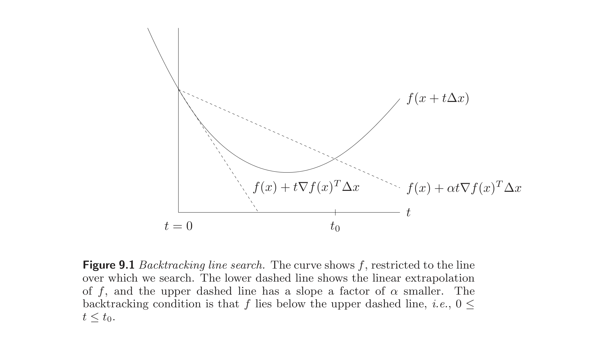
The line search is called backtracking because it starts with unit step size and then reduces it by the factor $\beta$ until the stopping condition $f(x + t\Delta x) \le f(x) + \alpha t \nabla f(x)^T \Delta x$ holds. Since $\Delta x$ is a descent direction, we have $\nabla f(x)^T \Delta x < 0$, so for small enough $t$ we have
$$ f(x + t\Delta x) \approx f(x) + t \nabla f(x)^T \Delta x < f(x) + \alpha t \nabla f(x)^T \Delta x, $$
which shows that the backtracking line search eventually terminates. The constant $\alpha$ can be interpreted as the fraction of the decrease in $f$ predicted by linear extrapolation that we will accept. (The reason for requiring $\alpha$ to be smaller than 0.5 will become clear later.)
之所以称为回溯，是因为它从单位步长开始，然后按因子 $\beta$ 缩减，直到停止条件 $f(x + t\Delta x) \le f(x) + \alpha t \nabla f(x)^T \Delta x$ 成立。由于 $\Delta x$ 是下降方向，$\nabla f(x)^T \Delta x < 0$，故对足够小的 $t$ 有
$$ f(x + t\Delta x) \approx f(x) + t \nabla f(x)^T \Delta x < f(x) + \alpha t \nabla f(x)^T \Delta x, $$
这表明回溯线搜索最终会终止。常数 $\alpha$ 可解释为我们所接受的、由线性外推预测的 $f$ 下降量的比例。（要求 $\alpha$ 小于 0.5 的原因后文将清楚。）
The backtracking condition is illustrated in figure 9.1. This figure suggests, and it can be shown, that the backtracking exit inequality $f(x + t\Delta x) \le f(x) + \alpha t \nabla f(x)^T \Delta x$ holds for $t \ge 0$ in an interval $(0, t_0]$. It follows that the backtracking line search stops with a step length $t$ that satisfies
$$ t = 1, \quad \text{or} \quad t \in (\beta t_0, t_0]. $$
The first case occurs when the step length $t = 1$ satisfies the backtracking condition, i.e., $1 \le t_0$. In particular, we can say that the step length obtained by backtracking line search satisfies
$$ t \ge \min\{1, \beta t_0\}. $$
回溯条件如图 9.1 所示。该图提示（并可证明），回溯退出不等式 $f(x + t\Delta x) \le f(x) + \alpha t \nabla f(x)^T \Delta x$ 对 $t \ge 0$ 在某区间 $(0, t_0]$ 上成立。因此回溯线搜索以一个满足
$$ t = 1, \quad \text{或} \quad t \in (\beta t_0, t_0] $$
的步长 $t$ 终止。第一种情形发生在步长 $t = 1$ 满足回溯条件时，即 $1 \le t_0$。特别地，回溯线搜索所得步长满足
$$ t \ge \min\{1, \beta t_0\}. $$
When $\mathbf{dom}\, f$ is not all of $\mathbb{R}^n$, the condition $f(x + t\Delta x) \le f(x) + \alpha t \nabla f(x)^T \Delta x$ in the backtracking line search must be interpreted carefully. By our convention that $f$ is infinite outside its domain, the inequality implies that $x + t\Delta x \in \mathbf{dom}\, f$. In a practical implementation, we first multiply $t$ by $\beta$ until $x + t\Delta x \in \mathbf{dom}\, f$; then we start to check whether the inequality $f(x + t\Delta x) \le f(x) + \alpha t \nabla f(x)^T \Delta x$ holds.
当 $\mathbf{dom}\, f$ 不是整个 $\mathbb{R}^n$ 时，回溯线搜索中的条件 $f(x + t\Delta x) \le f(x) + \alpha t \nabla f(x)^T \Delta x$ 必须谨慎解释。按我们关于 $f$ 在定义域外取无穷的约定，该不等式蕴含 $x + t\Delta x \in \mathbf{dom}\, f$。在实际实现中，首先将 $t$ 乘以 $\beta$ 直到 $x + t\Delta x \in \mathbf{dom}\, f$；然后再开始检查不等式 $f(x + t\Delta x) \le f(x) + \alpha t \nabla f(x)^T \Delta x$ 是否成立。
The parameter $\alpha$ is typically chosen between 0.01 and 0.3, meaning that we accept a decrease in $f$ between 1% and 30% of the prediction based on the linear extrapolation. The parameter $\beta$ is often chosen to be between 0.1 (which corresponds to a very crude search) and 0.8 (which corresponds to a less crude search).
参数 $\alpha$ 通常取在 0.01 到 0.3 之间，表示我们接受基于线性外推预测的 $f$ 下降量的 1% 到 30%。参数 $\beta$ 常取在 0.1（对应非常粗糙的搜索）到 0.8（对应不太粗糙的搜索）之间。
9.3 Gradient descent method
9.3 梯度下降法
A natural choice for the search direction is the negative gradient $\Delta x = -\nabla f(x)$. The resulting algorithm is called the gradient algorithm or gradient descent method.
Algorithm 9.3 Gradient descent method.
given a starting point $x \in \mathbf{dom}\, f$.
repeat
- $\Delta x := -\nabla f(x)$.
- Line search. Choose step size $t$ via exact or backtracking line search.
- Update. $x := x + t\Delta x$.
until stopping criterion is satisfied.
The stopping criterion is usually of the form $\|\nabla f(x)\|_2 \le \eta$, where $\eta$ is small and positive. In most implementations, this condition is checked after step 1, rather than after the update.
搜索方向的一个自然选择是负梯度 $\Delta x = -\nabla f(x)$。所得算法称为梯度算法或梯度下降法（gradient descent method）。
算法 9.3 梯度下降法。
给定起始点 $x \in \mathbf{dom}\, f$。
重复
- $\Delta x := -\nabla f(x)$。
- 线搜索。通过精确或回溯线搜索选择步长 $t$。
- 更新。$x := x + t\Delta x$。
直到满足停止准则。
停止准则通常取 $\|\nabla f(x)\|_2 \le \eta$（$\eta$ 为小的正数）。在多数实现中，此条件在第 1 步之后而非更新之后检查。
9.3.1 Convergence analysis
9.3.1 收敛性分析
In this section we present a simple convergence analysis for the gradient method, using the lighter notation $x^+ = x + t\Delta x$ for $x^{(k+1)} = x^{(k)} + t^{(k)}\Delta x^{(k)}$, where $\Delta x = -\nabla f(x)$. We assume $f$ is strongly convex on $S$, so there are positive constants $m$ and $M$ such that $mI \preceq \nabla^2 f(x) \preceq MI$ for all $x \in S$. Define the function $\tilde{f} : \mathbb{R} \to \mathbb{R}$ by $\tilde{f}(t) = f(x - t\nabla f(x))$, i.e., $f$ as a function of the step length $t$ in the negative gradient direction. In the following discussion we will only consider $t$ for which $x - t\nabla f(x) \in S$. From the inequality (9.13), with $y = x - t\nabla f(x)$, we obtain a quadratic upper bound on $\tilde{f}$:
$$ \tilde{f}(t) \le f(x) - t\|\nabla f(x)\|_2^2 + \frac{Mt^2}{2}\|\nabla f(x)\|_2^2. \tag{9.17} $$
本节给出梯度方法的一个简单收敛性分析，使用较简洁的记号 $x^+ = x + t\Delta x$ 代替 $x^{(k+1)} = x^{(k)} + t^{(k)}\Delta x^{(k)}$，其中 $\Delta x = -\nabla f(x)$。假设 $f$ 在 $S$ 上强凸，故存在正常数 $m$ 与 $M$ 使对所有 $x \in S$ 有 $mI \preceq \nabla^2 f(x) \preceq MI$。定义函数 $\tilde{f} : \mathbb{R} \to \mathbb{R}$ 为 $\tilde{f}(t) = f(x - t\nabla f(x))$，即 $f$ 作为沿负梯度方向步长 $t$ 的函数。下面讨论仅考虑使 $x - t\nabla f(x) \in S$ 的 $t$。在不等式 (9.13) 中令 $y = x - t\nabla f(x)$，得 $\tilde{f}$ 的二次上界：
$$ \tilde{f}(t) \le f(x) - t\|\nabla f(x)\|_2^2 + \frac{Mt^2}{2}\|\nabla f(x)\|_2^2. \tag{9.17} $$
Analysis for exact line search
精确线搜索的分析
We now assume that an exact line search is used, and minimize over $t$ both sides of the inequality (9.17). On the lefthand side we get $\tilde{f}(t_{\mathrm{exact}})$, where $t_{\mathrm{exact}}$ is the step length that minimizes $\tilde{f}$. The righthand side is a simple quadratic, which is minimized by $t = 1/M$, and has minimum value $f(x) - (1/(2M))\|\nabla f(x)\|_2^2$. Therefore we have
$$ f(x^+) = \tilde{f}(t_{\mathrm{exact}}) \le f(x) - \frac{1}{2M}\|\nabla f(x)\|_2^2. $$
Subtracting $p^\star$ from both sides, we get
$$ f(x^+) - p^\star \le f(x) - p^\star - \frac{1}{2M}\|\nabla f(x)\|_2^2. $$
We combine this with $\|\nabla f(x)\|_2^2 \ge 2m(f(x) - p^\star)$ (which follows from (9.9)) to conclude
$$ f(x^+) - p^\star \le (1 - m/M)(f(x) - p^\star). $$
Applying this inequality recursively, we find that
$$ f(x^{(k)}) - p^\star \le c^k(f(x^{(0)}) - p^\star) \tag{9.18} $$
where $c = 1 - m/M < 1$, which shows that $f(x^{(k)})$ converges to $p^\star$ as $k \to \infty$. In particular, we must have $f(x^{(k)}) - p^\star \le \epsilon$ after at most
$$ \frac{\log((f(x^{(0)}) - p^\star)/\epsilon)}{\log(1/c)} \tag{9.19} $$
iterations of the gradient method with exact line search.
现假定使用精确线搜索，对不等式 (9.17) 两端关于 $t$ 求极小。左端得 $\tilde{f}(t_{\mathrm{exact}})$，其中 $t_{\mathrm{exact}}$ 为使 $\tilde{f}$ 最小的步长。右端是一个简单的二次式，在 $t = 1/M$ 处取最小值 $f(x) - (1/(2M))\|\nabla f(x)\|_2^2$。故
$$ f(x^+) = \tilde{f}(t_{\mathrm{exact}}) \le f(x) - \frac{1}{2M}\|\nabla f(x)\|_2^2. $$
两端减去 $p^\star$，得
$$ f(x^+) - p^\star \le f(x) - p^\star - \frac{1}{2M}\|\nabla f(x)\|_2^2. $$
将其与 $\|\nabla f(x)\|_2^2 \ge 2m(f(x) - p^\star)$（由 (9.9) 得出）结合，得
$$ f(x^+) - p^\star \le (1 - m/M)(f(x) - p^\star). $$
递归地应用此不等式，得
$$ f(x^{(k)}) - p^\star \le c^k(f(x^{(0)}) - p^\star) \tag{9.18} $$
其中 $c = 1 - m/M < 1$，这表明 $f(x^{(k)})$ 当 $k \to \infty$ 时收敛到 $p^\star$。特别地，至多经过
$$ \frac{\log((f(x^{(0)}) - p^\star)/\epsilon)}{\log(1/c)} \tag{9.19} $$
次使用精确线搜索的梯度法迭代后，必有 $f(x^{(k)}) - p^\star \le \epsilon$。
This bound on the number of iterations required, even though crude, can give some insight into the gradient method. The numerator, $\log((f(x^{(0)}) - p^\star)/\epsilon)$ can be interpreted as the log of the ratio of the initial suboptimality (i.e., gap between $f(x^{(0)})$ and $p^\star$), to the final suboptimality (i.e., less than $\epsilon$). This term suggests that the number of iterations depends on how good the initial point is, and what the final required accuracy is.
这一关于所需迭代次数的界虽然粗糙，但能给出关于梯度方法的一些洞见。分子 $\log((f(x^{(0)}) - p^\star)/\epsilon)$ 可解释为初始次优性（即 $f(x^{(0)})$ 与 $p^\star$ 之差）与最终次优性（即小于 $\epsilon$）之比的对数。此项表明迭代次数取决于初始点的优劣以及最终所需精度。
The denominator appearing in the bound (9.19), $\log(1/c)$, is a function of $M/m$, which we have seen is a bound on the condition number of $\nabla^2 f(x)$ over $S$, or the condition number of the sublevel sets $\{z \mid f(z) \le \alpha\}$. For large condition number bound $M/m$, we have
$$ \log(1/c) = -\log(1 - m/M) \approx m/M, $$
so our bound on the number of iterations required increases approximately linearly with increasing $M/m$.
界 (9.19) 中分母 $\log(1/c)$ 是 $M/m$ 的函数，而 $M/m$ 我们已知是 $\nabla^2 f(x)$ 在 $S$ 上条件数的上界，或水平集 $\{z \mid f(z) \le \alpha\}$ 条件数的上界。对于大的条件数上界 $M/m$，有
$$ \log(1/c) = -\log(1 - m/M) \approx m/M, $$
故所需迭代次数的界随 $M/m$ 的增大近似线性增长。
We will see that the gradient method does in fact require a large number of iterations when the Hessian of $f$, near $x^\star$, has a large condition number. Conversely, when the sublevel sets of $f$ are relatively isotropic, so that the condition number bound $M/m$ can be chosen to be relatively small, the bound (9.18) shows that convergence is rapid, since $c$ is small, or at least not too close to one.
我们将看到，当 $f$ 在 $x^\star$ 附近 Hessian 的条件数较大时，梯度方法确实需要大量迭代。反之，当 $f$ 的水平集相对各向同性，使条件数上界 $M/m$ 可取得相对较小时，界 (9.18) 表明收敛快，因为 $c$ 小，或至少不很接近 1。
The bound (9.18) shows that the error $f(x^{(k)}) - p^\star$ converges to zero at least as fast as a geometric series. In the context of iterative numerical methods, this is called linear convergence, since the error lies below a line on a log-linear plot of error versus iteration number.
界 (9.18) 表明误差 $f(x^{(k)}) - p^\star$ 收敛到零至少与几何级数一样快。在迭代数值方法的语境中，这称为线性收敛（linear convergence），因为误差在误差对迭代序数的对数-线性图上位于一条直线之下。
Analysis for backtracking line search
回溯线搜索的分析
Now we consider the case where a backtracking line search is used in the gradient descent method. We will show that the backtracking exit condition,
$$ \tilde{f}(t) \le f(x) - \alpha t \|\nabla f(x)\|_2^2, $$
is satisfied whenever $0 \le t \le 1/M$. First note that
$$ 0 \le t \le 1/M \;\Longrightarrow\; -t + \frac{Mt^2}{2} \le -t/2 $$
(which follows from convexity of $-t + Mt^2/2$). Using this result and the bound (9.17), we have, for $0 \le t \le 1/M$,
$$ \tilde{f}(t) \le f(x) - t\|\nabla f(x)\|_2^2 + \frac{Mt^2}{2}\|\nabla f(x)\|_2^2 \le f(x) - (t/2)\|\nabla f(x)\|_2^2 \le f(x) - \alpha t \|\nabla f(x)\|_2^2, $$
since $\alpha < 1/2$. Therefore the backtracking line search terminates either with $t = 1$ or with a value $t \ge \beta/M$. This provides a lower bound on the decrease in the objective function. In the first case we have
$$ f(x^+) \le f(x) - \alpha \|\nabla f(x)\|_2^2, $$
and in the second case we have
$$ f(x^+) \le f(x) - (\beta\alpha/M)\|\nabla f(x)\|_2^2. $$
Putting these together, we always have
$$ f(x^+) \le f(x) - \min\{\alpha, \beta\alpha/M\}\|\nabla f(x)\|_2^2. $$
现考虑梯度下降法中使用回溯线搜索的情形。将证明回溯退出条件
$$ \tilde{f}(t) \le f(x) - \alpha t \|\nabla f(x)\|_2^2 $$
只要 $0 \le t \le 1/M$ 就成立。首先注意
$$ 0 \le t \le 1/M \;\Longrightarrow\; -t + \frac{Mt^2}{2} \le -t/2 $$
（由 $-t + Mt^2/2$ 的凸性得出）。利用此结果和界 (9.17)，对 $0 \le t \le 1/M$ 有
$$ \tilde{f}(t) \le f(x) - t\|\nabla f(x)\|_2^2 + \frac{Mt^2}{2}\|\nabla f(x)\|_2^2 \le f(x) - (t/2)\|\nabla f(x)\|_2^2 \le f(x) - \alpha t \|\nabla f(x)\|_2^2, $$
因 $\alpha < 1/2$。故回溯线搜索或者以 $t = 1$ 终止，或者以一个满足 $t \ge \beta/M$ 的值终止。这为目标函数的下降提供了下界。第一种情形有
$$ f(x^+) \le f(x) - \alpha \|\nabla f(x)\|_2^2, $$
第二种情形有
$$ f(x^+) \le f(x) - (\beta\alpha/M)\|\nabla f(x)\|_2^2. $$
综合两种情形，总有
$$ f(x^+) \le f(x) - \min\{\alpha, \beta\alpha/M\}\|\nabla f(x)\|_2^2. $$
Now we can proceed exactly as in the case of exact line search. We subtract $p^\star$ from both sides to get
$$ f(x^+) - p^\star \le f(x) - p^\star - \min\{\alpha, \beta\alpha/M\}\|\nabla f(x)\|_2^2, $$
and combine this with $\|\nabla f(x)\|_2^2 \ge 2m(f(x) - p^\star)$ to obtain
$$ f(x^+) - p^\star \le (1 - \min\{2m\alpha, 2\beta\alpha m/M\})(f(x) - p^\star). $$
From this we conclude
$$ f(x^{(k)}) - p^\star \le c^k(f(x^{(0)}) - p^\star) $$
where
$$ c = 1 - \min\{2m\alpha, 2\beta\alpha m/M\} < 1. $$
In particular, $f(x^{(k)})$ converges to $p^\star$ at least as fast as a geometric series with an exponent that depends (at least in part) on the condition number bound $M/m$. In the terminology of iterative methods, the convergence is at least linear.
现在可如精确线搜索情形一样进行。两端减 $p^\star$ 得
$$ f(x^+) - p^\star \le f(x) - p^\star - \min\{\alpha, \beta\alpha/M\}\|\nabla f(x)\|_2^2, $$
再与 $\|\nabla f(x)\|_2^2 \ge 2m(f(x) - p^\star)$ 结合得
$$ f(x^+) - p^\star \le (1 - \min\{2m\alpha, 2\beta\alpha m/M\})(f(x) - p^\star). $$
由此可得
$$ f(x^{(k)}) - p^\star \le c^k(f(x^{(0)}) - p^\star) $$
其中
$$ c = 1 - \min\{2m\alpha, 2\beta\alpha m/M\} < 1. $$
特别地，$f(x^{(k)})$ 收敛到 $p^\star$ 至少与一个指数至少部分依赖于条件数上界 $M/m$ 的几何级数一样快。用迭代方法的术语，收敛至少是线性的。
9.3.2 Examples
9.3.2 例子
A quadratic problem in $\mathbb{R}^2$
$\mathbb{R}^2$ 中的二次问题
Our first example is very simple. We consider the quadratic objective function on $\mathbb{R}^2$
$$ f(x) = \frac{1}{2}(x_1^2 + \gamma x_2^2), $$
where $\gamma > 0$. Clearly, the optimal point is $x^\star = 0$, and the optimal value is 0. The Hessian of $f$ is constant, and has eigenvalues 1 and $\gamma$, so the condition numbers of the sublevel sets of $f$ are all exactly
$$ \frac{\max\{1, \gamma\}}{\min\{1, \gamma\}} = \max\{\gamma, 1/\gamma\}. $$
The tightest choices for the strong convexity constants $m$ and $M$ are
$$ m = \min\{1, \gamma\}, \qquad M = \max\{1, \gamma\}. $$
We apply the gradient descent method with exact line search, starting at the point $x^{(0)} = (\gamma, 1)$. In this case we can derive the following closed-form expressions for the iterates $x^{(k)}$ and their function values (exercise 9.6):
$$ x_1^{(k)} = \gamma \left(\frac{\gamma - 1}{\gamma + 1}\right)^k, \qquad x_2^{(k)} = \left(\frac{-\gamma - 1}{\gamma + 1}\right)^k, $$
and
$$ f(x^{(k)}) = \frac{\gamma(\gamma + 1)}{2} \left(\frac{\gamma - 1}{\gamma + 1}\right)^{2k} = \left(\frac{\gamma - 1}{\gamma + 1}\right)^{2k} f(x^{(0)}). $$
This is illustrated in figure 9.2, for $\gamma = 10$.
第一个例子很简单。考虑 $\mathbb{R}^2$ 上的二次目标函数
$$ f(x) = \frac{1}{2}(x_1^2 + \gamma x_2^2), $$
其中 $\gamma > 0$。显然最优点为 $x^\star = 0$，最优值为 0。$f$ 的 Hessian 为常数，特征值为 1 和 $\gamma$，故 $f$ 的水平集的条件数均为
$$ \frac{\max\{1, \gamma\}}{\min\{1, \gamma\}} = \max\{\gamma, 1/\gamma\}. $$
强凸性常数 $m$ 与 $M$ 的最紧选取为
$$ m = \min\{1, \gamma\}, \qquad M = \max\{1, \gamma\}. $$
从点 $x^{(0)} = (\gamma, 1)$ 出发，应用使用精确线搜索的梯度下降法。此时可导出迭代点 $x^{(k)}$ 及其函数值的如下闭式表达（习题 9.6）：
$$ x_1^{(k)} = \gamma \left(\frac{\gamma - 1}{\gamma + 1}\right)^k, \qquad x_2^{(k)} = \left(\frac{-\gamma - 1}{\gamma + 1}\right)^k, $$
以及
$$ f(x^{(k)}) = \frac{\gamma(\gamma + 1)}{2} \left(\frac{\gamma - 1}{\gamma + 1}\right)^{2k} = \left(\frac{\gamma - 1}{\gamma + 1}\right)^{2k} f(x^{(0)}). $$
图 9.2 以 $\gamma = 10$ 作了说明。
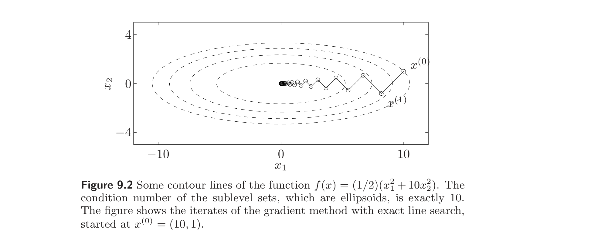
For this simple example, convergence is exactly linear, i.e., the error is exactly a geometric series, reduced by the factor $|(\gamma - 1)/(\gamma + 1)|^2$ at each iteration. For $\gamma = 1$, the exact solution is found in one iteration; for $\gamma$ not far from one (say, between 1/3 and 3) convergence is rapid. The convergence is very slow for $\gamma \gg 1$ or $\gamma \ll 1$.
对于此简单例子，收敛恰为线性的，即误差恰为一个几何级数，每次迭代按因子 $|(\gamma - 1)/(\gamma + 1)|^2$ 缩减。当 $\gamma = 1$ 时，一次迭代即得精确解；当 $\gamma$ 接近 1（如介于 1/3 与 3 之间）时收敛快。当 $\gamma \gg 1$ 或 $\gamma \ll 1$ 时收敛非常慢。
We can compare the convergence with the bound derived above in §9.3.1. Using the least conservative values $m = \min\{1, \gamma\}$ and $M = \max\{1, \gamma\}$, the bound (9.18) guarantees that the error in each iteration is reduced at least by the factor $c = (1 - m/M)$. We have seen that the error is in fact reduced exactly by the factor
$$ \left(\frac{1 - m/M}{1 + m/M}\right)^2 $$
in each iteration. For small $m/M$, which corresponds to large condition number, the upper bound (9.19) implies that the number of iterations required to obtain a given level of accuracy grows at most like $M/m$. For this example, the exact number of iterations required grows approximately like $(M/m)/4$, i.e., one quarter of the value of the bound. This shows that for this simple example, the bound on the number of iterations derived in our simple analysis is only about a factor of four conservative (using the least conservative values for $m$ and $M$). In particular, the convergence rate (as well as its upper bound) is very dependent on the condition number of the sublevel sets.
可将收敛与 §9.3.1 所得的界作比较。用最不保守的值 $m = \min\{1, \gamma\}$、$M = \max\{1, \gamma\}$，界 (9.18) 保证每次迭代误差至少按因子 $c = (1 - m/M)$ 缩减。而我们已见误差实际恰按因子
$$ \left(\frac{1 - m/M}{1 + m/M}\right)^2 $$
缩减。对于小的 $m/M$（对应大的条件数），上界 (9.19) 蕴含达到给定精度所需迭代次数至多按 $M/m$ 增长。对此例，所需精确迭代次数近似按 $(M/m)/4$ 增长，即界的值的四分之一。这表明对此简单例子，我们的简单分析所得迭代次数的界仅保守约四倍（使用 $m$、$M$ 的最不保守值）。特别地，收敛速率（及其上界）高度依赖于水平集的条件数。
A nonquadratic problem in $\mathbb{R}^2$
$\mathbb{R}^2$ 中的非二次问题
We now consider a nonquadratic example in $\mathbb{R}^2$, with
$$ f(x_1, x_2) = e^{x_1+3x_2-0.1} + e^{x_1-3x_2-0.1} + e^{-x_1-0.1}. \tag{9.20} $$
We apply the gradient method with a backtracking line search, with $\alpha = 0.1$, $\beta = 0.7$. Figure 9.3 shows some level curves of $f$, and the iterates $x^{(k)}$ generated by the gradient method (shown as small circles). The lines connecting successive iterates show the scaled steps,
$$ x^{(k+1)} - x^{(k)} = -t^{(k)}\nabla f(x^{(k)}). $$
Figure 9.4 shows the error $f(x^{(k)}) - p^\star$ versus iteration $k$. The plot reveals that the error converges to zero approximately as a geometric series, i.e., the convergence is approximately linear. In this example, the error is reduced from about 10 to about $10^{-7}$ in 20 iterations, so the error is reduced by a factor of approximately $10^{-8/20} \approx 0.4$ each iteration. This reasonably rapid convergence is predicted by our convergence analysis, since the sublevel sets of $f$ are not too badly conditioned, which in turn means that $M/m$ can be chosen as not too large.
现考虑 $\mathbb{R}^2$ 上的一个非二次例子：
$$ f(x_1, x_2) = e^{x_1+3x_2-0.1} + e^{x_1-3x_2-0.1} + e^{-x_1-0.1}. \tag{9.20} $$
对 $f$ 应用使用回溯线搜索的梯度法，参数 $\alpha = 0.1$、$\beta = 0.7$。图 9.3 显示了 $f$ 的若干等高线以及梯度法产生的迭代点 $x^{(k)}$（小圆圈）。连接相继迭代点的线段表示缩放后的步：
$$ x^{(k+1)} - x^{(k)} = -t^{(k)}\nabla f(x^{(k)}). $$
图 9.4 显示了误差 $f(x^{(k)}) - p^\star$ 对迭代序数 $k$ 的图。该图表明误差近似以几何级数收敛到零，即收敛近似为线性的。此例中误差在 20 次迭代内从约 10 降到约 $10^{-7}$，故每次迭代误差约按因子 $10^{-8/20} \approx 0.4$ 缩减。这种相当快的收敛由我们的收敛性分析所预测，因为 $f$ 的水平集条件数不太坏，这又意味着 $M/m$ 可取得不太大。
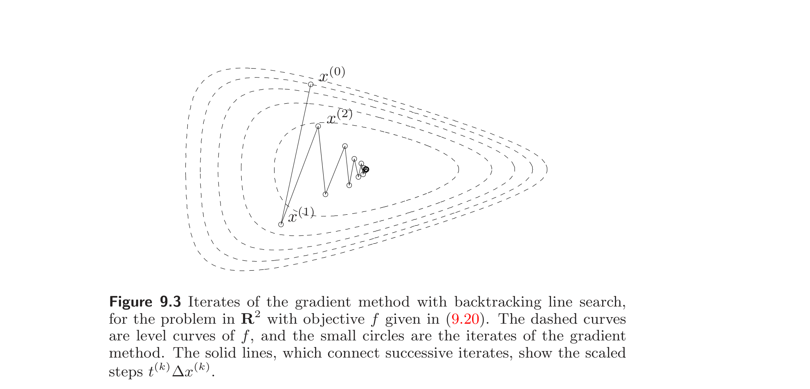
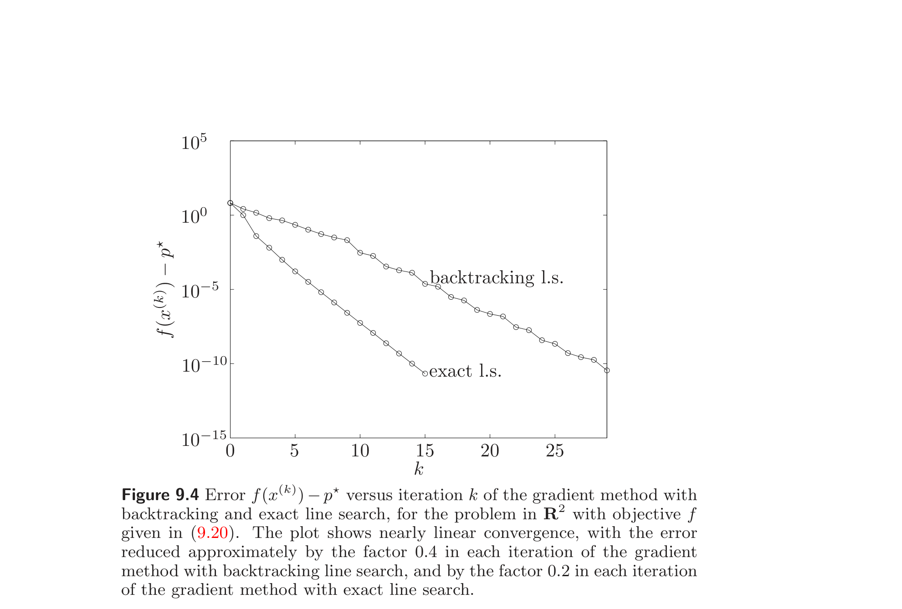
To compare backtracking line search with an exact line search, we use the gradient method with an exact line search, on the same problem, and with the same starting point. The results are given in figures 9.5 and 9.4. Here too the convergence is approximately linear, about twice as fast as the gradient method with backtracking line search. With exact line search, the error is reduced by about $10^{-11}$ in 15 iterations, i.e., a reduction by a factor of about $10^{-11/15} \approx 0.2$ per iteration.
为将回溯线搜索与精确线搜索作比较，在同一问题上、同一初始点处使用精确线搜索的梯度法。结果见图 9.5 和 9.4。此处收敛也近似为线性的，约为回溯线搜索梯度法的两倍快。使用精确线搜索时，误差在 15 次迭代内约缩减 $10^{-11}$，即每次迭代约按因子 $10^{-11/15} \approx 0.2$ 缩减。
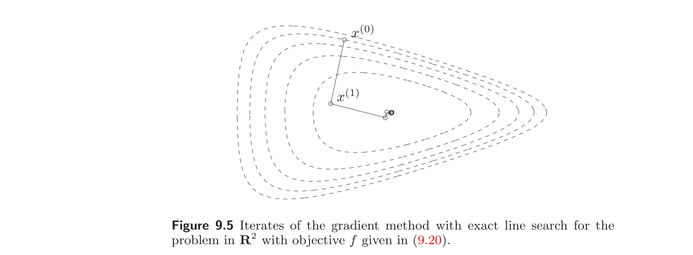
A problem in $\mathbb{R}^{100}$
$\mathbb{R}^{100}$ 中的问题
We next consider a larger example, of the form
$$ f(x) = c^T x - \sum_{i=1}^m \log(b_i - a_i^T x), \tag{9.21} $$
with $m = 500$ terms and $n = 100$ variables. The progress of the gradient method with backtracking line search, with parameters $\alpha = 0.1$, $\beta = 0.5$, is shown in figure 9.6. In this example we see an initial approximately linear and fairly rapid convergence for about 20 iterations, followed by a slower linear convergence. Overall, the error is reduced by a factor of around $10^6$ in around 175 iterations, which gives an average error reduction by a factor of around $10^{-6/175} \approx 0.92$ per iteration. The initial convergence rate, for the first 20 iterations, is around a factor of 0.8 per iteration; the slower final convergence rate, after the first 20 iterations, is around a factor of 0.94 per iteration.
下一个考虑一个更大的例子，形式为
$$ f(x) = c^T x - \sum_{i=1}^m \log(b_i - a_i^T x), \tag{9.21} $$
共 $m = 500$ 项、$n = 100$ 个变量。使用回溯线搜索（参数 $\alpha = 0.1$、$\beta = 0.5$）的梯度法的进展见图 9.6。此例中可见初始约 20 次迭代为近似线性且相当快的收敛，随后是较慢的线性收敛。总体上，误差在约 175 次迭代内缩减约 $10^6$ 倍，即平均每次迭代约按因子 $10^{-6/175} \approx 0.92$ 缩减。前 20 次迭代的初始收敛速率约为每次 0.8；20 次之后的较慢最终收敛速率约为每次 0.94。
Figure 9.6 shows the convergence of the gradient method with exact line search. The convergence is again approximately linear, with an overall error reduction by approximately a factor $10^{-6/140} \approx 0.91$ per iteration. This is only a bit faster than the gradient method with backtracking line search.
图 9.6 显示了使用精确线搜索的梯度法的收敛。收敛同样近似为线性的，总体误差每次迭代约按因子 $10^{-6/140} \approx 0.91$ 缩减。这仅比回溯线搜索的梯度法略快。
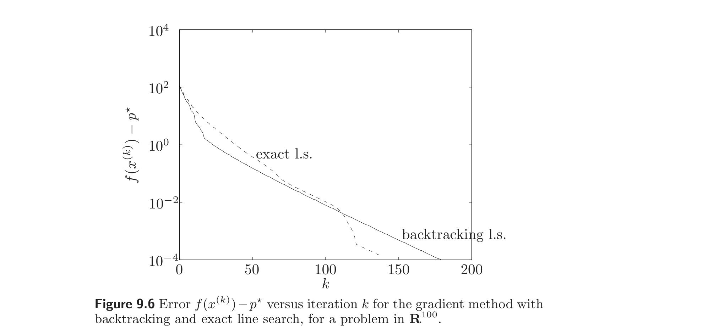
Finally, we examine the influence of the backtracking line search parameters $\alpha$ and $\beta$ on the convergence rate, by determining the number of iterations required to obtain $f(x^{(k)}) - p^\star \le 10^{-5}$. In the first experiment, we fix $\beta = 0.5$, and vary $\alpha$ from 0.05 to 0.5. The number of iterations required varies from about 80, for larger values of $\alpha$, in the range 0.2–0.5, to about 170 for smaller values of $\alpha$. This, and other experiments, suggest that the gradient method works better with fairly large $\alpha$, in the range 0.2–0.5.
最后，通过确定达到 $f(x^{(k)}) - p^\star \le 10^{-5}$ 所需迭代次数，考察回溯线搜索参数 $\alpha$ 与 $\beta$ 对收敛速率的影响。第一个实验固定 $\beta = 0.5$，将 $\alpha$ 从 0.05 变到 0.5。所需迭代次数从较大 $\alpha$（在 0.2–0.5 范围）时的约 80 到较小 $\alpha$ 时的约 170。此实验及其他实验表明，梯度法在 $\alpha$ 较大（0.2–0.5 范围）时表现更好。
Similarly, we can study the effect of the choice of $\beta$ by fixing $\alpha = 0.1$ and varying $\beta$ from 0.05 to 0.95. Again the variation in the total number of iterations is not large, ranging from around 80 (when $\beta \approx 0.5$) to around 200 (for $\beta$ small, or near 1). This experiment, and others, suggest that $\beta \approx 0.5$ is a good choice.
类似地，固定 $\alpha = 0.1$，将 $\beta$ 从 0.05 变到 0.95，可研究 $\beta$ 选择的影响。总迭代次数变化不大，从约 80（当 $\beta \approx 0.5$）到约 200（$\beta$ 很小或接近 1）。此实验及其他实验表明 $\beta \approx 0.5$ 是一个好的选择。
These experiments suggest that the effect of the backtracking parameters on the convergence is not large, no more than a factor of two or so.
这些实验表明回溯参数对收敛的影响不大，至多约两倍。
Gradient method and condition number
梯度法与条件数
Our last experiment will illustrate the importance of the condition number of $\nabla^2 f(x)$ (or the sublevel sets) on the rate of convergence of the gradient method. We start with the function given by (9.21), but replace the variable $x$ by $x = T\bar{x}$, where
$$ T = \mathbf{diag}((1, \gamma^{1/n}, \gamma^{2/n}, \ldots, \gamma^{(n-1)/n})), $$
i.e., we minimize
$$ \bar{f}(\bar{x}) = c^T T \bar{x} - \sum_{i=1}^m \log(b_i - a_i^T T \bar{x}). \tag{9.22} $$
This gives us a family of optimization problems, indexed by $\gamma$, which affects the problem condition number.
最后一个实验将说明 $\nabla^2 f(x)$（或水平集）的条件数对梯度法收敛速率的重要性。从 (9.21) 给出的函数出发，但将变量 $x$ 换为 $x = T\bar{x}$，其中
$$ T = \mathbf{diag}((1, \gamma^{1/n}, \gamma^{2/n}, \ldots, \gamma^{(n-1)/n})), $$
即极小化
$$ \bar{f}(\bar{x}) = c^T T \bar{x} - \sum_{i=1}^m \log(b_i - a_i^T T \bar{x}). \tag{9.22} $$
这给出一族以 $\gamma$ 为指标的优化问题，$\gamma$ 影响问题的条件数。
Figure 9.7 shows the number of iterations required to achieve $\bar{f}(\bar{x}^{(k)}) - \bar{p}^\star < 10^{-5}$ as a function of $\gamma$, using a backtracking line search with $\alpha = 0.3$ and $\beta = 0.7$. This plot shows that for diagonal scaling as small as 10 : 1 (i.e., $\gamma = 10$), the number of iterations grows to more than a thousand; for a diagonal scaling of 20 or more, the gradient method slows to essentially useless.
图 9.7 显示了使用回溯线搜索（$\alpha = 0.3$、$\beta = 0.7$）时，达到 $\bar{f}(\bar{x}^{(k)}) - \bar{p}^\star < 10^{-5}$ 所需迭代次数作为 $\gamma$ 的函数。该图表明，即使对角缩放仅 10 : 1（即 $\gamma = 10$），迭代次数就增长到上千；对角缩放达 20 或更大时，梯度法慢到几乎无用。
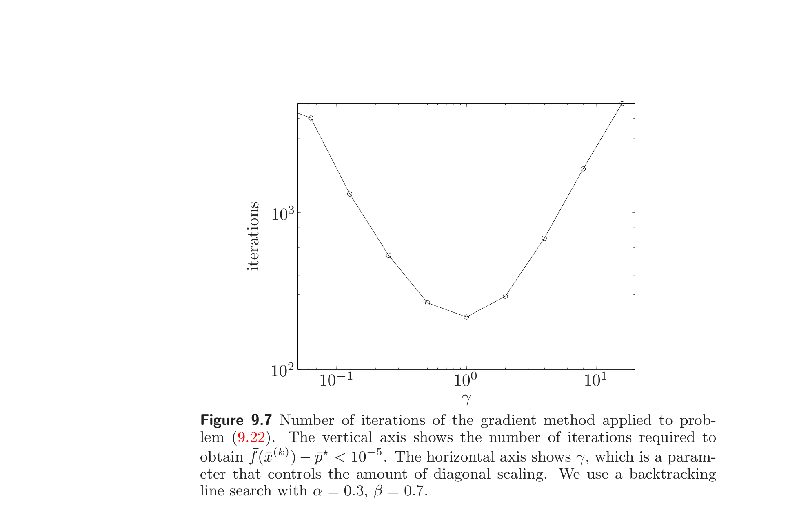
The condition number of the Hessian $\nabla^2 \bar{f}(\bar{x}^\star)$ at the optimum is shown in figure 9.8. For large and small $\gamma$, the condition number increases roughly as $\max\{\gamma^2, 1/\gamma^2\}$, in a very similar way as the number of iterations depends on $\gamma$. This shows again that the relation between conditioning and convergence speed is a real phenomenon, and not just an artifact of our analysis.
最优点处 Hessian $\nabla^2 \bar{f}(\bar{x}^\star)$ 的条件数见图 9.8。对大的和小的 $\gamma$，条件数大致按 $\max\{\gamma^2, 1/\gamma^2\}$ 增长，与迭代次数依赖 $\gamma$ 的方式非常相似。这再次表明条件数与收敛速度之间的关系是真实的现象，而非分析的假象。
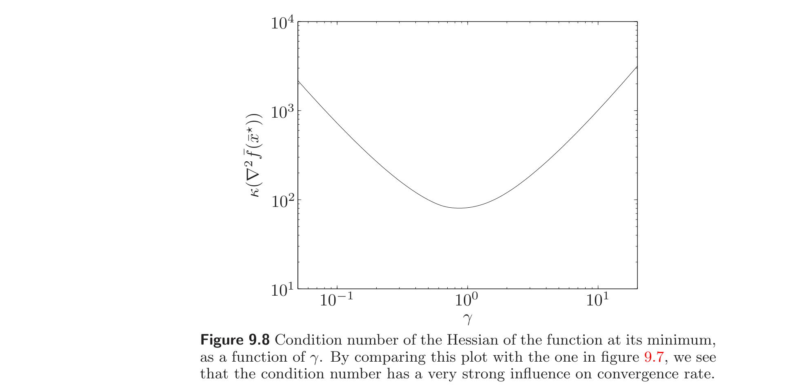
Conclusions
结论
From the numerical examples shown, and others, we can make the conclusions summarized below.
- The gradient method often exhibits approximately linear convergence, i.e., the error $f(x^{(k)}) - p^\star$ converges to zero approximately as a geometric series.
- The choice of backtracking parameters $\alpha, \beta$ has a noticeable but not dramatic effect on the convergence. An exact line search sometimes improves the convergence of the gradient method, but the effect is not large (and probably not worth the trouble of implementing the exact line search).
- The convergence rate depends greatly on the condition number of the Hessian, or the sublevel sets. Convergence can be very slow, even for problems that are moderately well conditioned (say, with condition number in the 100s). When the condition number is larger (say, 1000 or more) the gradient method is so slow that it is useless in practice.
The main advantage of the gradient method is its simplicity. Its main disadvantage is that its convergence rate depends so critically on the condition number of the Hessian or sublevel sets.
由所示数值例子及其他例子，可得出如下结论。
- 梯度法常表现出近似线性收敛，即误差 $f(x^{(k)}) - p^\star$ 近似以几何级数收敛到零。
- 回溯参数 $\alpha$、$\beta$ 的选择对收敛有明显但不大的影响。精确线搜索有时能改善梯度法的收敛，但影响不大（且可能不值得为实现精确线搜索而费力）。
- 收敛速率极大地依赖于 Hessian 或水平集的条件数。即使对条件适中的问题（如条件数在数百量级），收敛也可能很慢。当条件数更大（如 1000 或更大）时，梯度法慢到实践中无用。
梯度法的主要优点是简单。主要缺点是收敛速率如此关键地依赖于 Hessian 或水平集的条件数。
9.4 Steepest descent method
9.4 最速下降法
The first-order Taylor approximation of $f(x + v)$ around $x$ is
$$ f(x + v) \approx \hat{f}(x + v) = f(x) + \nabla f(x)^T v. $$
The second term on the righthand side, $\nabla f(x)^T v$, is the directional derivative of $f$ at $x$ in the direction $v$. It gives the approximate change in $f$ for a small step $v$. The step $v$ is a descent direction if the directional derivative is negative.
We now address the question of how to choose $v$ to make the directional derivative as negative as possible. Since the directional derivative $\nabla f(x)^T v$ is linear in $v$, it can be made as negative as we like by taking $v$ large (provided $v$ is a descent direction, i.e., $\nabla f(x)^T v < 0$). To make the question sensible we have to limit the size of $v$, or normalize by the length of $v$.
Let $\|\cdot\|$ be any norm on $\mathbb{R}^n$. We define a normalized steepest descent direction (with respect to the norm $\|\cdot\|$) as
$$ \Delta x_{\mathrm{nsd}} = \arg\min\{\nabla f(x)^T v \mid \|v\| = 1\}. \tag{9.23} $$
(We say 'a' steepest descent direction because there can be multiple minimizers.) A normalized steepest descent direction $\Delta x_{\mathrm{nsd}}$ is a step of unit norm that gives the largest decrease in the linear approximation of $f$.
A normalized steepest descent direction can be interpreted geometrically as follows. We can just as well define $\Delta x_{\mathrm{nsd}}$ as
$$ \Delta x_{\mathrm{nsd}} = \arg\min\{\nabla f(x)^T v \mid \|v\| \le 1\}, $$
i.e., as the direction in the unit ball of $\|\cdot\|$ that extends farthest in the direction $-\nabla f(x)$.
$f(x + v)$ 在 $x$ 处的一阶 Taylor 近似为
$$ f(x + v) \approx \hat{f}(x + v) = f(x) + \nabla f(x)^T v. $$
右端第二项 $\nabla f(x)^T v$ 是 $f$ 在 $x$ 处沿方向 $v$ 的方向导数（directional derivative）。它给出 $f$ 在小步 $v$ 下的近似变化。若方向导数为负，则 $v$ 为下降方向。
现在讨论如何选择 $v$ 使方向导数尽可能负。由于方向导数 $\nabla f(x)^T v$ 关于 $v$ 是线性的，只要 $v$ 是下降方向（即 $\nabla f(x)^T v < 0$），取 $v$ 足够大即可使其任意负。为使问题有意义，必须限制 $v$ 的大小，或按 $v$ 的长度归一化。
设 $\|\cdot\|$ 为 $\mathbb{R}^n$ 上的任一范数。定义（关于范数 $\|\cdot\|$ 的）归一化最速下降方向（normalized steepest descent direction）为
$$ \Delta x_{\mathrm{nsd}} = \arg\min\{\nabla f(x)^T v \mid \|v\| = 1\}. \tag{9.23} $$
（说“一个”最速下降方向，是因为可能有多个极小点。）归一化最速下降方向 $\Delta x_{\mathrm{nsd}}$ 是一个单位范数的步，它使 $f$ 的线性近似下降最大。
归一化最速下降方向可有如下几何解释。也可将 $\Delta x_{\mathrm{nsd}}$ 定义为
$$ \Delta x_{\mathrm{nsd}} = \arg\min\{\nabla f(x)^T v \mid \|v\| \le 1\}, $$
即 $\|\cdot\|$ 的单位球中沿 $-\nabla f(x)$ 方向延伸最远的方向。
It is also convenient to consider a steepest descent step $\Delta x_{\mathrm{sd}}$ that is unnormalized, by scaling the normalized steepest descent direction in a particular way:
$$ \Delta x_{\mathrm{sd}} = \|\nabla f(x)\|_* \Delta x_{\mathrm{nsd}}, \tag{9.24} $$
where $\|\cdot\|_*$ denotes the dual norm. Note that for the steepest descent step, we have
$$ \nabla f(x)^T \Delta x_{\mathrm{sd}} = \|\nabla f(x)\|_* \nabla f(x)^T \Delta x_{\mathrm{nsd}} = -\|\nabla f(x)\|_*^2 $$
(see exercise 9.7).
The steepest descent method uses the steepest descent direction as search direction.
Algorithm 9.4 Steepest descent method.
given a starting point $x \in \mathbf{dom}\, f$.
repeat
- Compute steepest descent direction $\Delta x_{\mathrm{sd}}$.
- Line search. Choose $t$ via backtracking or exact line search.
- Update. $x := x + t\Delta x_{\mathrm{sd}}$.
until stopping criterion is satisfied.
When exact line search is used, scale factors in the descent direction have no effect, so the normalized or unnormalized direction can be used.
还方便考虑一个未归一化的最速下降步 $\Delta x_{\mathrm{sd}}$，即将归一化最速下降方向按特定方式缩放：
$$ \Delta x_{\mathrm{sd}} = \|\nabla f(x)\|_* \Delta x_{\mathrm{nsd}}, \tag{9.24} $$
其中 $\|\cdot\|_*$ 表示对偶范数。注意对最速下降步有
$$ \nabla f(x)^T \Delta x_{\mathrm{sd}} = \|\nabla f(x)\|_* \nabla f(x)^T \Delta x_{\mathrm{nsd}} = -\|\nabla f(x)\|_*^2 $$
（见习题 9.7）。
最速下降法以最速下降方向作为搜索方向。
算法 9.4 最速下降法。
给定起始点 $x \in \mathbf{dom}\, f$。
重复
- 计算最速下降方向 $\Delta x_{\mathrm{sd}}$。
- 线搜索。通过回溯或精确线搜索选择 $t$。
- 更新。$x := x + t\Delta x_{\mathrm{sd}}$。
直到满足停止准则。
使用精确线搜索时，下降方向中的尺度因子无影响，故可用归一化或未归一化的方向。
9.4.1 Steepest descent for Euclidean and quadratic norms
9.4.1 欧氏范数与二次范数下的最速下降
Steepest descent for Euclidean norm
欧氏范数下的最速下降
If we take the norm $\|\cdot\|$ to be the Euclidean norm we find that the steepest descent direction is simply the negative gradient, i.e., $\Delta x_{\mathrm{sd}} = -\nabla f(x)$. The steepest descent method for the Euclidean norm coincides with the gradient descent method.
若取范数 $\|\cdot\|$ 为欧氏范数，则最速下降方向恰为负梯度，即 $\Delta x_{\mathrm{sd}} = -\nabla f(x)$。欧氏范数下的最速下降法与梯度下降法一致。
Steepest descent for quadratic norm
二次范数下的最速下降
We consider the quadratic norm
$$ \|z\|_P = (z^T P z)^{1/2} = \|P^{1/2} z\|_2, $$
where $P \in \mathbb{S}^n_{++}$. The normalized steepest descent direction is given by
$$ \Delta x_{\mathrm{nsd}} = -\left(\nabla f(x)^T P^{-1}\nabla f(x)\right)^{-1/2} P^{-1}\nabla f(x). $$
The dual norm is given by $\|z\|_* = \|P^{-1/2} z\|_2$, so the steepest descent step with respect to $\|\cdot\|_P$ is given by
$$ \Delta x_{\mathrm{sd}} = -P^{-1}\nabla f(x). \tag{9.25} $$
The normalized steepest descent direction for a quadratic norm is illustrated in figure 9.9.
考虑二次范数
$$ \|z\|_P = (z^T P z)^{1/2} = \|P^{1/2} z\|_2, $$
其中 $P \in \mathbb{S}^n_{++}$。归一化最速下降方向为
$$ \Delta x_{\mathrm{nsd}} = -\left(\nabla f(x)^T P^{-1}\nabla f(x)\right)^{-1/2} P^{-1}\nabla f(x). $$
对偶范数为 $\|z\|_* = \|P^{-1/2} z\|_2$，故关于 $\|\cdot\|_P$ 的最速下降步为
$$ \Delta x_{\mathrm{sd}} = -P^{-1}\nabla f(x). \tag{9.25} $$
二次范数下的归一化最速下降方向见图 9.9。
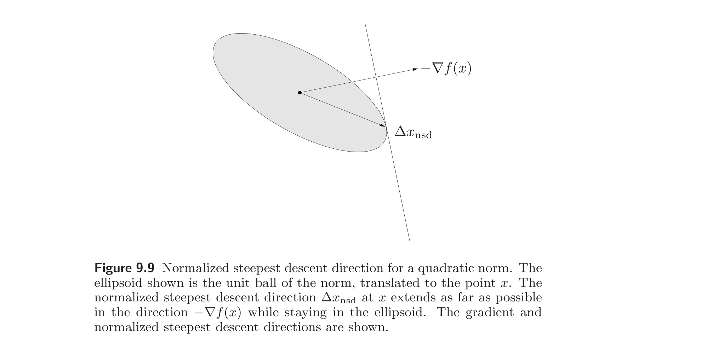
Interpretation via change of coordinates
通过变量替换的解释
We can give an interesting alternative interpretation of the steepest descent direction $\Delta x_{\mathrm{sd}}$ as the gradient search direction after a change of coordinates is applied to the problem. Define $\bar{u} = P^{1/2}u$, so we have $\|u\|_P = \|\bar{u}\|_2$. Using this change of coordinates, we can solve the original problem of minimizing $f$ by solving the equivalent problem of minimizing the function $\bar{f} : \mathbb{R}^n \to \mathbb{R}$, given by
$$ \bar{f}(\bar{u}) = f(P^{-1/2}\bar{u}) = f(u). $$
If we apply the gradient method to $\bar{f}$, the search direction at a point $\bar{x}$ (which corresponds to the point $x = P^{-1/2}\bar{x}$ for the original problem) is
$$ \Delta \bar{x} = -\nabla \bar{f}(\bar{x}) = -P^{-1/2}\nabla f(P^{-1/2}\bar{x}) = -P^{-1/2}\nabla f(x). $$
This gradient search direction corresponds to the direction
$$ \Delta x = P^{-1/2}\left(-P^{-1/2}\nabla f(x)\right) = -P^{-1}\nabla f(x) $$
for the original variable $x$. In other words, the steepest descent method in the quadratic norm $\|\cdot\|_P$ can be thought of as the gradient method applied to the problem after the change of coordinates $\bar{x} = P^{1/2}x$.
可给出最速下降方向 $\Delta x_{\mathrm{sd}}$ 的另一种有趣解释：它是对问题施加变量替换后的梯度搜索方向。定义 $\bar{u} = P^{1/2}u$，则 $\|u\|_P = \|\bar{u}\|_2$。利用此变量替换，极小化 $f$ 的原问题可由极小化函数 $\bar{f} : \mathbb{R}^n \to \mathbb{R}$ 的等价问题求解：
$$ \bar{f}(\bar{u}) = f(P^{-1/2}\bar{u}) = f(u). $$
若对 $\bar{f}$ 应用梯度法，则在点 $\bar{x}$（对应原问题的点 $x = P^{-1/2}\bar{x}$）处的搜索方向为
$$ \Delta \bar{x} = -\nabla \bar{f}(\bar{x}) = -P^{-1/2}\nabla f(P^{-1/2}\bar{x}) = -P^{-1/2}\nabla f(x). $$
此梯度搜索方向对应原变量 $x$ 的方向
$$ \Delta x = P^{-1/2}\left(-P^{-1/2}\nabla f(x)\right) = -P^{-1}\nabla f(x). $$
换言之，二次范数 $\|\cdot\|_P$ 下的最速下降法可视为对问题施加变量替换 $\bar{x} = P^{1/2}x$ 后应用梯度法。
9.4.2 Steepest descent for $\ell_1$-norm
9.4.2 $\ell_1$-范数下的最速下降
As another example, we consider the steepest descent method for the $\ell_1$-norm. A normalized steepest descent direction,
$$ \Delta x_{\mathrm{nsd}} = \arg\min\{\nabla f(x)^T v \mid \|v\|_1 \le 1\}, $$
is easily characterized. Let $i$ be any index for which $\|\nabla f(x)\|_\infty = |(\nabla f(x))_i|$. Then a normalized steepest descent direction $\Delta x_{\mathrm{nsd}}$ for the $\ell_1$-norm is given by
$$ \Delta x_{\mathrm{nsd}} = -\mathbf{sign}\left(\frac{\partial f(x)}{\partial x_i}\right) e_i, $$
where $e_i$ is the $i$th standard basis vector. An unnormalized steepest descent step is then
$$ \Delta x_{\mathrm{sd}} = \Delta x_{\mathrm{nsd}}\|\nabla f(x)\|_\infty = -\frac{\partial f(x)}{\partial x_i} e_i. $$
Thus, the normalized steepest descent step in $\ell_1$-norm can always be chosen to be a standard basis vector (or a negative standard basis vector). It is the coordinate axis direction along which the approximate decrease in $f$ is greatest. This is illustrated in figure 9.10.
作为另一个例子，考虑 $\ell_1$-范数下的最速下降法。归一化最速下降方向
$$ \Delta x_{\mathrm{nsd}} = \arg\min\{\nabla f(x)^T v \mid \|v\|_1 \le 1\} $$
易于刻画。设 $i$ 为使 $\|\nabla f(x)\|_\infty = |(\nabla f(x))_i|$ 的任一指标。则 $\ell_1$-范数的归一化最速下降方向 $\Delta x_{\mathrm{nsd}}$ 为
$$ \Delta x_{\mathrm{nsd}} = -\mathbf{sign}\left(\frac{\partial f(x)}{\partial x_i}\right) e_i, $$
其中 $e_i$ 为第 $i$ 个标准基向量。未归一化的最速下降步为
$$ \Delta x_{\mathrm{sd}} = \Delta x_{\mathrm{nsd}}\|\nabla f(x)\|_\infty = -\frac{\partial f(x)}{\partial x_i} e_i. $$
因此，$\ell_1$-范数下的归一化最速下降步总可选为标准基向量（或其负）。它是使 $f$ 近似下降最大的坐标轴方向。如图 9.10 所示。
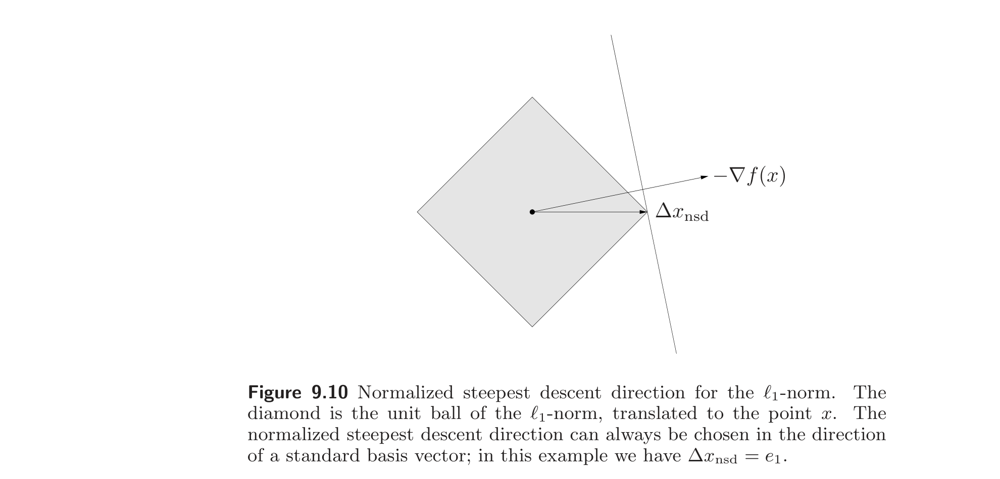
The steepest descent algorithm in the $\ell_1$-norm has a very natural interpretation: At each iteration we select a component of $\nabla f(x)$ with maximum absolute value, and then decrease or increase the corresponding component of $x$, according to the sign of $(\nabla f(x))_i$. The algorithm is sometimes called a coordinate-descent algorithm, since only one component of the variable $x$ is updated at each iteration. This can greatly simplify, or even trivialize, the line search.
$\ell_1$-范数下的最速下降算法有非常自然的解释：每次迭代选取 $\nabla f(x)$ 中绝对值最大的分量，然后根据 $(\nabla f(x))_i$ 的符号减小或增大 $x$ 的对应分量。该算法有时称为坐标下降算法（coordinate-descent algorithm），因为每次迭代只更新变量 $x$ 的一个分量。这可大大简化、甚至平凡化线搜索。
Example 9.2 Frobenius norm scaling. In §4.5.4 we encountered the unconstrained geometric program
$$ \begin{array}{ll} \text{minimize} & \sum_{i,j=1}^n M_{ij}^2 d_i^2/d_j^2, \end{array} $$
where $M \in \mathbb{R}^{n \times n}$ is given, and the variable is $d \in \mathbb{R}^n$. Using the change of variables $x_i = 2 \log d_i$ we can express this geometric program in convex form as
$$ \begin{array}{ll} \text{minimize} & f(x) = \log\left(\sum_{i,j=1}^n M_{ij}^2 e^{x_i - x_j}\right). \end{array} $$
例 9.2 Frobenius 范数缩放。 在 §4.5.4 中我们遇到无约束几何规划
$$ \begin{array}{ll} \text{minimize} & \sum_{i,j=1}^n M_{ij}^2 d_i^2/d_j^2, \end{array} $$
其中 $M \in \mathbb{R}^{n \times n}$ 给定，变量为 $d \in \mathbb{R}^n$。利用变量替换 $x_i = 2 \log d_i$，可将此几何规划写成凸形式：
$$ \begin{array}{ll} \text{minimize} & f(x) = \log\left(\sum_{i,j=1}^n M_{ij}^2 e^{x_i - x_j}\right). \end{array} $$
It is easy to minimize $f$ one component at a time. Keeping all components except the $k$th fixed, we can write $f(x) = \log(\alpha_k + \beta_k e^{-x_k} + \gamma_k e^{x_k})$, where
$$ \alpha_k = M_{kk}^2 + \sum_{i,j \ne k} M_{ij}^2 e^{x_i - x_j}, \qquad \beta_k = \sum_{i \ne k} M_{ik}^2 e^{x_i}, \qquad \gamma_k = \sum_{j \ne k} M_{kj}^2 e^{-x_j}. $$
The minimum of $f(x)$, as a function of $x_k$, is obtained for $x_k = \log(\beta_k/\gamma_k)/2$. So for this problem an exact line search can be carried out using a simple analytical formula.
The $\ell_1$-steepest descent algorithm with exact line search consists of repeating the following steps.
- Compute the gradient $$(\nabla f(x))_i = \frac{-\beta_i e^{-x_i} + \gamma_i e^{x_i}}{\alpha_i + \beta_i e^{-x_i} + \gamma_i e^{x_i}}, \quad i = 1, \ldots, n.$$
- Select a largest (in absolute value) component of $\nabla f(x)$: $|\nabla f(x)|_k = \|\nabla f(x)\|_\infty$.
- Minimize $f$ over the scalar variable $x_k$, by setting $x_k = \log(\beta_k/\gamma_k)/2$.
对 $f$ 一次一个分量地极小化很容易。固定除第 $k$ 个外的所有分量，可写 $f(x) = \log(\alpha_k + \beta_k e^{-x_k} + \gamma_k e^{x_k})$，其中
$$ \alpha_k = M_{kk}^2 + \sum_{i,j \ne k} M_{ij}^2 e^{x_i - x_j}, \qquad \beta_k = \sum_{i \ne k} M_{ik}^2 e^{x_i}, \qquad \gamma_k = \sum_{j \ne k} M_{kj}^2 e^{-x_j}. $$
$f(x)$ 作为 $x_k$ 的函数，其极小在 $x_k = \log(\beta_k/\gamma_k)/2$ 处取得。故对此问题，精确线搜索可用简单解析公式实现。
使用精确线搜索的 $\ell_1$-最速下降算法由重复以下步骤构成。
- 计算梯度 $$(\nabla f(x))_i = \frac{-\beta_i e^{-x_i} + \gamma_i e^{x_i}}{\alpha_i + \beta_i e^{-x_i} + \gamma_i e^{x_i}}, \quad i = 1, \ldots, n.$$
- 选取 $\nabla f(x)$ 的一个绝对值最大的分量：$|\nabla f(x)|_k = \|\nabla f(x)\|_\infty$。
- 对标量变量 $x_k$ 极小化 $f$，令 $x_k = \log(\beta_k/\gamma_k)/2$。
9.4.3 Convergence analysis
9.4.3 收敛性分析
In this section we extend the convergence analysis for the gradient method with backtracking line search to the steepest descent method for an arbitrary norm. We will use the fact that any norm can be bounded in terms of the Euclidean norm, so there exists constants $\gamma, \tilde{\gamma} \in (0, 1]$ such that
$$ \|x\| \ge \gamma\|x\|_2, \qquad \|x\|_* \ge \tilde{\gamma}\|x\|_2 $$
(see §A.1.4).
Again we assume $f$ is strongly convex on the initial sublevel set $S$. The upper bound $\nabla^2 f(x) \preceq MI$ implies an upper bound on the function $f(x + t\Delta x_{\mathrm{sd}})$ as a function of $t$:
$$ \begin{aligned} f(x + t\Delta x_{\mathrm{sd}}) &\le f(x) + t\nabla f(x)^T \Delta x_{\mathrm{sd}} + \frac{M\|\Delta x_{\mathrm{sd}}\|_2^2}{2} t^2 \\ &\le f(x) + t\nabla f(x)^T \Delta x_{\mathrm{sd}} + \frac{M\|\Delta x_{\mathrm{sd}}\|_2^2}{2\gamma^2} t^2 \\ &= f(x) - t\|\nabla f(x)\|_*^2 + \frac{M}{2\gamma^2} t^2 \|\nabla f(x)\|_*^2. \end{aligned} \tag{9.26} $$
The step size $\hat{t} = \gamma^2/M$ (which minimizes the quadratic upper bound (9.26)) satisfies the exit condition for the backtracking line search:
$$ f(x + \hat{t}\Delta x_{\mathrm{sd}}) \le f(x) - \frac{\gamma^2}{2M}\|\nabla f(x)\|_*^2 \le f(x) + \frac{\alpha\gamma^2}{M}\nabla f(x)^T \Delta x_{\mathrm{sd}} \tag{9.27} $$
本节将使用回溯线搜索的梯度法的收敛性分析推广到任意范数下的最速下降法。将利用任意范数可用欧氏范数界定的事实，即存在常数 $\gamma, \tilde{\gamma} \in (0, 1]$ 使得
$$ \|x\| \ge \gamma\|x\|_2, \qquad \|x\|_* \ge \tilde{\gamma}\|x\|_2 $$
（见 §A.1.4）。
仍假设 $f$ 在初始水平集 $S$ 上强凸。上界 $\nabla^2 f(x) \preceq MI$ 蕴含 $f(x + t\Delta x_{\mathrm{sd}})$ 作为 $t$ 的函数的上界：
$$ \begin{aligned} f(x + t\Delta x_{\mathrm{sd}}) &\le f(x) + t\nabla f(x)^T \Delta x_{\mathrm{sd}} + \frac{M\|\Delta x_{\mathrm{sd}}\|_2^2}{2} t^2 \\ &\le f(x) + t\nabla f(x)^T \Delta x_{\mathrm{sd}} + \frac{M\|\Delta x_{\mathrm{sd}}\|_2^2}{2\gamma^2} t^2 \\ &= f(x) - t\|\nabla f(x)\|_*^2 + \frac{M}{2\gamma^2} t^2 \|\nabla f(x)\|_*^2. \end{aligned} \tag{9.26} $$
步长 $\hat{t} = \gamma^2/M$（使二次上界 (9.26) 最小）满足回溯线搜索的退出条件：
$$ f(x + \hat{t}\Delta x_{\mathrm{sd}}) \le f(x) - \frac{\gamma^2}{2M}\|\nabla f(x)\|_*^2 \le f(x) + \frac{\alpha\gamma^2}{M}\nabla f(x)^T \Delta x_{\mathrm{sd}} \tag{9.27} $$
since $\alpha < 1/2$ and $\nabla f(x)^T \Delta x_{\mathrm{sd}} = -\|\nabla f(x)\|_*^2$. The line search therefore returns a step size $t \ge \min\{1, \beta\gamma^2/M\}$, and we have
$$ f(x^+) = f(x + t\Delta x_{\mathrm{sd}}) \le f(x) - \alpha\min\{1, \beta\gamma^2/M\}\|\nabla f(x)\|_*^2 \le f(x) - \alpha\tilde{\gamma}^2 \min\{1, \beta\gamma^2/M\}\|\nabla f(x)\|_2^2. $$
Subtracting $p^\star$ from both sides and using (9.9), we obtain
$$ f(x^+) - p^\star \le c(f(x) - p^\star), $$
where
$$ c = 1 - 2m\alpha\tilde{\gamma}^2 \min\{1, \beta\gamma^2/M\} < 1. $$
Therefore we have
$$ f(x^{(k)}) - p^\star \le c^k(f(x^{(0)}) - p^\star), $$
i.e., linear convergence exactly as in the gradient method.
因 $\alpha < 1/2$ 且 $\nabla f(x)^T \Delta x_{\mathrm{sd}} = -\|\nabla f(x)\|_*^2$。故线搜索返回的步长 $t \ge \min\{1, \beta\gamma^2/M\}$，且有
$$ f(x^+) = f(x + t\Delta x_{\mathrm{sd}}) \le f(x) - \alpha\min\{1, \beta\gamma^2/M\}\|\nabla f(x)\|_*^2 \le f(x) - \alpha\tilde{\gamma}^2 \min\{1, \beta\gamma^2/M\}\|\nabla f(x)\|_2^2. $$
两端减 $p^\star$ 并利用 (9.9)，得
$$ f(x^+) - p^\star \le c(f(x) - p^\star), $$
其中
$$ c = 1 - 2m\alpha\tilde{\gamma}^2 \min\{1, \beta\gamma^2/M\} < 1. $$
因此
$$ f(x^{(k)}) - p^\star \le c^k(f(x^{(0)}) - p^\star), $$
即与梯度法一样的线性收敛。
9.4.4 Discussion and examples
9.4.4 讨论与例子
Choice of norm for steepest descent
最速下降范数的选择
The choice of norm used to define the steepest descent direction can have a dramatic effect on the convergence rate. For simplicity, we consider the case of steepest descent with quadratic $P$-norm. In §9.4.1, we showed that the steepest descent method with quadratic $P$-norm is the same as the gradient method applied to the problem after the change of coordinates $\bar{x} = P^{1/2}x$. We know that the gradient method works well when the condition numbers of the sublevel sets (or the Hessian near the optimal point) are moderate, and works poorly when the condition numbers are large. It follows that when the sublevel sets, after the change of coordinates $\bar{x} = P^{1/2}x$, are moderately conditioned, the steepest descent method will work well.
用于定义最速下降方向的范数的选择对收敛速率可能有戏剧性的影响。为简单起见，考虑二次 $P$-范数下的最速下降。在 §9.4.1 中已证明，二次 $P$-范数下的最速下降法等同于对问题施加变量替换 $\bar{x} = P^{1/2}x$ 后应用梯度法。我们已知当水平集（或最优点附近的 Hessian）条件数适中时梯度法表现好，条件数大时表现差。因此，当水平集在变量替换 $\bar{x} = P^{1/2}x$ 后条件数适中时，最速下降法将表现好。
This observation provides a prescription for choosing $P$: It should be chosen so that the sublevel sets of $f$, transformed by $P^{-1/2}$, are well conditioned. For example if an approximation $\hat{H}$ of the Hessian at the optimal point $H(x^\star)$ were known, a very good choice of $P$ would be $P = \hat{H}$, since the Hessian of $\tilde{f}$ at the optimum is then
$$ \hat{H}^{-1/2}\nabla^2 f(x^\star) \hat{H}^{-1/2} \approx I, $$
and so is likely to have a low condition number.
This same idea can be described without a change of coordinates. Saying that a sublevel set has low condition number after the change of coordinates $\bar{x} = P^{1/2}x$ is the same as saying that the ellipsoid
$$ \mathcal{E} = \{x \mid x^T P x \le 1\} $$
approximates the shape of the sublevel set. (In other words, it gives a good approximation after appropriate scaling and translation.)
此观察为选择 $P$ 提供了处方：应选择 $P$ 使 $f$ 的水平集经 $P^{-1/2}$ 变换后条件数良好。例如，若已知最优点处 Hessian $H(x^\star)$ 的近似 $\hat{H}$，则 $P = \hat{H}$ 是一个很好的选择，因为 $\tilde{f}$ 在最优点处的 Hessian 为
$$ \hat{H}^{-1/2}\nabla^2 f(x^\star) \hat{H}^{-1/2} \approx I, $$
故很可能条件数低。
同一想法也可不通过变量替换描述。说一个水平集在变量替换 $\bar{x} = P^{1/2}x$ 后条件数低，等同于说椭球
$$ \mathcal{E} = \{x \mid x^T P x \le 1\} $$
近似水平集的形状。（换言之，经适当缩放与平移后给出好的近似。）
This dependence of the convergence rate on the choice of $P$ can be viewed from two sides. The optimist's viewpoint is that for any problem, there is always a choice of $P$ for which the steepest descent method works very well. The challenge, of course, is to find such a $P$. The pessimist's viewpoint is that for any problem, there are a huge number of choices of $P$ for which steepest descent works very poorly. In summary, we can say that the steepest descent method works well in cases where we can identify a matrix $P$ for which the transformed problem has moderate condition number.
收敛速率对 $P$ 选择的这种依赖可从两方面看。乐观者的观点是：对任何问题，总存在使最速下降法表现很好的 $P$ 选择。当然挑战在于找到这样的 $P$。悲观者的观点是：对任何问题，有大量使最速下降表现很差的 $P$ 选择。总之，可以说最速下降法在能找到使变换后问题条件数适中的矩阵 $P$ 的情形下表现好。
Examples
例子
In this section we illustrate some of these ideas using the nonquadratic problem in $\mathbb{R}^2$ with objective function (9.20). We apply the steepest descent method to the problem, using the two quadratic norms defined by
$$ P_1 = \begin{bmatrix} 2 & 0 \\ 0 & 8 \end{bmatrix}, \qquad P_2 = \begin{bmatrix} 8 & 0 \\ 0 & 2 \end{bmatrix}. $$
In both cases we use a backtracking line search with $\alpha = 0.1$ and $\beta = 0.7$. Figures 9.11 and 9.12 show the iterates for steepest descent with norm $\|\cdot\|_{P_1}$ and norm $\|\cdot\|_{P_2}$. Figure 9.13 shows the error versus iteration number for both norms.
本节用 (9.20) 目标函数的 $\mathbb{R}^2$ 非二次问题说明其中一些想法。对该问题应用最速下降法，使用两个二次范数：
$$ P_1 = \begin{bmatrix} 2 & 0 \\ 0 & 8 \end{bmatrix}, \qquad P_2 = \begin{bmatrix} 8 & 0 \\ 0 & 2 \end{bmatrix}. $$
两种情形都使用回溯线搜索，$\alpha = 0.1$、$\beta = 0.7$。图 9.11 和 9.12 分别显示范数 $\|\cdot\|_{P_1}$ 与 $\|\cdot\|_{P_2}$ 下最速下降的迭代点。图 9.13 显示两种范数下误差对迭代序数的图。
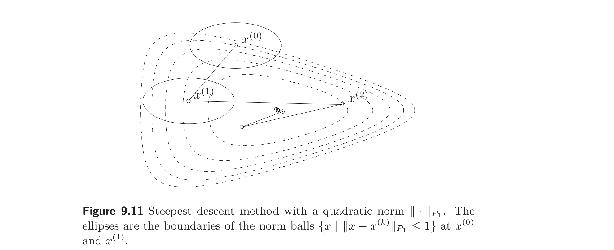
Figure 9.13 shows that the choice of norm strongly influences the convergence. With the norm $\|\cdot\|_{P_1}$, convergence is a bit more rapid than the gradient method, whereas with the norm $\|\cdot\|_{P_2}$, convergence is far slower.
图 9.13 表明范数的选择强烈影响收敛。范数 $\|\cdot\|_{P_1}$ 下收敛比梯度法略快，而范数 $\|\cdot\|_{P_2}$ 下收敛慢得多。
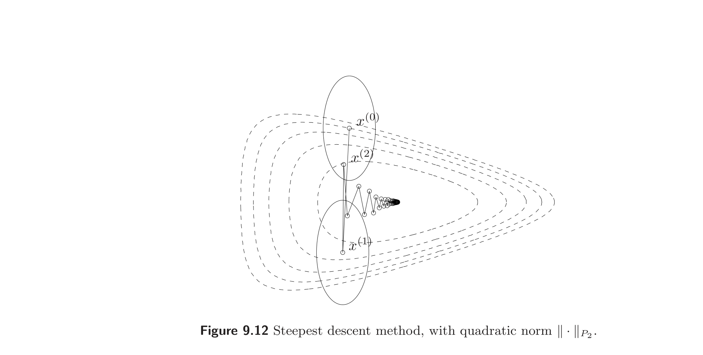
This can be explained by examining the problems after the changes of coordinates $\bar{x} = P_1^{1/2}x$ and $\bar{x} = P_2^{1/2}x$, respectively. Figures 9.14 and 9.15 show the problems in the transformed coordinates. The change of variables associated with $P_1$ yields sublevel sets with modest condition number, so convergence is fast. The change of variables associated with $P_2$ yields sublevel sets that are more poorly conditioned, which explains the slower convergence.
这可通过分别考察变量替换 $\bar{x} = P_1^{1/2}x$ 和 $\bar{x} = P_2^{1/2}x$ 后的问题来解释。图 9.14 和 9.15 显示变换坐标下的问题。与 $P_1$ 关联的变量替换产生条件数适中的水平集，故收敛快。与 $P_2$ 关联的变量替换产生条件数较差的水平集，这解释了较慢的收敛。
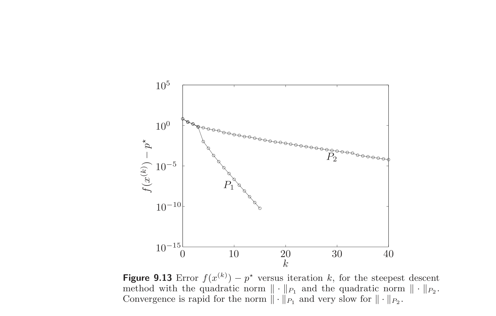
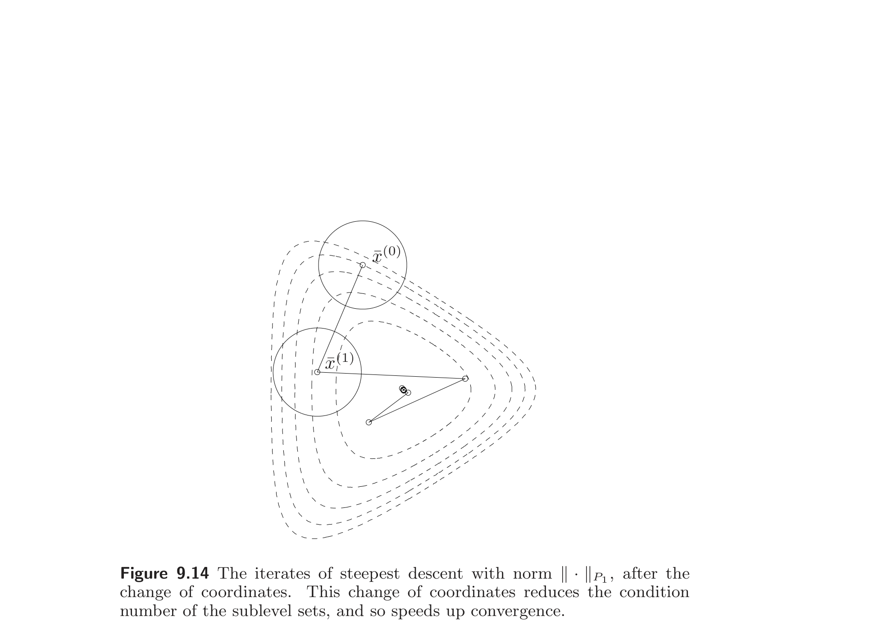
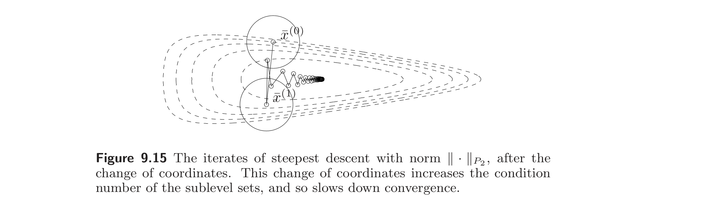
9.5 Newton's method
9.5 牛顿法
9.5.1 The Newton step
9.5.1 牛顿步
For $x \in \mathbf{dom}\, f$, the vector
$$ \Delta x_{\mathrm{nt}} = -\nabla^2 f(x)^{-1}\nabla f(x) $$
is called the Newton step (for $f$, at $x$). Positive definiteness of $\nabla^2 f(x)$ implies that
$$ \nabla f(x)^T \Delta x_{\mathrm{nt}} = -\nabla f(x)^T \nabla^2 f(x)^{-1}\nabla f(x) < 0 $$
unless $\nabla f(x) = 0$, so the Newton step is a descent direction (unless $x$ is optimal). The Newton step can be interpreted and motivated in several ways.
对 $x \in \mathbf{dom}\, f$，向量
$$ \Delta x_{\mathrm{nt}} = -\nabla^2 f(x)^{-1}\nabla f(x) $$
称为（$f$ 在 $x$ 处的）牛顿步（Newton step）。$\nabla^2 f(x)$ 的正定性蕴含
$$ \nabla f(x)^T \Delta x_{\mathrm{nt}} = -\nabla f(x)^T \nabla^2 f(x)^{-1}\nabla f(x) < 0 $$
除非 $\nabla f(x) = 0$，故牛顿步是下降方向（除非 $x$ 已最优）。牛顿步可从多方面解释和论证。
Minimizer of second-order approximation
二阶近似的极小点
The second-order Taylor approximation (or model) $\hat{f}$ of $f$ at $x$ is
$$ \hat{f}(x + v) = f(x) + \nabla f(x)^T v + \frac{1}{2}v^T \nabla^2 f(x) v, \tag{9.28} $$
which is a convex quadratic function of $v$, and is minimized when $v = \Delta x_{\mathrm{nt}}$. Thus, the Newton step $\Delta x_{\mathrm{nt}}$ is what should be added to the point $x$ to minimize the second-order approximation of $f$ at $x$. This is illustrated in figure 9.16.
This interpretation gives us some insight into the Newton step. If the function $f$ is quadratic, then $x + \Delta x_{\mathrm{nt}}$ is the exact minimizer of $f$. If the function $f$ is nearly quadratic, intuition suggests that $x + \Delta x_{\mathrm{nt}}$ should be a very good estimate of the minimizer of $f$, i.e., $x^\star$. Since $f$ is twice differentiable, the quadratic model of $f$ will be very accurate when $x$ is near $x^\star$. It follows that when $x$ is near $x^\star$, the point $x + \Delta x_{\mathrm{nt}}$ should be a very good estimate of $x^\star$. We will see that this intuition is correct.
$f$ 在 $x$ 处的二阶 Taylor 近似（或模型）$\hat{f}$ 为
$$ \hat{f}(x + v) = f(x) + \nabla f(x)^T v + \frac{1}{2}v^T \nabla^2 f(x) v, \tag{9.28} $$
它是 $v$ 的凸二次函数，在 $v = \Delta x_{\mathrm{nt}}$ 处取极小。故牛顿步 $\Delta x_{\mathrm{nt}}$ 是应加到点 $x$ 上以极小化 $f$ 在 $x$ 处二阶近似的量。如图 9.16 所示。
此解释给出对牛顿步的一些洞见。若 $f$ 是二次的，则 $x + \Delta x_{\mathrm{nt}}$ 是 $f$ 的精确极小点。若 $f$ 近似二次，直觉提示 $x + \Delta x_{\mathrm{nt}}$ 应是 $f$ 的极小点 $x^\star$ 的一个很好估计。由于 $f$ 二阶可微，$f$ 的二次模型在 $x$ 接近 $x^\star$ 时非常准确。因此当 $x$ 接近 $x^\star$ 时，$x + \Delta x_{\mathrm{nt}}$ 应是 $x^\star$ 的很好估计。我们将看到此直觉是正确的。
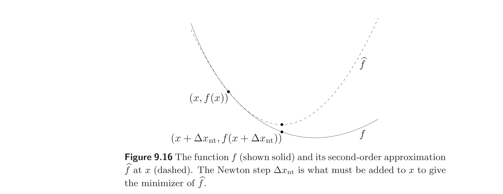
Steepest descent direction in Hessian norm
Hessian 范数下的最速下降方向
The Newton step is also the steepest descent direction at $x$, for the quadratic norm defined by the Hessian $\nabla^2 f(x)$, i.e.,
$$ \|u\|_{\nabla^2 f(x)} = (u^T \nabla^2 f(x) u)^{1/2}. $$
This gives another insight into why the Newton step should be a good search direction, and a very good search direction when $x$ is near $x^\star$.
Recall from our discussion above that steepest descent, with quadratic norm $\|\cdot\|_P$, converges very rapidly when the Hessian, after the associated change of coordinates, has small condition number. In particular, near $x^\star$, a very good choice is $P = \nabla^2 f(x^\star)$. When $x$ is near $x^\star$, we have $\nabla^2 f(x) \approx \nabla^2 f(x^\star)$, which explains why the Newton step is a very good choice of search direction. This is illustrated in figure 9.17.
牛顿步也是 $x$ 处关于由 Hessian $\nabla^2 f(x)$ 定义的二次范数的最速下降方向，即
$$ \|u\|_{\nabla^2 f(x)} = (u^T \nabla^2 f(x) u)^{1/2}. $$
这从另一个角度说明为何牛顿步应是好的搜索方向，且当 $x$ 接近 $x^\star$ 时是非常好的搜索方向。
回忆前面的讨论：二次范数 $\|\cdot\|_P$ 下的最速下降在 Hessian 经相应变量替换后条件数小时收敛很快。特别地，在 $x^\star$ 附近，$P = \nabla^2 f(x^\star)$ 是非常好的选择。当 $x$ 接近 $x^\star$ 时，$\nabla^2 f(x) \approx \nabla^2 f(x^\star)$，这解释了为何牛顿步是搜索方向的很好选择。如图 9.17 所示。
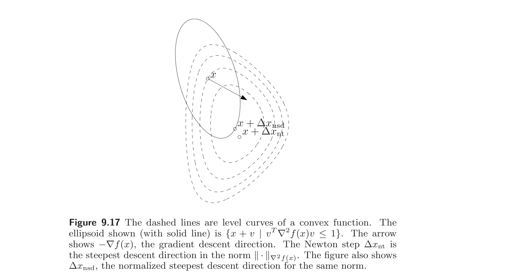
Solution of linearized optimality condition
线性化最优性条件的解
If we linearize the optimality condition $\nabla f(x^\star) = 0$ near $x$ we obtain
$$ \nabla f(x + v) \approx \nabla f(x) + \nabla^2 f(x) v = 0, $$
which is a linear equation in $v$, with solution $v = \Delta x_{\mathrm{nt}}$. So the Newton step $\Delta x_{\mathrm{nt}}$ is what must be added to $x$ so that the linearized optimality condition holds. Again, this suggests that when $x$ is near $x^\star$ (so the optimality conditions almost hold), the update $x + \Delta x_{\mathrm{nt}}$ should be a very good approximation of $x^\star$.
When $n = 1$, i.e., $f : \mathbb{R} \to \mathbb{R}$, this interpretation is particularly simple. The solution $x^\star$ of the minimization problem is characterized by $f'(x^\star) = 0$, i.e., it is the zero-crossing of the derivative $f'$, which is monotonically increasing since $f$ is convex. Given our current approximation $x$ of the solution, we form a first-order Taylor approximation of $f'$ at $x$. The zero-crossing of this affine approximation is then $x + \Delta x_{\mathrm{nt}}$. This interpretation is illustrated in figure 9.18.
若将最优性条件 $\nabla f(x^\star) = 0$ 在 $x$ 附近线性化，得
$$ \nabla f(x + v) \approx \nabla f(x) + \nabla^2 f(x) v = 0, $$
这是关于 $v$ 的线性方程，解为 $v = \Delta x_{\mathrm{nt}}$。故牛顿步 $\Delta x_{\mathrm{nt}}$ 是需加到 $x$ 上以使线性化最优性条件成立的量。这再次表明，当 $x$ 接近 $x^\star$（即最优性条件几乎成立）时，更新 $x + \Delta x_{\mathrm{nt}}$ 应是 $x^\star$ 的很好近似。
当 $n = 1$（即 $f : \mathbb{R} \to \mathbb{R}$）时，此解释特别简单。极小化问题的解 $x^\star$ 由 $f'(x^\star) = 0$ 刻画，即它是导数 $f'$ 的零点，而 $f'$ 因 $f$ 凸而单调递增。给定解的当前近似 $x$，在 $x$ 处对 $f'$ 作一阶 Taylor 近似。此仿射近似的零点即 $x + \Delta x_{\mathrm{nt}}$。此解释见图 9.18。
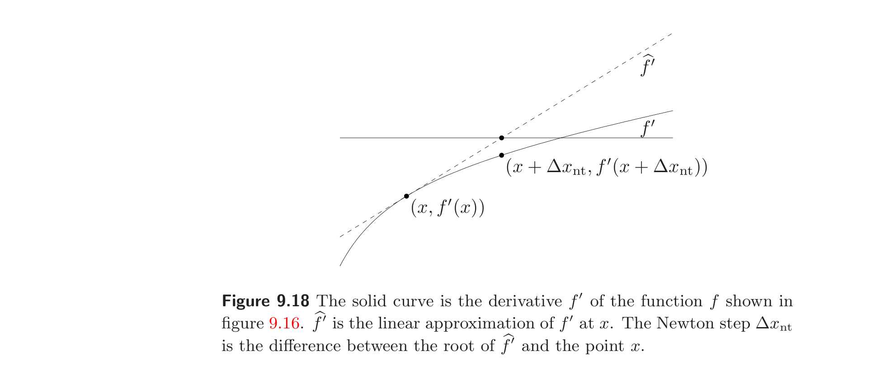
Affine invariance of the Newton step
牛顿步的仿射不变性
An important feature of the Newton step is that it is independent of linear (or affine) changes of coordinates. Suppose $T \in \mathbb{R}^{n \times n}$ is nonsingular, and define $\bar{f}(y) = f(Ty)$. Then we have
$$ \nabla \bar{f}(y) = T^T \nabla f(x), \qquad \nabla^2 \bar{f}(y) = T^T \nabla^2 f(x) T, $$
where $x = Ty$. The Newton step for $\bar{f}$ at $y$ is therefore
$$ \Delta y_{\mathrm{nt}} = -\left(T^T \nabla^2 f(x) T\right)^{-1} \left(T^T \nabla f(x)\right) = -T^{-1} \nabla^2 f(x)^{-1} \nabla f(x) = T^{-1} \Delta x_{\mathrm{nt}}, $$
where $\Delta x_{\mathrm{nt}}$ is the Newton step for $f$ at $x$. Hence the Newton steps of $f$ and $\bar{f}$ are related by the same linear transformation, and
$$ x + \Delta x_{\mathrm{nt}} = T(y + \Delta y_{\mathrm{nt}}). $$
牛顿步的一个重要特征是它不依赖于线性（或仿射）变量替换。设 $T \in \mathbb{R}^{n \times n}$ 非奇异，定义 $\bar{f}(y) = f(Ty)$。则
$$ \nabla \bar{f}(y) = T^T \nabla f(x), \qquad \nabla^2 \bar{f}(y) = T^T \nabla^2 f(x) T, $$
其中 $x = Ty$。$\bar{f}$ 在 $y$ 处的牛顿步为
$$ \Delta y_{\mathrm{nt}} = -\left(T^T \nabla^2 f(x) T\right)^{-1} \left(T^T \nabla f(x)\right) = -T^{-1} \nabla^2 f(x)^{-1} \nabla f(x) = T^{-1} \Delta x_{\mathrm{nt}}, $$
其中 $\Delta x_{\mathrm{nt}}$ 为 $f$ 在 $x$ 处的牛顿步。故 $f$ 与 $\bar{f}$ 的牛顿步由同一线性变换关联，且
$$ x + \Delta x_{\mathrm{nt}} = T(y + \Delta y_{\mathrm{nt}}). $$
The Newton decrement
牛顿递减量
The quantity
$$ \lambda(x) = \left(\nabla f(x)^T \nabla^2 f(x)^{-1}\nabla f(x)\right)^{1/2} $$
is called the Newton decrement at $x$. We will see that the Newton decrement plays an important role in the analysis of Newton's method, and is also useful as a stopping criterion.
We can relate the Newton decrement to the quantity $f(x) - \inf_y \hat{f}(y)$, where $\hat{f}$ is the second-order approximation of $f$ at $x$:
$$ f(x) - \inf_y \hat{f}(y) = f(x) - \hat{f}(x + \Delta x_{\mathrm{nt}}) = \frac{1}{2}\lambda(x)^2. $$
Thus, $\lambda^2/2$ is an estimate of $f(x) - p^\star$, based on the quadratic approximation of $f$ at $x$.
We can also express the Newton decrement as
$$ \lambda(x) = \left(\Delta x_{\mathrm{nt}}^T \nabla^2 f(x) \Delta x_{\mathrm{nt}}\right)^{1/2}. \tag{9.29} $$
This shows that $\lambda$ is the norm of the Newton step, in the quadratic norm defined by the Hessian, i.e., the norm $\|u\|_{\nabla^2 f(x)} = (u^T \nabla^2 f(x) u)^{1/2}$. The Newton decrement comes up in backtracking line search as well, since we have
$$ \nabla f(x)^T \Delta x_{\mathrm{nt}} = -\lambda(x)^2. \tag{9.30} $$
This is the constant used in a backtracking line search, and can be interpreted as the directional derivative of $f$ at $x$ in the direction of the Newton step:
$$ -\lambda(x)^2 = \nabla f(x)^T \Delta x_{\mathrm{nt}} = \left.\frac{d}{dt} f(x + \Delta x_{\mathrm{nt}} t)\right|_{t=0}. $$
Finally, we note that the Newton decrement is, like the Newton step, affine invariant. In other words, the Newton decrement of $\bar{f}(y) = f(Ty)$ at $y$, where $T$ is nonsingular, is the same as the Newton decrement of $f$ at $x = Ty$.
量
$$ \lambda(x) = \left(\nabla f(x)^T \nabla^2 f(x)^{-1}\nabla f(x)\right)^{1/2} $$
称为 $x$ 处的牛顿递减量（Newton decrement）。将看到牛顿递减量在牛顿法分析中起重要作用，也用作停止准则。
可将牛顿递减量与 $f(x) - \inf_y \hat{f}(y)$（$\hat{f}$ 为 $f$ 在 $x$ 处的二阶近似）联系起来：
$$ f(x) - \inf_y \hat{f}(y) = f(x) - \hat{f}(x + \Delta x_{\mathrm{nt}}) = \frac{1}{2}\lambda(x)^2. $$
故 $\lambda^2/2$ 是基于 $f$ 在 $x$ 处的二次近似的 $f(x) - p^\star$ 的估计。
牛顿递减量也可表示为
$$ \lambda(x) = \left(\Delta x_{\mathrm{nt}}^T \nabla^2 f(x) \Delta x_{\mathrm{nt}}\right)^{1/2}. \tag{9.29} $$
这表明 $\lambda$ 是牛顿步在 Hessian 定义的二次范数（即 $\|u\|_{\nabla^2 f(x)} = (u^T \nabla^2 f(x) u)^{1/2}$）下的范数。牛顿递减量也出现在回溯线搜索中，因为
$$ \nabla f(x)^T \Delta x_{\mathrm{nt}} = -\lambda(x)^2. \tag{9.30} $$
这是回溯线搜索中使用的常数，可解释为 $f$ 在 $x$ 处沿牛顿步方向的方向导数：
$$ -\lambda(x)^2 = \nabla f(x)^T \Delta x_{\mathrm{nt}} = \left.\frac{d}{dt} f(x + \Delta x_{\mathrm{nt}} t)\right|_{t=0}. $$
最后注意，牛顿递减量与牛顿步一样是仿射不变的。即 $\bar{f}(y) = f(Ty)$（$T$ 非奇异）在 $y$ 处的牛顿递减量与 $f$ 在 $x = Ty$ 处的牛顿递减量相同。
9.5.2 Newton's method
9.5.2 牛顿法
Newton's method, as outlined below, is sometimes called the damped Newton method or guarded Newton method, to distinguish it from the pure Newton method, which uses a fixed step size $t = 1$.
Algorithm 9.5 Newton's method.
given a starting point $x \in \mathbf{dom}\, f$, tolerance $\epsilon > 0$.
repeat
- Compute the Newton step and decrement.
$\Delta x_{\mathrm{nt}} := -\nabla^2 f(x)^{-1}\nabla f(x)$;
$\lambda^2 := \nabla f(x)^T \nabla^2 f(x)^{-1}\nabla f(x)$. - Stopping criterion. quit if $\lambda^2/2 \le \epsilon$.
- Line search. Choose step size $t$ by backtracking line search.
- Update. $x := x + t\Delta x_{\mathrm{nt}}$.
This is essentially the general descent method described in §9.2, using the Newton step as search direction. The only difference (which is very minor) is that the stopping criterion is checked after computing the search direction, rather than after the update.
下面所述的牛顿法有时称为阻尼牛顿法（damped Newton method）或保护牛顿法（guarded Newton method），以区别于使用固定步长 $t = 1$ 的纯牛顿法（pure Newton method）。
算法 9.5 牛顿法。
给定起始点 $x \in \mathbf{dom}\, f$，容差 $\epsilon > 0$。
重复
- 计算牛顿步与递减量。
$\Delta x_{\mathrm{nt}} := -\nabla^2 f(x)^{-1}\nabla f(x)$；
$\lambda^2 := \nabla f(x)^T \nabla^2 f(x)^{-1}\nabla f(x)$。 - 停止准则。若 $\lambda^2/2 \le \epsilon$ 则退出。
- 线搜索。通过回溯线搜索选择步长 $t$。
- 更新。$x := x + t\Delta x_{\mathrm{nt}}$。
这本质上是 §9.2 所述的一般下降方法，以牛顿步为搜索方向。唯一差别（很次要）是停止准则在计算搜索方向之后、而非更新之后检查。
9.5.3 Convergence analysis
9.5.3 收敛性分析
We assume, as before, that $f$ is twice continuously differentiable, and strongly convex with constant $m$, i.e., $\nabla^2 f(x) \succeq mI$ for $x \in S$. We have seen that this also implies that there exists an $M > 0$ such that $\nabla^2 f(x) \preceq MI$ for all $x \in S$.
In addition, we assume that the Hessian of $f$ is Lipschitz continuous on $S$ with constant $L$, i.e.,
$$ \|\nabla^2 f(x) - \nabla^2 f(y)\|_2 \le L\|x - y\|_2 \tag{9.31} $$
for all $x, y \in S$. The coefficient $L$, which can be interpreted as a bound on the third derivative of $f$, can be taken to be zero for a quadratic function. More generally $L$ measures how well $f$ can be approximated by a quadratic model, so we can expect the Lipschitz constant $L$ to play a critical role in the performance of Newton's method. Intuition suggests that Newton's method will work very well for a function whose quadratic model varies slowly (i.e., has small $L$).
如前，假设 $f$ 二阶连续可微且以常数 $m$ 强凸，即对 $x \in S$ 有 $\nabla^2 f(x) \succeq mI$。我们已见这也蕴含存在 $M > 0$ 使对所有 $x \in S$ 有 $\nabla^2 f(x) \preceq MI$。
此外，假设 $f$ 的 Hessian 在 $S$ 上 Lipschitz 连续，常数为 $L$，即
$$ \|\nabla^2 f(x) - \nabla^2 f(y)\|_2 \le L\|x - y\|_2 \tag{9.31} $$
对所有 $x, y \in S$ 成立。系数 $L$（可解释为 $f$ 的三阶导数的界）对二次函数可取为零。更一般地，$L$ 度量 $f$ 能被二次模型近似的程度，故可预期 Lipschitz 常数 $L$ 在牛顿法性能中起关键作用。直觉提示，对二次模型变化缓慢（即 $L$ 小）的函数，牛顿法表现很好。
Idea and outline of convergence proof
收敛证明的思路与框架
We first give the idea and outline of the convergence proof, and the main conclusion, and then the details of the proof. We will show there are numbers $\eta$ and $\gamma$ with $0 < \eta \le m^2/L$ and $\gamma > 0$ such that the following hold.
- If $\|\nabla f(x^{(k)})\|_2 \ge \eta$, then $$ f(x^{(k+1)}) - f(x^{(k)}) \le -\gamma. \tag{9.32} $$
- If $\|\nabla f(x^{(k)})\|_2 < \eta$, then the backtracking line search selects $t^{(k)} = 1$ and $$ \frac{L}{2m^2}\|\nabla f(x^{(k+1)})\|_2 \le \left(\frac{L}{2m^2}\|\nabla f(x^{(k)})\|_2\right)^2. \tag{9.33} $$
Let us analyze the implications of the second condition. Suppose that it is satisfied for iteration $k$, i.e., $\|\nabla f(x^{(k)})\|_2 < \eta$. Since $\eta \le m^2/L$, we have $\|\nabla f(x^{(k+1)})\|_2 < \eta$, i.e., the second condition is also satisfied at iteration $k + 1$. Continuing recursively, we conclude that once the second condition holds, it will hold for all future iterates, i.e., for all $l \ge k$, we have $\|\nabla f(x^{(l)})\|_2 < \eta$. Therefore for all $l \ge k$, the algorithm takes a full Newton step $t = 1$, and
$$ \frac{L}{2m^2}\|\nabla f(x^{(l+1)})\|_2 \le \left(\frac{L}{2m^2}\|\nabla f(x^{(l)})\|_2\right)^2. \tag{9.34} $$
Applying this inequality recursively, we find that for $l \ge k$,
$$ \frac{L}{2m^2}\|\nabla f(x^{(l)})\|_2 \le \left(\frac{L}{2m^2}\|\nabla f(x^{(k)})\|_2\right)^{2^{l-k}} \le \left(\frac{1}{2}\right)^{2^{l-k}}, $$
and hence
$$ f(x^{(l)}) - p^\star \le \frac{1}{2m}\|\nabla f(x^{(l)})\|_2^2 \le \frac{2m^3}{L^2}\left(\frac{1}{2}\right)^{2^{l-k+1}}. \tag{9.35} $$
先给出收敛证明的思路与框架及主要结论，再给出证明细节。将证明存在数 $\eta$ 和 $\gamma$，$0 < \eta \le m^2/L$ 且 $\gamma > 0$，使以下成立。
- 若 $\|\nabla f(x^{(k)})\|_2 \ge \eta$，则 $$ f(x^{(k+1)}) - f(x^{(k)}) \le -\gamma. \tag{9.32} $$
- 若 $\|\nabla f(x^{(k)})\|_2 < \eta$，则回溯线搜索选 $t^{(k)} = 1$ 且 $$ \frac{L}{2m^2}\|\nabla f(x^{(k+1)})\|_2 \le \left(\frac{L}{2m^2}\|\nabla f(x^{(k)})\|_2\right)^2. \tag{9.33} $$
分析第二个条件的含义。设它在第 $k$ 次迭代成立，即 $\|\nabla f(x^{(k)})\|_2 < \eta$。因 $\eta \le m^2/L$，有 $\|\nabla f(x^{(k+1)})\|_2 < \eta$，即第二个条件在第 $k+1$ 次迭代也成立。递推地，一旦第二个条件成立，它将对所有后续迭代成立，即对所有 $l \ge k$ 有 $\|\nabla f(x^{(l)})\|_2 < \eta$。故对所有 $l \ge k$，算法取完整牛顿步 $t = 1$，且
$$ \frac{L}{2m^2}\|\nabla f(x^{(l+1)})\|_2 \le \left(\frac{L}{2m^2}\|\nabla f(x^{(l)})\|_2\right)^2. \tag{9.34} $$
递推应用此不等式，对 $l \ge k$ 得
$$ \frac{L}{2m^2}\|\nabla f(x^{(l)})\|_2 \le \left(\frac{L}{2m^2}\|\nabla f(x^{(k)})\|_2\right)^{2^{l-k}} \le \left(\frac{1}{2}\right)^{2^{l-k}}, $$
进而
$$ f(x^{(l)}) - p^\star \le \frac{1}{2m}\|\nabla f(x^{(l)})\|_2^2 \le \frac{2m^3}{L^2}\left(\frac{1}{2}\right)^{2^{l-k+1}}. \tag{9.35} $$
This last inequality shows that convergence is extremely rapid once the second condition is satisfied. This phenomenon is called quadratic convergence. Roughly speaking, the inequality (9.35) means that, after a sufficiently large number of iterations, the number of correct digits doubles at each iteration.
The iterations in Newton's method naturally fall into two stages. The second stage, which occurs once the condition $\|\nabla f(x)\|_2 \le \eta$ holds, is called the quadratically convergent stage. We refer to the first stage as the damped Newton phase, because the algorithm can choose a step size $t < 1$. The quadratically convergent stage is also called the pure Newton phase, since in these iterations a step size $t = 1$ is always chosen.
最后一个不等式表明，一旦第二个条件满足，收敛极其迅速。此现象称为二次收敛（quadratic convergence）。粗略地说，不等式 (9.35) 意味着：经过足够多次迭代后，正确位数每次迭代翻倍。
牛顿法的迭代自然分为两个阶段。第二阶段（条件 $\|\nabla f(x)\|_2 \le \eta$ 一旦成立即开始）称为二次收敛阶段（quadratically convergent stage）。第一阶段称为阻尼牛顿阶段（damped Newton phase），因为算法可选步长 $t < 1$。二次收敛阶段也称为纯牛顿阶段（pure Newton phase），因这些迭代中总选步长 $t = 1$。
Now we can estimate the total complexity. First we derive an upper bound on the number of iterations in the damped Newton phase. Since $f$ decreases by at least $\gamma$ at each iteration, the number of damped Newton steps cannot exceed
$$ \frac{f(x^{(0)}) - p^\star}{\gamma}, $$
since if it did, $f$ would be less than $p^\star$, which is impossible.
We can bound the number of iterations in the quadratically convergent phase using the inequality (9.35). It implies that we must have $f(x) - p^\star \le \epsilon$ after no more than
$$ \log_2 \log_2(\epsilon_0/\epsilon) $$
iterations in the quadratically convergent phase, where $\epsilon_0 = 2m^3/L^2$.
Overall, then, the number of iterations until $f(x) - p^\star \le \epsilon$ is bounded above by
$$ \frac{f(x^{(0)}) - p^\star}{\gamma} + \log_2 \log_2(\epsilon_0/\epsilon). \tag{9.36} $$
The term $\log_2 \log_2(\epsilon_0/\epsilon)$, which bounds the number of iterations in the quadratically convergent phase, grows extremely slowly with required accuracy $\epsilon$, and can be considered a constant for practical purposes, say five or six. (Six iterations of the quadratically convergent stage gives an accuracy of about $\epsilon \approx 5 \cdot 10^{-20}\epsilon_0$.)
Not quite accurately, then, we can say that the number of Newton iterations required to minimize $f$ is bounded above by
$$ \frac{f(x^{(0)}) - p^\star}{\gamma} + 6. \tag{9.37} $$
A more precise statement is that (9.37) is a bound on the number of iterations to compute an extremely good approximation of the solution.
现在可估计总复杂度。先推导阻尼牛顿阶段迭代次数的上界。由于每次迭代 $f$ 至少下降 $\gamma$，阻尼牛顿步数不能超过
$$ \frac{f(x^{(0)}) - p^\star}{\gamma}, $$
否则 $f$ 将小于 $p^\star$，不可能。
用不等式 (9.35) 可界定二次收敛阶段的迭代次数。它蕴含至多经过
$$ \log_2 \log_2(\epsilon_0/\epsilon) $$
次二次收敛阶段迭代后必有 $f(x) - p^\star \le \epsilon$，其中 $\epsilon_0 = 2m^3/L^2$。
因此，达到 $f(x) - p^\star \le \epsilon$ 的总迭代次数上界为
$$ \frac{f(x^{(0)}) - p^\star}{\gamma} + \log_2 \log_2(\epsilon_0/\epsilon). \tag{9.36} $$
项 $\log_2 \log_2(\epsilon_0/\epsilon)$（界定二次收敛阶段迭代次数）随所需精度 $\epsilon$ 增长极慢，实用上可视为常数，约五六。（二次收敛阶段六次迭代给出约 $\epsilon \approx 5 \cdot 10^{-20}\epsilon_0$ 的精度。）
故可（不太精确地）说：极小化 $f$ 所需牛顿迭代次数上界为
$$ \frac{f(x^{(0)}) - p^\star}{\gamma} + 6. \tag{9.37} $$
更精确的说法是 (9.37) 是计算解的极好近似所需迭代次数的界。
Damped Newton phase
阻尼牛顿阶段
We now establish the inequality (9.32). Assume $\|\nabla f(x)\|_2 \ge \eta$. We first derive a lower bound on the step size selected by the line search. Strong convexity implies that $\nabla^2 f(x) \preceq MI$ on $S$, and therefore
$$ f(x + t\Delta x_{\mathrm{nt}}) \le f(x) + t\nabla f(x)^T \Delta x_{\mathrm{nt}} + \frac{M\|\Delta x_{\mathrm{nt}}\|_2^2}{2} t^2 \le f(x) - t\lambda(x)^2 + \frac{M}{2m}t^2\lambda(x)^2, $$
where we use (9.30) and
$$ \lambda(x)^2 = \Delta x_{\mathrm{nt}}^T \nabla^2 f(x) \Delta x_{\mathrm{nt}} \ge m\|\Delta x_{\mathrm{nt}}\|_2^2. $$
The step size $\hat{t} = m/M$ satisfies the exit condition of the line search, since
$$ f(x + \hat{t}\Delta x_{\mathrm{nt}}) \le f(x) - \frac{m}{2M}\lambda(x)^2 \le f(x) - \alpha\hat{t}\lambda(x)^2. $$
Therefore the line search returns a step size $t \ge \beta m/M$, resulting in a decrease of the objective function
$$ f(x^+) - f(x) \le -\alpha t\lambda(x)^2 \le -\alpha\beta \frac{m}{M}\lambda(x)^2 \le -\alpha\beta \frac{m}{M^2}\|\nabla f(x)\|_2^2 \le -\alpha\beta\eta^2 \frac{m}{M^2}, $$
where we use
$$ \lambda(x)^2 = \nabla f(x)^T \nabla^2 f(x)^{-1}\nabla f(x) \ge (1/M)\|\nabla f(x)\|_2^2. $$
Therefore, (9.32) is satisfied with
$$ \gamma = \alpha\beta\eta^2 \frac{m}{M^2}. \tag{9.38} $$
现在建立不等式 (9.32)。设 $\|\nabla f(x)\|_2 \ge \eta$。先推导线搜索所选步长的下界。强凸性蕴含 $S$ 上 $\nabla^2 f(x) \preceq MI$，故
$$ f(x + t\Delta x_{\mathrm{nt}}) \le f(x) + t\nabla f(x)^T \Delta x_{\mathrm{nt}} + \frac{M\|\Delta x_{\mathrm{nt}}\|_2^2}{2} t^2 \le f(x) - t\lambda(x)^2 + \frac{M}{2m}t^2\lambda(x)^2, $$
其中用到 (9.30) 和
$$ \lambda(x)^2 = \Delta x_{\mathrm{nt}}^T \nabla^2 f(x) \Delta x_{\mathrm{nt}} \ge m\|\Delta x_{\mathrm{nt}}\|_2^2. $$
步长 $\hat{t} = m/M$ 满足线搜索退出条件，因为
$$ f(x + \hat{t}\Delta x_{\mathrm{nt}}) \le f(x) - \frac{m}{2M}\lambda(x)^2 \le f(x) - \alpha\hat{t}\lambda(x)^2. $$
故线搜索返回步长 $t \ge \beta m/M$，导致目标函数下降
$$ f(x^+) - f(x) \le -\alpha t\lambda(x)^2 \le -\alpha\beta \frac{m}{M}\lambda(x)^2 \le -\alpha\beta \frac{m}{M^2}\|\nabla f(x)\|_2^2 \le -\alpha\beta\eta^2 \frac{m}{M^2}, $$
其中用到
$$ \lambda(x)^2 = \nabla f(x)^T \nabla^2 f(x)^{-1}\nabla f(x) \ge (1/M)\|\nabla f(x)\|_2^2. $$
故 (9.32) 满足，其中
$$ \gamma = \alpha\beta\eta^2 \frac{m}{M^2}. \tag{9.38} $$
Quadratically convergent phase
二次收敛阶段
We now establish the inequality (9.33). Assume $\|\nabla f(x)\|_2 < \eta$. We first show that the backtracking line search selects unit steps, provided
$$ \eta \le \frac{3(1 - 2\alpha)m^2}{L}. $$
By the Lipschitz condition (9.31), we have, for $t \ge 0$,
$$ \|\nabla^2 f(x + t\Delta x_{\mathrm{nt}}) - \nabla^2 f(x)\|_2 \le tL\|\Delta x_{\mathrm{nt}}\|_2, $$
and therefore
$$ \left|\Delta x_{\mathrm{nt}}^T \left(\nabla^2 f(x + t\Delta x_{\mathrm{nt}}) - \nabla^2 f(x)\right) \Delta x_{\mathrm{nt}}\right| \le tL\|\Delta x_{\mathrm{nt}}\|_2^3. $$
With $\tilde{f}(t) = f(x + t\Delta x_{\mathrm{nt}})$, we have $\tilde{f}''(t) = \Delta x_{\mathrm{nt}}^T \nabla^2 f(x + t\Delta x_{\mathrm{nt}}) \Delta x_{\mathrm{nt}}$, so the inequality above is
$$ |\tilde{f}''(t) - \tilde{f}''(0)| \le tL\|\Delta x_{\mathrm{nt}}\|_2^3. $$
We will use this inequality to determine an upper bound on $\tilde{f}(t)$. We start with
$$ \tilde{f}''(t) \le \tilde{f}''(0) + tL\|\Delta x_{\mathrm{nt}}\|_2^3 \le \lambda(x)^2 + t\frac{L}{m^{3/2}}\lambda(x)^3, $$
where we use $\tilde{f}''(0) = \lambda(x)^2$ and $\lambda(x)^2 \ge m\|\Delta x_{\mathrm{nt}}\|_2^2$. We integrate the inequality to get
$$ \tilde{f}'(t) \le \tilde{f}'(0) + t\lambda(x)^2 + t^2 \frac{L}{2m^{3/2}}\lambda(x)^3 = -\lambda(x)^2 + t\lambda(x)^2 + t^2 \frac{L}{2m^{3/2}}\lambda(x)^3, $$
using $\tilde{f}'(0) = -\lambda(x)^2$. We integrate once more to get
$$ \tilde{f}(t) \le \tilde{f}(0) - t\lambda(x)^2 + t^2 \frac{1}{2}\lambda(x)^2 + t^3 \frac{L}{6m^{3/2}}\lambda(x)^3. $$
Finally, we take $t = 1$ to obtain
$$ f(x + \Delta x_{\mathrm{nt}}) \le f(x) - \frac{1}{2}\lambda(x)^2 + \frac{L}{6m^{3/2}}\lambda(x)^3. \tag{9.39} $$
Now suppose $\|\nabla f(x)\|_2 \le \eta \le 3(1 - 2\alpha)m^2/L$. By strong convexity, we have $\lambda(x) \le 3(1 - 2\alpha)m^{3/2}/L$, and by (9.39) we have
$$ f(x + \Delta x_{\mathrm{nt}}) \le f(x) - \lambda(x)^2\left(\frac{1}{2} - \frac{L\lambda(x)}{6m^{3/2}}\right) \le f(x) - \alpha\lambda(x)^2 = f(x) + \alpha\nabla f(x)^T \Delta x_{\mathrm{nt}}, $$
which shows that the unit step $t = 1$ is accepted by the backtracking line search.
现建立不等式 (9.33)。设 $\|\nabla f(x)\|_2 < \eta$。首先证明当
$$ \eta \le \frac{3(1 - 2\alpha)m^2}{L} $$
时回溯线搜索选单位步长。由 Lipschitz 条件 (9.31)，对 $t \ge 0$ 有
$$ \|\nabla^2 f(x + t\Delta x_{\mathrm{nt}}) - \nabla^2 f(x)\|_2 \le tL\|\Delta x_{\mathrm{nt}}\|_2, $$
故
$$ \left|\Delta x_{\mathrm{nt}}^T \left(\nabla^2 f(x + t\Delta x_{\mathrm{nt}}) - \nabla^2 f(x)\right) \Delta x_{\mathrm{nt}}\right| \le tL\|\Delta x_{\mathrm{nt}}\|_2^3. $$
令 $\tilde{f}(t) = f(x + t\Delta x_{\mathrm{nt}})$，则 $\tilde{f}''(t) = \Delta x_{\mathrm{nt}}^T \nabla^2 f(x + t\Delta x_{\mathrm{nt}}) \Delta x_{\mathrm{nt}}$，故上不等式即
$$ |\tilde{f}''(t) - \tilde{f}''(0)| \le tL\|\Delta x_{\mathrm{nt}}\|_2^3. $$
用此不等式确定 $\tilde{f}(t)$ 的上界。从
$$ \tilde{f}''(t) \le \tilde{f}''(0) + tL\|\Delta x_{\mathrm{nt}}\|_2^3 \le \lambda(x)^2 + t\frac{L}{m^{3/2}}\lambda(x)^3 $$
开始，其中用到 $\tilde{f}''(0) = \lambda(x)^2$ 和 $\lambda(x)^2 \ge m\|\Delta x_{\mathrm{nt}}\|_2^2$。积分得
$$ \tilde{f}'(t) \le \tilde{f}'(0) + t\lambda(x)^2 + t^2 \frac{L}{2m^{3/2}}\lambda(x)^3 = -\lambda(x)^2 + t\lambda(x)^2 + t^2 \frac{L}{2m^{3/2}}\lambda(x)^3, $$
其中用到 $\tilde{f}'(0) = -\lambda(x)^2$。再积分一次得
$$ \tilde{f}(t) \le \tilde{f}(0) - t\lambda(x)^2 + t^2 \frac{1}{2}\lambda(x)^2 + t^3 \frac{L}{6m^{3/2}}\lambda(x)^3. $$
最后取 $t = 1$ 得
$$ f(x + \Delta x_{\mathrm{nt}}) \le f(x) - \frac{1}{2}\lambda(x)^2 + \frac{L}{6m^{3/2}}\lambda(x)^3. \tag{9.39} $$
现设 $\|\nabla f(x)\|_2 \le \eta \le 3(1 - 2\alpha)m^2/L$。由强凸性，$\lambda(x) \le 3(1 - 2\alpha)m^{3/2}/L$，由 (9.39) 有
$$ f(x + \Delta x_{\mathrm{nt}}) \le f(x) - \lambda(x)^2\left(\frac{1}{2} - \frac{L\lambda(x)}{6m^{3/2}}\right) \le f(x) - \alpha\lambda(x)^2 = f(x) + \alpha\nabla f(x)^T \Delta x_{\mathrm{nt}}, $$
这表明单位步 $t = 1$ 被回溯线搜索接受。
Let us now examine the rate of convergence. Applying the Lipschitz condition, we have
$$ \|\nabla f(x^+)\|_2 = \left\|\nabla f(x + \Delta x_{\mathrm{nt}}) - \nabla f(x) - \nabla^2 f(x)\Delta x_{\mathrm{nt}}\right\|_2 = \left\|\int_0^1 \left(\nabla^2 f(x + t\Delta x_{\mathrm{nt}}) - \nabla^2 f(x)\right) \Delta x_{\mathrm{nt}}\, dt\right\|_2 \le \frac{L}{2}\|\Delta x_{\mathrm{nt}}\|_2^2 = \frac{L}{2}\|\nabla^2 f(x)^{-1}\nabla f(x)\|_2^2 \le \frac{L}{2m^2}\|\nabla f(x)\|_2^2, $$
i.e., the inequality (9.33).
In conclusion, the algorithm selects unit steps and satisfies the condition (9.33) if $\|\nabla f(x^{(k)})\|_2 < \eta$, where
$$ \eta = \frac{\min\{1, 3(1 - 2\alpha)\}m^2}{L}. $$
Substituting this bound and (9.38) into (9.37), we find that the number of iterations is bounded above by
$$ 6 + \frac{M^2L^2/m^5}{\alpha\beta \min\{1, 9(1 - 2\alpha)^2\}}(f(x^{(0)}) - p^\star). \tag{9.40} $$
现考察收敛速率。应用 Lipschitz 条件，有
$$ \|\nabla f(x^+)\|_2 = \left\|\nabla f(x + \Delta x_{\mathrm{nt}}) - \nabla f(x) - \nabla^2 f(x)\Delta x_{\mathrm{nt}}\right\|_2 = \left\|\int_0^1 \left(\nabla^2 f(x + t\Delta x_{\mathrm{nt}}) - \nabla^2 f(x)\right) \Delta x_{\mathrm{nt}}\, dt\right\|_2 \le \frac{L}{2}\|\Delta x_{\mathrm{nt}}\|_2^2 = \frac{L}{2}\|\nabla^2 f(x)^{-1}\nabla f(x)\|_2^2 \le \frac{L}{2m^2}\|\nabla f(x)\|_2^2, $$
即不等式 (9.33)。
总之，当 $\|\nabla f(x^{(k)})\|_2 < \eta$（其中
$$ \eta = \frac{\min\{1, 3(1 - 2\alpha)\}m^2}{L} $$
）时算法选单位步长且满足条件 (9.33)。将此界与 (9.38) 代入 (9.37)，得迭代次数上界为
$$ 6 + \frac{M^2L^2/m^5}{\alpha\beta \min\{1, 9(1 - 2\alpha)^2\}}(f(x^{(0)}) - p^\star). \tag{9.40} $$
9.5.4 Examples
9.5.4 例子
Example in $\mathbb{R}^2$
$\mathbb{R}^2$ 中的例子
We first apply Newton's method with backtracking line search on the test function (9.20), with line search parameters $\alpha = 0.1$, $\beta = 0.7$. Figure 9.19 shows the Newton iterates, and also the ellipsoids
$$ \{x \mid \|x - x^{(k)}\|_{\nabla^2 f(x^{(k)})} \le 1\} $$
for the first two iterates $k = 0, 1$. The method works well because these ellipsoids give good approximations of the shape of the sublevel sets.
首先对测试函数 (9.20) 应用带回溯线搜索的牛顿法，线搜索参数 $\alpha = 0.1$、$\beta = 0.7$。图 9.19 显示牛顿法迭代点以及前两次迭代 $k = 0, 1$ 的椭球
$$ \{x \mid \|x - x^{(k)}\|_{\nabla^2 f(x^{(k)})} \le 1\} $$
该方法表现好，因为这些椭球很好地近似了水平集的形状。
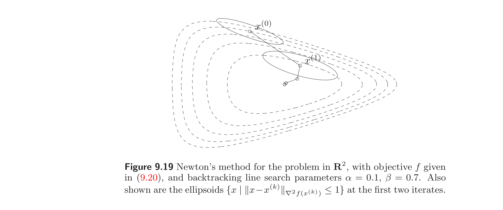
Figure 9.20 shows the error versus iteration number for the same example. This plot shows that convergence to a very high accuracy is achieved in only five iterations. Quadratic convergence is clearly apparent: The last step reduces the error from about $10^{-5}$ to $10^{-10}$.
图 9.20 显示同一例子的误差对迭代序数图。该图表明仅五次迭代即达到很高精度。二次收敛清晰可见：最后一步将误差从约 $10^{-5}$ 降到 $10^{-10}$。
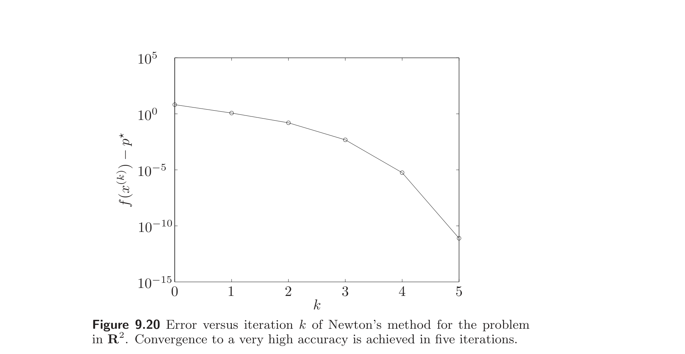
Example in $\mathbb{R}^{100}$
$\mathbb{R}^{100}$ 中的例子
Figure 9.21 shows the convergence of Newton's method with backtracking and exact line search for a problem in $\mathbb{R}^{100}$. The objective function has the form (9.21), with the same problem data and the same starting point as was used in figure 9.6. The plot for the backtracking line search shows that a very high accuracy is attained in eight iterations. Like the example in $\mathbb{R}^2$, quadratic convergence is clearly evident after about the third iteration.
The number of iterations in Newton's method with exact line search is only one smaller than with a backtracking line search. This is also typical. An exact line search usually gives a very small improvement in convergence of Newton's method. Figure 9.22 shows the step sizes for this example. After two damped steps, the steps taken by the backtracking line search are all full, i.e., $t = 1$.
图 9.21 显示 $\mathbb{R}^{100}$ 中问题牛顿法（带回溯与精确线搜索）的收敛。目标函数形如 (9.21)，问题数据与起始点与图 9.6 相同。回溯线搜索的图表明八次迭代即达很高精度。与 $\mathbb{R}^2$ 例子一样，约第三次迭代后二次收敛清晰可见。
精确线搜索的牛顿法迭代次数仅比回溯线搜索少一次。这也具有典型性。精确线搜索对牛顿法收敛的改善通常很小。图 9.22 显示此例的步长。两次阻尼步后，回溯线搜索所取步长均为完整步，即 $t = 1$。
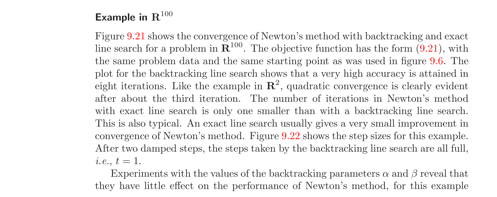
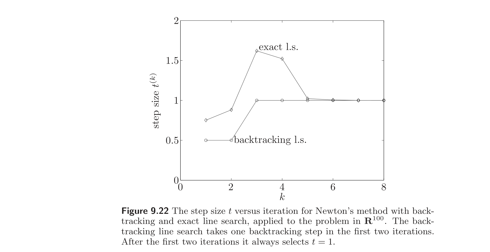
Experiments with the values of the backtracking parameters $\alpha$ and $\beta$ reveal that they have little effect on the performance of Newton's method, for this example (and others). With $\alpha$ fixed at 0.01, and values of $\beta$ varying between 0.2 and 1, the number of iterations required varies between 8 and 12. With $\beta$ fixed at 0.5, the number of iterations is 8, for all values of $\alpha$ between 0.005 and 0.5. For these reasons, most practical implementations use a backtracking line search with a small value of $\alpha$, such as 0.01, and a larger value of $\beta$, such as 0.5.
对回溯参数 $\alpha$ 与 $\beta$ 取值的实验表明，它们对此例（及其他例子）的牛顿法性能影响很小。固定 $\alpha = 0.01$、$\beta$ 在 0.2 到 1 之间变化时，所需迭代次数在 8 到 12 之间。固定 $\beta = 0.5$、$\alpha$ 在 0.005 到 0.5 之间变化时，迭代次数为 8。因此，多数实际实现使用小 $\alpha$（如 0.01）和较大 $\beta$（如 0.5）的回溯线搜索。
Example in $\mathbb{R}^{10000}$
$\mathbb{R}^{10000}$ 中的例子
In this last example we consider a larger problem, of the form
$$ \begin{array}{ll} \text{minimize} & -\sum_{i=1}^n \log(1 - x_i^2) - \sum_{i=1}^m \log(b_i - a_i^T x) \end{array} $$
with $m = 100000$ and $n = 10000$. The problem data $a_i$ are randomly generated sparse vectors. Figure 9.23 shows the convergence of Newton's method with backtracking line search, with parameters $\alpha = 0.01$, $\beta = 0.5$. The performance is very similar to the previous convergence plots. A linearly convergent initial phase of about 13 iterations is followed by a quadratically convergent phase, that achieves a very high accuracy in 4 or 5 more iterations.
最后一个例子考虑更大的问题，形式为
$$ \begin{array}{ll} \text{minimize} & -\sum_{i=1}^n \log(1 - x_i^2) - \sum_{i=1}^m \log(b_i - a_i^T x) \end{array} $$
$m = 100000$，$n = 10000$。问题数据 $a_i$ 为随机生成的稀疏向量。图 9.23 显示牛顿法（带回溯线搜索，参数 $\alpha = 0.01$、$\beta = 0.5$）的收敛。表现与前述收敛图非常相似。约 13 次迭代的线性收敛初始阶段之后是二次收敛阶段，再 4 或 5 次迭代即达很高精度。
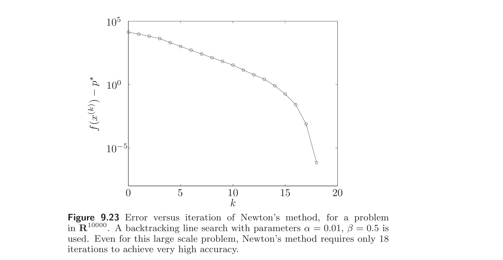
Affine invariance of Newton's method
牛顿法的仿射不变性
A very important feature of Newton's method is that it is independent of linear (or affine) changes of coordinates. Let $x^{(k)}$ be the $k$th iterate of Newton's method, applied to $f : \mathbb{R}^n \to \mathbb{R}$. Suppose $T \in \mathbb{R}^{n \times n}$ is nonsingular, and define $\bar{f}(y) = f(Ty)$. If we use Newton's method (with the same backtracking parameters) to minimize $\bar{f}$, starting from $y^{(0)} = T^{-1}x^{(0)}$, then we have
$$ Ty^{(k)} = x^{(k)} $$
for all $k$. In other words, Newton's method is the same: The iterates are related by the same change of coordinates. Even the stopping criterion is the same, since the Newton decrement for $\bar{f}$ at $y^{(k)}$ is the same as the Newton decrement for $f$ at $x^{(k)}$. This is in stark contrast to the gradient (or steepest descent) method, which is strongly affected by changes of coordinates.
牛顿法的一个非常重要的特征是它不依赖于线性（或仿射）变量替换。设 $x^{(k)}$ 为牛顿法应用于 $f : \mathbb{R}^n \to \mathbb{R}$ 的第 $k$ 次迭代。设 $T \in \mathbb{R}^{n \times n}$ 非奇异，定义 $\bar{f}(y) = f(Ty)$。若用牛顿法（相同回溯参数）极小化 $\bar{f}$，从 $y^{(0)} = T^{-1}x^{(0)}$ 出发，则对所有 $k$ 有
$$ Ty^{(k)} = x^{(k)}. $$
换言之，牛顿法是相同的：迭代点由相同变量替换关联。甚至停止准则也相同，因为 $\bar{f}$ 在 $y^{(k)}$ 处的牛顿递减量与 $f$ 在 $x^{(k)}$ 处的相同。这与梯度法（或最速下降法）形成鲜明对比，后者强烈受变量替换影响。
As an example, consider the family of problems given in (9.22), indexed by the parameter $\gamma$, which affects the condition number of the sublevel sets. We observed (in figures 9.7 and 9.8) that the gradient method slows to useless for values of $\gamma$ smaller than 0.05 or larger than 20. In contrast, Newton's method (with $\alpha = 0.01$, $\beta = 0.5$) solves this problem (in fact, to a far higher accuracy) in nine iterations, for all values of $\gamma$ between $10^{-10}$ and $10^{10}$.
In a real implementation, with finite precision arithmetic, Newton's method is not exactly independent of affine changes of coordinates, or the condition number of the sublevel sets. But we can say that condition numbers ranging up to very large values such as $10^{10}$ do not adversely affect a real implementation of Newton's method. For the gradient method, a far smaller range of condition numbers can be tolerated. While choice of coordinates (or condition number of sublevel sets) is a first-order issue for gradient and steepest descent methods, it is a second-order issue for Newton's method; its only effect is in the numerical linear algebra required to compute the Newton step.
作为例子，考虑 (9.22) 给出的以参数 $\gamma$ 为指标的问题族，$\gamma$ 影响水平集的条件数。我们观察到（图 9.7 和 9.8）当 $\gamma$ 小于 0.05 或大于 20 时梯度法慢到无用。相反，牛顿法（$\alpha = 0.01$、$\beta = 0.5$）对所有介于 $10^{-10}$ 与 $10^{10}$ 之间的 $\gamma$ 值，都在九次迭代内求解此问题（且精度远更高）。
在有限精度算术的实际实现中，牛顿法并非完全不依赖仿射变量替换或水平集条件数。但可以说，高达 $10^{10}$ 的条件数不会对牛顿法的实际实现产生不利影响。对梯度法，可容忍的条件数范围小得多。变量替换的选择（或水平集条件数）对梯度法与最速下降法是一阶问题，对牛顿法则是二阶问题；其唯一影响在于计算牛顿步所需的数值线性代数。
Summary
总结
Newton's method has several very strong advantages over gradient and steepest descent methods:
- Convergence of Newton's method is rapid in general, and quadratic near $x^\star$. Once the quadratic convergence phase is reached, at most six or so iterations are required to produce a solution of very high accuracy.
- Newton's method is affine invariant. It is insensitive to the choice of coordinates, or the condition number of the sublevel sets of the objective.
- Newton's method scales well with problem size. Its performance on problems in $\mathbb{R}^{10000}$ is similar to its performance on problems in $\mathbb{R}^{10}$, with only a modest increase in the number of steps required.
- The good performance of Newton's method is not dependent on the choice of algorithm parameters. In contrast, the choice of norm for steepest descent plays a critical role in its performance.
The main disadvantage of Newton's method is the cost of forming and storing the Hessian, and the cost of computing the Newton step, which requires solving a set of linear equations. We will see in §9.7 that in many cases it is possible to exploit problem structure to substantially reduce the cost of computing the Newton step.
Another alternative is provided by a family of algorithms for unconstrained optimization called quasi-Newton methods. These methods require less computational effort to form the search direction, but they share some of the strong advantages of Newton methods, such as rapid convergence near $x^\star$. Since quasi-Newton methods are described in many books, and tangential to our main theme, we will not consider them in this book.
牛顿法相比梯度法与最速下降法有几个很强的优势：
- 牛顿法一般收敛快，在 $x^\star$ 附近为二次收敛。一旦进入二次收敛阶段，至多约六次迭代即产生很高精度的解。
- 牛顿法仿射不变。它对坐标选择或目标函数水平集的条件数不敏感。
- 牛顿法对问题规模的可扩展性好。它在 $\mathbb{R}^{10000}$ 问题上的表现与 $\mathbb{R}^{10}$ 问题相似，所需步数仅适度增加。
- 牛顿法的好表现不依赖于算法参数的选择。相比之下，最速下降范数的选择对其性能起关键作用。
牛顿法的主要缺点是形成和存储 Hessian 的代价，以及计算牛顿步的代价（需解一组线性方程）。将在 §9.7 中看到，许多情形下可利用问题结构大幅降低计算牛顿步的代价。
另一选择是称为拟牛顿法（quasi-Newton methods）的一类无约束优化算法。这些方法形成搜索方向所需计算量较小，但具有牛顿法的一些强优势，如在 $x^\star$ 附近快速收敛。由于拟牛顿法在许多书中已有描述，且偏离本书主题，故不予讨论。
9.6 Self-concordance
9.6 自协调性
There are two major shortcomings of the classical convergence analysis of Newton's method given in §9.5.3. The first is a practical one: The resulting complexity estimates involve the three constants $m$, $M$, and $L$, which are almost never known in practice. As a result, the bound (9.40) on the number of Newton steps required is almost never known specifically, since it depends on three constants that are, in general, not known. Of course the convergence analysis and complexity estimate are still conceptually useful.
The second shortcoming is that while Newton's method is affinely invariant, the classical analysis of Newton's method is very much dependent on the coordinate system used. If we change coordinates the constants $m$, $M$, and $L$ all change. If for no reason other than aesthetic, we should seek an analysis of Newton's method that is, like the method itself, independent of affine changes of coordinates. In other words, we seek an alternative to the assumptions
$$ mI \preceq \nabla^2 f(x) \preceq MI, \qquad \|\nabla^2 f(x) - \nabla^2 f(y)\|_2 \le L\|x - y\|_2, $$
that is independent of affine changes of coordinates, and also allows us to analyze Newton's method.
§9.5.3 给出的牛顿法经典收敛性分析有两个主要不足。第一个是实际性的：所得复杂度估计涉及三个常数 $m$、$M$、$L$，它们在实践中几乎从不知晓。结果，(9.40) 关于所需牛顿步数的界几乎从不能具体确定，因为它依赖三个一般未知的常数。当然，收敛性分析与复杂度估计在概念上仍有用。
第二个不足是，虽然牛顿法仿射不变，牛顿法的经典分析却高度依赖于所用坐标系。改变坐标，$m$、$M$、$L$ 都变。即使仅出于美学考虑，也应寻求一种像方法本身一样不依赖仿射变量替换的牛顿法分析。换言之，寻求假设
$$ mI \preceq \nabla^2 f(x) \preceq MI, \qquad \|\nabla^2 f(x) - \nabla^2 f(y)\|_2 \le L\|x - y\|_2, $$
的替代，它不依赖仿射变量替换，且允许分析牛顿法。
A simple and elegant assumption that achieves this goal was discovered by Nesterov and Nemirovski, who gave the name self-concordance to their condition. Self-concordant functions are important for several reasons.
- They include many of the logarithmic barrier functions that play an important role in interior-point methods for solving convex optimization problems.
- The analysis of Newton's method for self-concordant functions does not depend on any unknown constants.
- Self-concordance is an affine-invariant property, i.e., if we apply a linear transformation of variables to a self-concordant function, we obtain a self-concordant function. Therefore the complexity estimate that we obtain for Newton's method applied to a self-concordant function is independent of affine changes of coordinates.
实现此目标的一个简单而优雅的假设由 Nesterov 和 Nemirovski 发现，他们将其条件命名为自协调（self-concordance）。自协调函数重要，原因有几：
- 它们包含许多对数障碍函数，后者在求解凸优化问题的内点法中起重要作用。
- 对自协调函数的牛顿法分析不依赖任何未知常数。
- 自协调性是仿射不变性质，即对自协调函数施加线性变量替换后仍得自协调函数。故对自协调函数的牛顿法所得复杂度估计不依赖仿射变量替换。
9.6.1 Definition and examples
9.6.1 定义与例子
Self-concordant functions on $\mathbb{R}$
$\mathbb{R}$ 上的自协调函数
We start by considering functions on $\mathbb{R}$. A convex function $f : \mathbb{R} \to \mathbb{R}$ is self-concordant if
$$ |f'''(x)| \le 2f''(x)^{3/2} \tag{9.41} $$
for all $x \in \mathbf{dom}\, f$. Since linear and (convex) quadratic functions have zero third derivative, they are evidently self-concordant. Some more interesting examples are given below.
先考虑 $\mathbb{R}$ 上的函数。凸函数 $f : \mathbb{R} \to \mathbb{R}$ 是自协调的，若
$$ |f'''(x)| \le 2f''(x)^{3/2} \tag{9.41} $$
对所有 $x \in \mathbf{dom}\, f$ 成立。由于线性和（凸）二次函数的三阶导为零，它们显然自协调。下面给出一些更有趣的例子。
Example 9.3 Logarithm and entropy.
- Negative logarithm. The function $f(x) = -\log x$ is self-concordant. Using $f''(x) = 1/x^2$, $f'''(x) = -2/x^3$, we find that $$ \frac{|f'''(x)|}{2f''(x)^{3/2}} = \frac{2/x^3}{2(1/x^2)^{3/2}} = 1, $$ so the defining inequality (9.41) holds with equality.
- Negative entropy plus negative logarithm. The function $f(x) = x\log x - \log x$ is self-concordant. To verify this, we use $f''(x) = (x+1)/x^2$, $f'''(x) = -(x+2)/x^3$ to obtain $$ \frac{|f'''(x)|}{2f''(x)^{3/2}} = \frac{x+2}{2(x+1)^{3/2}}. $$
例 9.3 对数与熵。
- 负对数。 函数 $f(x) = -\log x$ 自协调。由 $f''(x) = 1/x^2$、$f'''(x) = -2/x^3$，得 $$ \frac{|f'''(x)|}{2f''(x)^{3/2}} = \frac{2/x^3}{2(1/x^2)^{3/2}} = 1, $$ 故定义不等式 (9.41) 以等号成立。
- 负熵加负对数。 函数 $f(x) = x\log x - \log x$ 自协调。为验证，用 $f''(x) = (x+1)/x^2$、$f'''(x) = -(x+2)/x^3$ 得 $$ \frac{|f'''(x)|}{2f''(x)^{3/2}} = \frac{x+2}{2(x+1)^{3/2}}. $$
The function on the righthand side is maximized on $\mathbb{R}_+$ by $x = 0$, where its value is 1.
The negative entropy function by itself is not self-concordant; see exercise 11.13.
We should make two important remarks about the self-concordance definition (9.41). The first concerns the mysterious constant 2 that appears in the definition. In fact, this constant is chosen for convenience, in order to simplify the formulas later on; any other positive constant could be used instead. Suppose, for example, that the convex function $f : \mathbb{R} \to \mathbb{R}$ satisfies
$$ |f'''(x)| \le k f''(x)^{3/2} \tag{9.42} $$
where $k$ is some positive constant. Then the function $\tilde{f}(x) = (k^2/4)f(x)$ satisfies
$$ |\tilde{f}'''(x)| = (k^2/4)|f'''(x)| \le (k^3/4)f''(x)^{3/2} = (k^3/4)\left((4/k^2)\tilde{f}''(x)\right)^{3/2} = 2\tilde{f}''(x)^{3/2} $$
and therefore is self-concordant. This shows that a function that satisfies (9.42) for some positive $k$ can be scaled to satisfy the standard self-concordance inequality (9.41).
So what is important is that the third derivative of the function is bounded by some multiple of the 3/2-power of its second derivative. By appropriately scaling the function, we can change the multiple to the constant 2.
右端函数在 $\mathbb{R}_+$ 上于 $x = 0$ 处取最大值 1。
负熵函数本身不自协调；见习题 11.13。
关于自协调定义 (9.41) 应作两个重要说明。第一个涉及定义中出现的神秘常数 2。事实上，此常数是为方便而选，以简化后续公式；任何其他正常数都可用。例如，设凸函数 $f : \mathbb{R} \to \mathbb{R}$ 满足
$$ |f'''(x)| \le k f''(x)^{3/2} \tag{9.42} $$
其中 $k$ 为某正常数。则函数 $\tilde{f}(x) = (k^2/4)f(x)$ 满足
$$ |\tilde{f}'''(x)| = (k^2/4)|f'''(x)| \le (k^3/4)f''(x)^{3/2} = (k^3/4)\left((4/k^2)\tilde{f}''(x)\right)^{3/2} = 2\tilde{f}''(x)^{3/2} $$
故自协调。这表明满足 (9.42)（某正 $k$）的函数可经缩放满足标准自协调不等式 (9.41)。
故重要的是函数三阶导以其二阶导的 3/2 次幂的某倍数为界。适当缩放函数，可将倍数变为常数 2。
The second comment is a simple calculation that shows why self-concordance is so important: it is affine invariant. Suppose we define the function $\tilde{f}$ by $\tilde{f}(y) = f(ay + b)$, where $a \ne 0$. Then $\tilde{f}$ is self-concordant if and only if $f$ is. To see this, we substitute
$$ \tilde{f}''(y) = a^2 f''(x), \qquad \tilde{f}'''(y) = a^3 f'''(x), $$
where $x = ay + b$, into the self-concordance inequality for $\tilde{f}$, i.e., $|\tilde{f}'''(y)| \le 2\tilde{f}''(y)^{3/2}$, to obtain
$$ |a^3 f'''(x)| \le 2(a^2 f''(x))^{3/2}, $$
which (after dividing by $a^3$) is the self-concordance inequality for $f$. Roughly speaking, the self-concordance condition (9.41) is a way to limit the third derivative of a function, in a way that is independent of affine coordinate changes.
第二个说明是一个简单计算，表明为何自协调性如此重要：它是仿射不变的。设 $\tilde{f}(y) = f(ay + b)$（$a \ne 0$）。则 $\tilde{f}$ 自协调当且仅当 $f$ 自协调。为证之，将
$$ \tilde{f}''(y) = a^2 f''(x), \qquad \tilde{f}'''(y) = a^3 f'''(x), $$
（$x = ay + b$）代入 $\tilde{f}$ 的自协调不等式 $|\tilde{f}'''(y)| \le 2\tilde{f}''(y)^{3/2}$，得
$$ |a^3 f'''(x)| \le 2(a^2 f''(x))^{3/2}, $$
除以 $a^3$ 后即 $f$ 的自协调不等式。粗略地说，自协调条件 (9.41) 是以不依赖仿射坐标变换的方式限制函数三阶导的一种方式。
Self-concordant functions on $\mathbb{R}^n$
$\mathbb{R}^n$ 上的自协调函数
We now consider functions on $\mathbb{R}^n$ with $n > 1$. We say a function $f : \mathbb{R}^n \to \mathbb{R}$ is self-concordant if it is self-concordant along every line in its domain, i.e., if the function $\tilde{f}(t) = f(x + tv)$ is a self-concordant function of $t$ for all $x \in \mathbf{dom}\, f$ and for all $v$.
现考虑 $n > 1$ 时 $\mathbb{R}^n$ 上的函数。称函数 $f : \mathbb{R}^n \to \mathbb{R}$ 自协调，若它沿其定义域内的每条直线都自协调，即对所有 $x \in \mathbf{dom}\, f$ 和所有 $v$，函数 $\tilde{f}(t) = f(x + tv)$ 作为 $t$ 的函数自协调。
9.6.2 Self-concordant calculus
9.6.2 自协调运算
Scaling and sum
缩放与求和
Self-concordance is preserved by scaling by a factor exceeding one: If $f$ is self-concordant and $a \ge 1$, then $af$ is self-concordant. Self-concordance is also preserved by addition: If $f_1, f_2$ are self-concordant, then $f_1 + f_2$ is self-concordant. To show this, it is sufficient to consider functions $f_1, f_2 : \mathbb{R} \to \mathbb{R}$. We have
$$ |f_1'''(x) + f_2'''(x)| \le |f_1'''(x)| + |f_2'''(x)| \le 2(f_1''(x)^{3/2} + f_2''(x)^{3/2}) \le 2(f_1''(x) + f_2''(x))^{3/2}. $$
In the last step we use the inequality
$$ (u^{3/2} + v^{3/2})^{2/3} \le u + v, $$
which holds for $u, v \ge 0$.
自协调性在以不小于 1 的因子缩放下保持：若 $f$ 自协调且 $a \ge 1$，则 $af$ 自协调。自协调性也在加法下保持：若 $f_1, f_2$ 自协调，则 $f_1 + f_2$ 自协调。为证之，只需考虑 $f_1, f_2 : \mathbb{R} \to \mathbb{R}$。有
$$ |f_1'''(x) + f_2'''(x)| \le |f_1'''(x)| + |f_2'''(x)| \le 2(f_1''(x)^{3/2} + f_2''(x)^{3/2}) \le 2(f_1''(x) + f_2''(x))^{3/2}. $$
最后一步用不等式
$$ (u^{3/2} + v^{3/2})^{2/3} \le u + v, $$
（对 $u, v \ge 0$ 成立）。
Composition with affine function
与仿射函数的复合
If $f : \mathbb{R}^n \to \mathbb{R}$ is self-concordant, and $A \in \mathbb{R}^{n \times m}$, $b \in \mathbb{R}^n$, then $f(Ax + b)$ is self-concordant.
若 $f : \mathbb{R}^n \to \mathbb{R}$ 自协调，且 $A \in \mathbb{R}^{n \times m}$、$b \in \mathbb{R}^n$，则 $f(Ax + b)$ 自协调。
Example 9.4 Log barrier for linear inequalities. The function
$$ f(x) = -\sum_{i=1}^m \log(b_i - a_i^T x), $$
with $\mathbf{dom}\, f = \{x \mid a_i^T x < b_i,\; i = 1, \ldots, m\}$, is self-concordant. Each term $-\log(b_i - a_i^T x)$ is the composition of $-\log y$ with the affine transformation $y = b_i - a_i^T x$, and hence self-concordant. Therefore the sum is also self-concordant.
例 9.4 线性不等式的对数障碍。 函数
$$ f(x) = -\sum_{i=1}^m \log(b_i - a_i^T x), $$
（$\mathbf{dom}\, f = \{x \mid a_i^T x < b_i,\; i = 1, \ldots, m\}$）自协调。每一项 $-\log(b_i - a_i^T x)$ 是 $-\log y$ 与仿射变换 $y = b_i - a_i^T x$ 的复合，故自协调。因此和也自协调。
Example 9.5 Log-determinant. The function $f(X) = -\log\det X$ is self-concordant on $\mathbf{dom}\, f = \mathbb{S}^n_{++}$. To show this, we consider the function $\tilde{f}(t) = f(X + tV)$, where $X \succ 0$ and $V \in \mathbb{S}^n$. It can be expressed as
$$ \tilde{f}(t) = -\log\det(X^{1/2}(I + tX^{-1/2}VX^{-1/2})X^{1/2}) = -\log\det X - \log\det(I + tX^{-1/2}VX^{-1/2}) = -\log\det X - \sum_{i=1}^n \log(1 + t\lambda_i) $$
where $\lambda_i$ are the eigenvalues of $X^{-1/2}VX^{-1/2}$. Each term $-\log(1 + t\lambda_i)$ is a self-concordant function of $t$, so the sum, $\tilde{f}$, is self-concordant. It follows that $f$ is self-concordant.
例 9.5 对数行列式。 函数 $f(X) = -\log\det X$ 在 $\mathbf{dom}\, f = \mathbb{S}^n_{++}$ 上自协调。为证之，考虑函数 $\tilde{f}(t) = f(X + tV)$（$X \succ 0$，$V \in \mathbb{S}^n$）。它可表示为
$$ \tilde{f}(t) = -\log\det(X^{1/2}(I + tX^{-1/2}VX^{-1/2})X^{1/2}) = -\log\det X - \log\det(I + tX^{-1/2}VX^{-1/2}) = -\log\det X - \sum_{i=1}^n \log(1 + t\lambda_i) $$
其中 $\lambda_i$ 为 $X^{-1/2}VX^{-1/2}$ 的特征值。每一项 $-\log(1 + t\lambda_i)$ 作为 $t$ 的函数自协调，故和 $\tilde{f}$ 自协调。因此 $f$ 自协调。
Example 9.6 Log of concave quadratic. The function
$$ f(x) = -\log(x^T P x + q^T x + r), $$
where $P \in -\mathbb{S}^n_+$, is self-concordant on
$$ \mathbf{dom}\, f = \{x \mid x^T P x + q^T x + r > 0\}. $$
To show this, it suffices to consider the case $n = 1$ (since by restricting $f$ to a line, the general case reduces to the $n = 1$ case). We can then express $f$ as
$$ f(x) = -\log(px^2 + qx + r) = -\log(-p(x - a)(b - x)) $$
where $\mathbf{dom}\, f = (a, b)$ (i.e., $a$ and $b$ are the roots of $px^2 + qx + r$). Using this expression we have
$$ f(x) = -\log(-p) - \log(x - a) - \log(b - x), $$
which establishes self-concordance.
例 9.6 凹二次式的对数。 函数
$$ f(x) = -\log(x^T P x + q^T x + r), $$
其中 $P \in -\mathbb{S}^n_+$，在
$$ \mathbf{dom}\, f = \{x \mid x^T P x + q^T x + r > 0\} $$
上自协调。为证之，只需考虑 $n = 1$ 的情形（因将 $f$ 限制到直线上，一般情形归约为 $n = 1$ 情形）。于是可写
$$ f(x) = -\log(px^2 + qx + r) = -\log(-p(x - a)(b - x)) $$
其中 $\mathbf{dom}\, f = (a, b)$（即 $a$、$b$ 为 $px^2 + qx + r$ 的根）。用此表达有
$$ f(x) = -\log(-p) - \log(x - a) - \log(b - x), $$
这建立了自协调性。
Composition with logarithm
与对数的复合
Let $g : \mathbb{R} \to \mathbb{R}$ be a convex function with $\mathbf{dom}\, g = \mathbb{R}_{++}$, and
$$ |g'''(x)| \le \frac{3g''(x)}{x} \tag{9.43} $$
for all $x$. Then
$$ f(x) = -\log(-g(x)) - \log x $$
is self-concordant on $\{x \mid x > 0,\; g(x) < 0\}$. (For a proof, see exercise 9.14.)
The condition (9.43) is homogeneous and preserved under addition. It is satisfied by all (convex) quadratic functions, i.e., functions of the form $ax^2 + bx + c$, where $a \ge 0$. Therefore if (9.43) holds for a function $g$, then it holds for the function $g(x) + ax^2 + bx + c$, where $a \ge 0$.
设 $g : \mathbb{R} \to \mathbb{R}$ 为凸函数，$\mathbf{dom}\, g = \mathbb{R}_{++}$，且
$$ |g'''(x)| \le \frac{3g''(x)}{x} \tag{9.43} $$
对所有 $x$ 成立。则
$$ f(x) = -\log(-g(x)) - \log x $$
在 $\{x \mid x > 0,\; g(x) < 0\}$ 上自协调。（证明见习题 9.14。）
条件 (9.43) 齐次且在加法下保持。所有（凸）二次函数（即形如 $ax^2 + bx + c$（$a \ge 0$）的函数）都满足它。故若 (9.43) 对某函数 $g$ 成立，则对 $g(x) + ax^2 + bx + c$（$a \ge 0$）也成立。
Example 9.7 The following functions $g$ satisfy the condition (9.43).
- $g(x) = -x^p$ for $0 < p \le 1$.
- $g(x) = -\log x$.
- $g(x) = x\log x$.
- $g(x) = x^p$ for $-1 \le p \le 0$.
- $g(x) = (ax + b)^2/x$.
It follows that in each case, the function $f(x) = -\log(-g(x)) - \log x$ is self-concordant. More generally, the function $f(x) = -\log(-g(x) - ax^2 - bx - c) - \log x$ is self-concordant on its domain, $\{x \mid x > 0,\; g(x) + ax^2 + bx + c < 0\}$, provided $a \ge 0$.
例 9.7 下列函数 $g$ 满足条件 (9.43)：
- $g(x) = -x^p$（$0 < p \le 1$）。
- $g(x) = -\log x$。
- $g(x) = x\log x$。
- $g(x) = x^p$（$-1 \le p \le 0$）。
- $g(x) = (ax + b)^2/x$。
故每种情形下 $f(x) = -\log(-g(x)) - \log x$ 自协调。更一般地，$f(x) = -\log(-g(x) - ax^2 - bx - c) - \log x$ 在其定义域 $\{x \mid x > 0,\; g(x) + ax^2 + bx + c < 0\}$ 上自协调，只要 $a \ge 0$。
Example 9.8 The composition with logarithm rule allows us to show self-concordance of the following functions.
- $f(x, y) = -\log(y^2 - x^T x)$ on $\{(x, y) \mid \|x\|_2 < y\}$.
- $f(x, y) = -2\log y - \log(y^2/p - x^2)$, with $p \ge 1$, on $\{(x, y) \in \mathbb{R}^2 \mid |x|^p < y\}$.
- $f(x, y) = -\log y - \log(\log y - x)$ on $\{(x, y) \mid e^x < y\}$.
We leave the details as an exercise (exercise 9.15).
例 9.8 与对数复合的规则可用于证明以下函数的自协调性：
- $f(x, y) = -\log(y^2 - x^T x)$，在 $\{(x, y) \mid \|x\|_2 < y\}$ 上。
- $f(x, y) = -2\log y - \log(y^2/p - x^2)$（$p \ge 1$），在 $\{(x, y) \in \mathbb{R}^2 \mid |x|^p < y\}$ 上。
- $f(x, y) = -\log y - \log(\log y - x)$，在 $\{(x, y) \mid e^x < y\}$ 上。
细节留作习题（习题 9.15）。
9.6.3 Properties of self-concordant functions
9.6.3 自协调函数的性质
In §9.1.2 we used strong convexity to derive bounds on the suboptimality of a point $x$ in terms of the norm of the gradient at $x$. For strictly convex self-concordant functions, we can obtain similar bounds in terms of the Newton decrement
$$ \lambda(x) = \left(\nabla f(x)^T \nabla^2 f(x)^{-1}\nabla f(x)\right)^{1/2}. $$
(It can be shown that the Hessian of a strictly convex self-concordant function is positive definite everywhere; see exercise 9.17.) Unlike the bounds based on the norm of the gradient, the bounds based on the Newton decrement are not affected by an affine change of coordinates.
For future reference we note that the Newton decrement can also be expressed as
$$ \lambda(x) = \sup_{v \ne 0} \frac{-v^T \nabla f(x)}{(v^T \nabla^2 f(x)v)^{1/2}} $$
(see exercise 9.9). In other words, we have
$$ \frac{-v^T \nabla f(x)}{(v^T \nabla^2 f(x)v)^{1/2}} \le \lambda(x) \tag{9.44} $$
for any nonzero $v$, with equality for $v = \Delta x_{\mathrm{nt}}$.
在 §9.1.2 中，我们用强凸性导出了点 $x$ 次优性关于 $x$ 处梯度范数的界。对严格凸的自协调函数，可用牛顿递减量
$$ \lambda(x) = \left(\nabla f(x)^T \nabla^2 f(x)^{-1}\nabla f(x)\right)^{1/2} $$
得到类似的界。（可证严格凸自协调函数的 Hessian 处处正定；见习题 9.17。）与基于梯度范数的界不同，基于牛顿递减量的界不受仿射变量替换影响。
为后续引用，注意牛顿递减量也可表示为
$$ \lambda(x) = \sup_{v \ne 0} \frac{-v^T \nabla f(x)}{(v^T \nabla^2 f(x)v)^{1/2}} $$
（见习题 9.9）。换言之，对任意非零 $v$ 有
$$ \frac{-v^T \nabla f(x)}{(v^T \nabla^2 f(x)v)^{1/2}} \le \lambda(x) \tag{9.44} $$
当 $v = \Delta x_{\mathrm{nt}}$ 时取等。
Upper and lower bounds on second derivatives
二阶导数的上下界
Suppose $f : \mathbb{R} \to \mathbb{R}$ is a strictly convex self-concordant function. We can write the self-concordance inequality (9.41) as
$$ \left|\frac{d}{dt} f''(t)^{-1/2}\right| \le 1 \tag{9.45} $$
for all $t \in \mathbf{dom}\, f$ (see exercise 9.16). Assuming $t \ge 0$ and the interval between 0 and $t$ is in $\mathbf{dom}\, f$, we can integrate (9.45) between 0 and $t$ to obtain
$$ -t \le \int_0^t \frac{d}{d\tau} f''(\tau)^{-1/2}\, d\tau \le t, $$
i.e., $-t \le f''(t)^{-1/2} - f''(0)^{-1/2} \le t$. From this we obtain lower and upper bounds on $f''(t)$:
$$ \frac{f''(0)}{(1 + tf''(0)^{1/2})^2} \le f''(t) \le \frac{f''(0)}{(1 - tf''(0)^{1/2})^2}. \tag{9.46} $$
The lower bound is valid for all nonnegative $t \in \mathbf{dom}\, f$; the upper bound is valid if $t \in \mathbf{dom}\, f$ and $0 \le t < f''(0)^{-1/2}$.
设 $f : \mathbb{R} \to \mathbb{R}$ 为严格凸自协调函数。自协调不等式 (9.41) 可写为
$$ \left|\frac{d}{dt} f''(t)^{-1/2}\right| \le 1 \tag{9.45} $$
对所有 $t \in \mathbf{dom}\, f$ 成立（见习题 9.16）。设 $t \ge 0$ 且 0 与 $t$ 之间的区间在 $\mathbf{dom}\, f$ 中，在 0 与 $t$ 之间积分 (9.45) 得
$$ -t \le \int_0^t \frac{d}{d\tau} f''(\tau)^{-1/2}\, d\tau \le t, $$
即 $-t \le f''(t)^{-1/2} - f''(0)^{-1/2} \le t$。由此得 $f''(t)$ 的上下界：
$$ \frac{f''(0)}{(1 + tf''(0)^{1/2})^2} \le f''(t) \le \frac{f''(0)}{(1 - tf''(0)^{1/2})^2}. \tag{9.46} $$
下界对所有非负 $t \in \mathbf{dom}\, f$ 有效；上界在 $t \in \mathbf{dom}\, f$ 且 $0 \le t < f''(0)^{-1/2}$ 时有效。
Bound on suboptimality
次优性的界
Let $f : \mathbb{R}^n \to \mathbb{R}$ be a strictly convex self-concordant function, and let $v$ be a descent direction (i.e., any direction satisfying $v^T \nabla f(x) < 0$, not necessarily the Newton direction). Define $\tilde{f} : \mathbb{R} \to \mathbb{R}$ as $\tilde{f}(t) = f(x + tv)$. By definition, the function $\tilde{f}$ is self-concordant.
Integrating the lower bound in (9.46) yields a lower bound on $\tilde{f}'(t)$:
$$ \tilde{f}'(t) \ge \tilde{f}'(0) + \tilde{f}''(0)^{1/2} - \frac{\tilde{f}''(0)^{1/2}}{1 + t\tilde{f}''(0)^{1/2}}. \tag{9.47} $$
Integrating again yields a lower bound on $\tilde{f}(t)$:
$$ \tilde{f}(t) \ge \tilde{f}(0) + t\tilde{f}'(0) + t\tilde{f}''(0)^{1/2} - \log(1 + t\tilde{f}''(0)^{1/2}). \tag{9.48} $$
The righthand side reaches its minimum at
$$ \bar{t} = \frac{-\tilde{f}'(0)}{\tilde{f}''(0) + \tilde{f}''(0)^{1/2}\tilde{f}'(0)}, $$
and evaluating at $\bar{t}$ provides a lower bound on $\tilde{f}$:
$$ \inf_{t \ge 0}\tilde{f}(t) \ge \tilde{f}(0) + \bar{t}\tilde{f}'(0) + \bar{t}\tilde{f}''(0)^{1/2} - \log(1 + \bar{t}\tilde{f}''(0)^{1/2}) = \tilde{f}(0) - \tilde{f}'(0)\tilde{f}''(0)^{-1/2} + \log(1 + \tilde{f}'(0)\tilde{f}''(0)^{-1/2}). $$
The inequality (9.44) can be expressed as
$$ \lambda(x) \ge -\tilde{f}'(0)\tilde{f}''(0)^{-1/2} $$
(with equality when $v = \Delta x_{\mathrm{nt}}$), since we have
$$ \tilde{f}'(0) = v^T \nabla f(x), \qquad \tilde{f}''(0) = v^T \nabla^2 f(x)v. $$
Now using the fact that $u + \log(1 - u)$ is a monotonically decreasing function of $u$, and the inequality above, we get
$$ \inf_{t \ge 0}\tilde{f}(t) \ge \tilde{f}(0) + \lambda(x) + \log(1 - \lambda(x)). $$
This inequality holds for any descent direction $v$. Therefore
$$ p^\star \ge f(x) + \lambda(x) + \log(1 - \lambda(x)) \tag{9.49} $$
provided $\lambda(x) < 1$. The function $-(\lambda + \log(1 - \lambda))$ is plotted in figure 9.24. It satisfies
$$ -(\lambda + \log(1 - \lambda)) \approx \lambda^2/2, $$
for small $\lambda$, and the bound
$$ -(\lambda + \log(1 - \lambda)) \le \lambda^2 $$
for $\lambda \le 0.68$. Thus, we have the bound on suboptimality
$$ p^\star \ge f(x) - \lambda(x)^2, \tag{9.50} $$
valid for $\lambda(x) \le 0.68$.
Recall that $\lambda(x)^2/2$ is the estimate of $f(x) - p^\star$, based on the quadratic model at $x$; the inequality (9.50) shows that for self-concordant functions, doubling this estimate gives us a provable bound. In particular, it shows that for self-concordant functions, we can use the stopping criterion
$$ \lambda(x)^2 \le \epsilon, $$
(where $\epsilon < 0.68^2$), and guarantee that on exit $f(x) - p^\star \le \epsilon$.
设 $f : \mathbb{R}^n \to \mathbb{R}$ 为严格凸自协调函数，$v$ 为下降方向（即满足 $v^T \nabla f(x) < 0$ 的任一方向，不必是牛顿方向）。定义 $\tilde{f} : \mathbb{R} \to \mathbb{R}$ 为 $\tilde{f}(t) = f(x + tv)$。按定义，$\tilde{f}$ 自协调。
积分 (9.46) 的下界得 $\tilde{f}'(t)$ 的下界：
$$ \tilde{f}'(t) \ge \tilde{f}'(0) + \tilde{f}''(0)^{1/2} - \frac{\tilde{f}''(0)^{1/2}}{1 + t\tilde{f}''(0)^{1/2}}. \tag{9.47} $$
再积分一次得 $\tilde{f}(t)$ 的下界：
$$ \tilde{f}(t) \ge \tilde{f}(0) + t\tilde{f}'(0) + t\tilde{f}''(0)^{1/2} - \log(1 + t\tilde{f}''(0)^{1/2}). \tag{9.48} $$
右端在
$$ \bar{t} = \frac{-\tilde{f}'(0)}{\tilde{f}''(0) + \tilde{f}''(0)^{1/2}\tilde{f}'(0)} $$
处取最小，在 $\bar{t}$ 处计算得 $\tilde{f}$ 的下界：
$$ \inf_{t \ge 0}\tilde{f}(t) \ge \tilde{f}(0) + \bar{t}\tilde{f}'(0) + \bar{t}\tilde{f}''(0)^{1/2} - \log(1 + \bar{t}\tilde{f}''(0)^{1/2}) = \tilde{f}(0) - \tilde{f}'(0)\tilde{f}''(0)^{-1/2} + \log(1 + \tilde{f}'(0)\tilde{f}''(0)^{-1/2}). $$
不等式 (9.44) 可表示为
$$ \lambda(x) \ge -\tilde{f}'(0)\tilde{f}''(0)^{-1/2} $$
（当 $v = \Delta x_{\mathrm{nt}}$ 时取等），因为
$$ \tilde{f}'(0) = v^T \nabla f(x), \qquad \tilde{f}''(0) = v^T \nabla^2 f(x)v. $$
利用 $u + \log(1 - u)$ 关于 $u$ 单调递减的事实及上不等式，得
$$ \inf_{t \ge 0}\tilde{f}(t) \ge \tilde{f}(0) + \lambda(x) + \log(1 - \lambda(x)). $$
此不等式对任意下降方向 $v$ 成立。故
$$ p^\star \ge f(x) + \lambda(x) + \log(1 - \lambda(x)) \tag{9.49} $$
只要 $\lambda(x) < 1$。函数 $-(\lambda + \log(1 - \lambda))$ 见图 9.24。它满足
$$ -(\lambda + \log(1 - \lambda)) \approx \lambda^2/2 $$
（对小的 $\lambda$），且有界
$$ -(\lambda + \log(1 - \lambda)) \le \lambda^2 $$
（对 $\lambda \le 0.68$）。故有次优性的界
$$ p^\star \ge f(x) - \lambda(x)^2, \tag{9.50} $$
对 $\lambda(x) \le 0.68$ 有效。
回忆 $\lambda(x)^2/2$ 是基于 $x$ 处二次模型的 $f(x) - p^\star$ 的估计；不等式 (9.50) 表明，对自协调函数，将此估计加倍即得可证明的界。特别地，它表明对自协调函数，可用停止准则
$$ \lambda(x)^2 \le \epsilon $$
（其中 $\epsilon < 0.68^2$），并保证退出时 $f(x) - p^\star \le \epsilon$。
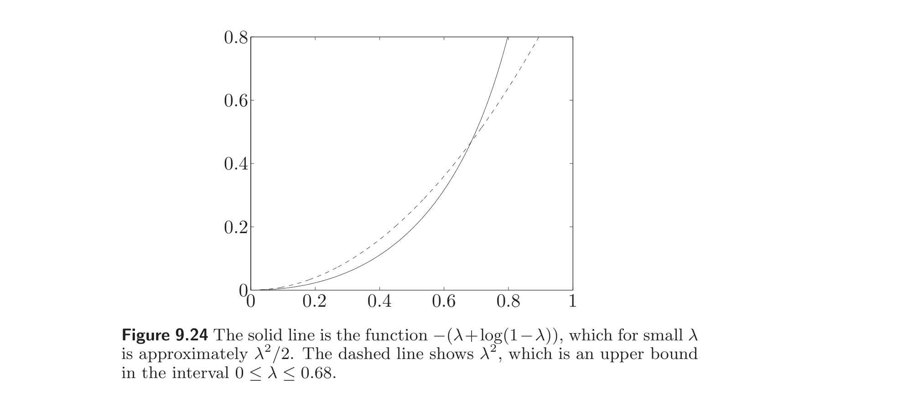
9.6.4 Analysis of Newton's method for self-concordant functions
9.6.4 自协调函数牛顿法的分析
We now analyze Newton's method with backtracking line search, when applied to a strictly convex self-concordant function $f$. As before, we assume that a starting point $x^{(0)}$ is known, and that the sublevel set $S = \{x \mid f(x) \le f(x^{(0)})\}$ is closed. We also assume that $f$ is bounded below. (This implies that $f$ has a minimizer $x^\star$; see exercise 9.19.)
The analysis is very similar to the classical analysis given in §9.5.2, except that we use self-concordance as the basic assumption instead of strong convexity and the Lipschitz condition on the Hessian, and the Newton decrement will play the role of the norm of the gradient. We will show that there are numbers $\eta$ and $\gamma > 0$, with $0 < \eta \le 1/4$, that depend only on the line search parameters $\alpha$ and $\beta$, such that the following hold:
- If $\lambda(x^{(k)}) > \eta$, then $$ f(x^{(k+1)}) - f(x^{(k)}) \le -\gamma. \tag{9.51} $$
- If $\lambda(x^{(k)}) \le \eta$, then the backtracking line search selects $t = 1$ and $$ 2\lambda(x^{(k+1)}) \le \left(2\lambda(x^{(k)})\right)^2. \tag{9.52} $$
These are the analogs of (9.32) and (9.33). As in §9.5.3, the second condition can be applied recursively, so we can conclude that for all $l \ge k$, we have $\lambda(x^{(l)}) \le \eta$, and
$$ 2\lambda(x^{(l)}) \le \left(2\lambda(x^{(k)})\right)^{2^{l-k}} \le (2\eta)^{2^{l-k}} \le \left(\frac{1}{2}\right)^{2^{l-k}}. $$
As a consequence, for all $l \ge k$,
$$ f(x^{(l)}) - p^\star \le \lambda(x^{(l)})^2 \le \frac{1}{4}\left(\frac{1}{2}\right)^{2^{l-k+1}} \le \left(\frac{1}{2}\right)^{2^{l-k+1}}, $$
and hence $f(x^{(l)}) - p^\star \le \epsilon$ if $l - k \ge \log_2 \log_2(1/\epsilon)$.
现分析带回溯线搜索的牛顿法应用于严格凸自协调函数 $f$ 时的情形。如前，假设已知起始点 $x^{(0)}$，且水平集 $S = \{x \mid f(x) \le f(x^{(0)})\}$ 为闭。还假设 $f$ 下方有界。（这蕴含 $f$ 有极小点 $x^\star$；见习题 9.19。）
分析与 §9.5.2 给出的经典分析非常相似，只是以自协调性为基本假设代替强凸性与 Hessian 的 Lipschitz 条件，且牛顿递减量将起梯度范数的作用。将证明存在数 $\eta$ 和 $\gamma > 0$（$0 < \eta \le 1/4$），仅依赖线搜索参数 $\alpha$ 和 $\beta$，使以下成立：
- 若 $\lambda(x^{(k)}) > \eta$，则 $$ f(x^{(k+1)}) - f(x^{(k)}) \le -\gamma. \tag{9.51} $$
- 若 $\lambda(x^{(k)}) \le \eta$，则回溯线搜索选 $t = 1$ 且 $$ 2\lambda(x^{(k+1)}) \le \left(2\lambda(x^{(k)})\right)^2. \tag{9.52} $$
这些是 (9.32) 和 (9.33) 的对应物。如 §9.5.3，第二个条件可递归应用，故可结论：对所有 $l \ge k$ 有 $\lambda(x^{(l)}) \le \eta$，且
$$ 2\lambda(x^{(l)}) \le \left(2\lambda(x^{(k)})\right)^{2^{l-k}} \le (2\eta)^{2^{l-k}} \le \left(\frac{1}{2}\right)^{2^{l-k}}. $$
因此，对所有 $l \ge k$，
$$ f(x^{(l)}) - p^\star \le \lambda(x^{(l)})^2 \le \frac{1}{4}\left(\frac{1}{2}\right)^{2^{l-k+1}} \le \left(\frac{1}{2}\right)^{2^{l-k+1}}, $$
故若 $l - k \ge \log_2 \log_2(1/\epsilon)$ 则 $f(x^{(l)}) - p^\star \le \epsilon$。
The first inequality implies that the damped phase cannot require more than $(f(x^{(0)}) - p^\star)/\gamma$ steps. Thus the total number of iterations required to obtain an accuracy $f(x) - p^\star \le \epsilon$, starting at a point $x^{(0)}$, is bounded by
$$ \frac{f(x^{(0)}) - p^\star}{\gamma} + \log_2 \log_2(1/\epsilon). \tag{9.53} $$
This is the analog of the bound (9.36) in the classical analysis of Newton's method.
第一个不等式蕴含阻尼阶段所需步数不超过 $(f(x^{(0)}) - p^\star)/\gamma$。故从 $x^{(0)}$ 出发达到精度 $f(x) - p^\star \le \epsilon$ 所需总迭代次数上界为
$$ \frac{f(x^{(0)}) - p^\star}{\gamma} + \log_2 \log_2(1/\epsilon). \tag{9.53} $$
这是牛顿法经典分析中界 (9.36) 的对应物。
Damped Newton phase
阻尼牛顿阶段
Let $\tilde{f}(t) = f(x + t\Delta x_{\mathrm{nt}})$, so we have
$$ \tilde{f}'(0) = -\lambda(x)^2, \qquad \tilde{f}''(0) = \lambda(x)^2. $$
If we integrate the upper bound in (9.46) twice, we obtain an upper bound for $\tilde{f}(t)$:
$$ \tilde{f}(t) \le \tilde{f}(0) + t\tilde{f}'(0) - t\tilde{f}''(0)^{1/2} - \log(1 - t\tilde{f}''(0)^{1/2}) = \tilde{f}(0) - t\lambda(x)^2 - t\lambda(x) - \log(1 - t\lambda(x)), \tag{9.54} $$
valid for $0 \le t < 1/\lambda(x)$.
We can use this bound to show the backtracking line search always results in a step size $t \ge \beta/(1 + \lambda(x))$. To prove this we note that the point $\hat{t} = 1/(1 + \lambda(x))$ satisfies the exit condition of the line search:
$$ \tilde{f}(\hat{t}) \le \tilde{f}(0) - \hat{t}\lambda(x)^2 - \hat{t}\lambda(x) - \log(1 - \hat{t}\lambda(x)) = \tilde{f}(0) - \lambda(x) + \log(1 + \lambda(x)) \le \tilde{f}(0) - \frac{\alpha\lambda(x)^2}{1 + \lambda(x)} = \tilde{f}(0) - \alpha\lambda(x)^2\hat{t}. $$
The second inequality follows from the fact that
$$ -x + \log(1 + x) + \frac{x^2}{2(1 + x)} \le 0 $$
for $x \ge 0$. Since $t \ge \beta/(1 + \lambda(x))$, we have
$$ \tilde{f}(t) - \tilde{f}(0) \le -\alpha\beta\frac{\lambda(x)^2}{1 + \lambda(x)}, $$
so (9.51) holds with
$$ \gamma = \alpha\beta\frac{\eta^2}{1 + \eta}. $$
令 $\tilde{f}(t) = f(x + t\Delta x_{\mathrm{nt}})$，则
$$ \tilde{f}'(0) = -\lambda(x)^2, \qquad \tilde{f}''(0) = \lambda(x)^2. $$
将 (9.46) 的上界积分两次，得 $\tilde{f}(t)$ 的上界：
$$ \tilde{f}(t) \le \tilde{f}(0) + t\tilde{f}'(0) - t\tilde{f}''(0)^{1/2} - \log(1 - t\tilde{f}''(0)^{1/2}) = \tilde{f}(0) - t\lambda(x)^2 - t\lambda(x) - \log(1 - t\lambda(x)), \tag{9.54} $$
对 $0 \le t < 1/\lambda(x)$ 有效。
用此界可证回溯线搜索总导致步长 $t \ge \beta/(1 + \lambda(x))$。为证之，注意点 $\hat{t} = 1/(1 + \lambda(x))$ 满足线搜索退出条件：
$$ \tilde{f}(\hat{t}) \le \tilde{f}(0) - \hat{t}\lambda(x)^2 - \hat{t}\lambda(x) - \log(1 - \hat{t}\lambda(x)) = \tilde{f}(0) - \lambda(x) + \log(1 + \lambda(x)) \le \tilde{f}(0) - \frac{\alpha\lambda(x)^2}{1 + \lambda(x)} = \tilde{f}(0) - \alpha\lambda(x)^2\hat{t}. $$
第二个不等式由
$$ -x + \log(1 + x) + \frac{x^2}{2(1 + x)} \le 0 $$
（对 $x \ge 0$）得出。因 $t \ge \beta/(1 + \lambda(x))$，有
$$ \tilde{f}(t) - \tilde{f}(0) \le -\alpha\beta\frac{\lambda(x)^2}{1 + \lambda(x)}, $$
故 (9.51) 满足，其中
$$ \gamma = \alpha\beta\frac{\eta^2}{1 + \eta}. $$
Quadratically convergent phase
二次收敛阶段
We will show that we can take
$$ \eta = (1 - 2\alpha)/4, $$
(which satisfies $0 < \eta < 1/4$, since $0 < \alpha < 1/2$), i.e., if $\lambda(x^{(k)}) \le (1 - 2\alpha)/4$, then the backtracking line search accepts the unit step and (9.52) holds.
We first note that the upper bound (9.54) implies that a unit step $t = 1$ yields a point in $\mathbf{dom}\, f$ if $\lambda(x) < 1$. Moreover, if $\lambda(x) \le (1 - 2\alpha)/2$, we have, using (9.54),
$$ \tilde{f}(1) \le \tilde{f}(0) - \lambda(x)^2 - \lambda(x) - \log(1 - \lambda(x)) \le \tilde{f}(0) - \frac{1}{2}\lambda(x)^2 + \lambda(x)^3 \le \tilde{f}(0) - \alpha\lambda(x)^2, $$
so the unit step satisfies the condition of sufficient decrease. (The second line follows from the fact that $-x - \log(1 - x) \le \frac{1}{2}x^2 + x^3$ for $0 \le x \le 0.81$.)
The inequality (9.52) follows from the following fact, proved in exercise 9.18. If $\lambda(x) < 1$, and $x^+ = x - \nabla^2 f(x)^{-1}\nabla f(x)$, then
$$ \lambda(x^+) \le \frac{\lambda(x)^2}{(1 - \lambda(x))^2}. \tag{9.55} $$
In particular, if $\lambda(x) \le 1/4$,
$$ \lambda(x^+) \le 2\lambda(x)^2, $$
which proves that (9.52) holds when $\lambda(x^{(k)}) \le \eta$.
将证明可取
$$ \eta = (1 - 2\alpha)/4, $$
（因 $0 < \alpha < 1/2$，满足 $0 < \eta < 1/4$），即若 $\lambda(x^{(k)}) \le (1 - 2\alpha)/4$，则回溯线搜索接受单位步且 (9.52) 成立。
首先注意上界 (9.54) 蕴含：若 $\lambda(x) < 1$，则单位步 $t = 1$ 给出 $\mathbf{dom}\, f$ 中的点。又若 $\lambda(x) \le (1 - 2\alpha)/2$，用 (9.54) 有
$$ \tilde{f}(1) \le \tilde{f}(0) - \lambda(x)^2 - \lambda(x) - \log(1 - \lambda(x)) \le \tilde{f}(0) - \frac{1}{2}\lambda(x)^2 + \lambda(x)^3 \le \tilde{f}(0) - \alpha\lambda(x)^2, $$
故单位步满足充分下降条件。（第二行由 $0 \le x \le 0.81$ 时 $-x - \log(1 - x) \le \frac{1}{2}x^2 + x^3$ 得出。）
不等式 (9.52) 由习题 9.18 中证明的以下事实得出。若 $\lambda(x) < 1$ 且 $x^+ = x - \nabla^2 f(x)^{-1}\nabla f(x)$，则
$$ \lambda(x^+) \le \frac{\lambda(x)^2}{(1 - \lambda(x))^2}. \tag{9.55} $$
特别地，若 $\lambda(x) \le 1/4$，
$$ \lambda(x^+) \le 2\lambda(x)^2, $$
这证明了当 $\lambda(x^{(k)}) \le \eta$ 时 (9.52) 成立。
The final complexity bound
最终复杂度界
Putting it all together, the bound (9.53) on the number of Newton iterations becomes
$$ \frac{f(x^{(0)}) - p^\star}{\gamma} + \log_2 \log_2(1/\epsilon) = \frac{20 - 8\alpha}{\alpha\beta(1 - 2\alpha)^2}(f(x^{(0)}) - p^\star) + \log_2 \log_2(1/\epsilon). \tag{9.56} $$
This expression depends only on the line search parameters $\alpha$ and $\beta$, and the final accuracy $\epsilon$. Moreover the term involving $\epsilon$ can be safely replaced by the constant six, so the bound really depends only on $\alpha$ and $\beta$. For typical values of $\alpha$ and $\beta$, the constant that scales $f(x^{(0)}) - p^\star$ is on the order of several hundred. For example, with $\alpha = 0.1$, $\beta = 0.8$, the scaling factor is 375. With tolerance $\epsilon = 10^{-10}$, we obtain the bound
$$ 375(f(x^{(0)}) - p^\star) + 6. \tag{9.57} $$
We will see that this bound is fairly conservative, but does capture what appears to be the general form of the worst-case number of Newton steps required. A more refined analysis, such as the one originally given by Nesterov and Nemirovski, gives a similar bound, with a substantially smaller constant scaling $f(x^{(0)}) - p^\star$.
综合起来，牛顿迭代次数的界 (9.53) 成为
$$ \frac{f(x^{(0)}) - p^\star}{\gamma} + \log_2 \log_2(1/\epsilon) = \frac{20 - 8\alpha}{\alpha\beta(1 - 2\alpha)^2}(f(x^{(0)}) - p^\star) + \log_2 \log_2(1/\epsilon). \tag{9.56} $$
此表达仅依赖线搜索参数 $\alpha$ 和 $\beta$ 以及最终精度 $\epsilon$。且涉及 $\epsilon$ 的项可安全地以常数六代替，故界实际上仅依赖 $\alpha$ 和 $\beta$。对典型的 $\alpha$、$\beta$ 值，缩放 $f(x^{(0)}) - p^\star$ 的常数为数百量级。例如 $\alpha = 0.1$、$\beta = 0.8$ 时缩放因子为 375。取容差 $\epsilon = 10^{-10}$，得界
$$ 375(f(x^{(0)}) - p^\star) + 6. \tag{9.57} $$
将看到此界相当保守，但确实抓住了所需牛顿步数最坏情形的一般形式。更精细的分析（如 Nesterov 和 Nemirovski 原始给出的）给出类似的界，但缩放 $f(x^{(0)}) - p^\star$ 的常数小得多。
9.6.5 Discussion and numerical examples
9.6.5 讨论与数值例子
A family of self-concordant functions
一族自协调函数
It is interesting to compare the upper bound (9.57) with the actual number of iterations required to minimize a self-concordant function. We consider a family of problems of the form
$$ f(x) = -\sum_{i=1}^m \log(b_i - a_i^T x). $$
The problem data $a_i$ and $b$ were generated as follows. For each problem instance, the coefficients of $a_i$ were generated from independent normal distributions with mean zero and unit variance, and the coefficients $b$ were generated from a uniform distribution on $[0, 1]$. Problem instances which were unbounded below were discarded. For each problem we first compute $x^\star$. We then generate a starting point by choosing a random direction $v$, and taking $x^{(0)} = x^\star + sv$, where $s$ is chosen so that $f(x^{(0)}) - p^\star$ has a prescribed value between 0 and 35. (We should point out that starting points with values $f(x^{(0)}) - p^\star = 10$ or higher are actually very close to the boundary of the polyhedron.) We then minimize the function using Newton's method with a backtracking line search with parameters $\alpha = 0.1$, $\beta = 0.8$, and tolerance $\epsilon = 10^{-10}$.
将上界 (9.57) 与极小化自协调函数所需实际迭代次数作比较是有趣的。考虑一族形如
$$ f(x) = -\sum_{i=1}^m \log(b_i - a_i^T x) $$
的问题。问题数据 $a_i$ 和 $b$ 如下生成。对每个问题实例，$a_i$ 的系数由独立的均值零、单位方差正态分布生成，$b$ 的系数由 $[0, 1]$ 上均匀分布生成。下方无界的问题实例被丢弃。对每个问题先计算 $x^\star$。然后通过选取随机方向 $v$、令 $x^{(0)} = x^\star + sv$（$s$ 使 $f(x^{(0)}) - p^\star$ 取 0 到 35 之间的指定值）生成起始点。（应指出，$f(x^{(0)}) - p^\star = 10$ 或更大的起始点实际上非常接近多面体的边界。）然后用牛顿法（带回溯线搜索，参数 $\alpha = 0.1$、$\beta = 0.8$，容差 $\epsilon = 10^{-10}$）极小化该函数。
Figure 9.25 shows the number of Newton iterations required versus $f(x^{(0)}) - p^\star$ for 150 problem instances. The circles show 50 problems with $m = 100$, $n = 50$; the squares show 50 problems with $m = 1000$, $n = 500$; and the diamonds show 50 problems with $m = 1000$, $n = 50$.
图 9.25 显示 150 个问题实例所需牛顿迭代次数对 $f(x^{(0)}) - p^\star$ 的图。圆圈为 50 个 $m = 100$、$n = 50$ 的问题；方块为 50 个 $m = 1000$、$n = 500$ 的问题；菱形为 50 个 $m = 1000$、$n = 50$ 的问题。
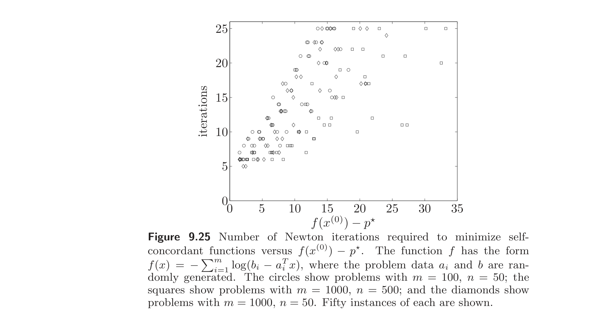
For the values of the backtracking parameters used, the complexity bound found above is
$$ 375(f(x^{(0)}) - p^\star) + 6, \tag{9.58} $$
clearly a much larger value than the number of iterations required (for these 150 instances). The plot suggests that there is a valid bound of the same form, but with a much smaller constant (say, around 1.5) scaling $f(x^{(0)}) - p^\star$. Indeed, the expression
$$ f(x^{(0)}) - p^\star + 6 $$
is not a bad gross predictor of the number of Newton steps required, although it is clearly not the only factor. First, there are plenty of problems instances where the number of Newton steps is somewhat smaller, which correspond, we can guess, to 'lucky' starting points. Note also that for the larger problems, with 500 variables (represented by the squares), there seem to be even more cases where the number of Newton steps is unusually small.
对所用回溯参数值，上面求得的复杂度界为
$$ 375(f(x^{(0)}) - p^\star) + 6, \tag{9.58} $$
显然远大于（这 150 个实例）所需迭代次数。该图提示存在同形式的有效界，但缩放 $f(x^{(0)}) - p^\star$ 的常数小得多（约 1.5）。事实上，表达式
$$ f(x^{(0)}) - p^\star + 6 $$
对所需牛顿步数是一个不差的粗略预测器，尽管显然不是唯一因素。首先，有不少问题实例所需牛顿步数略小，可猜测对应“幸运的”起始点。还注意，对较大的问题（500 个变量，以方块表示），似乎有更多牛顿步数异常少的情形。
We should mention here that the problem family we study is not just self-concordant, but in fact minimally self-concordant, by which we mean that $\alpha f$ is not self-concordant for $\alpha < 1$. Hence, the bound (9.58) cannot be improved by simply scaling $f$. (The function $f(x) = -20\log x$ is an example of a self-concordant function which is not minimally self-concordant, since $(1/20)f$ is also self-concordant.)
这里应提及，所研究的问题族不仅是自协调的，而且是极小自协调的（minimally self-concordant），意即 $\alpha f$ 对 $\alpha < 1$ 不自协调。故界 (9.58) 不能通过简单缩放 $f$ 改进。（函数 $f(x) = -20\log x$ 是自协调但非极小自协调的例子，因为 $(1/20)f$ 也自协调。）
Practical importance of self-concordance
自协调性的实际重要性
We have already observed that Newton's method works in general very well for strongly convex objective functions. We can justify this vague statement empirically, and also using the classical analysis of Newton's method, which yields a complexity bound, but one that depends on several constants that are almost always unknown.
For self-concordant functions we can say somewhat more. We have a complexity bound that is completely explicit, and does not depend on any unknown constants. Empirical studies suggest that this bound can be tightened considerably, but its general form, a small constant plus a multiple of $f(x^{(0)}) - p^\star$, seems to predict, at least crudely, the number of Newton steps required to minimize an approximately minimally self-concordant function.
It is not yet clear whether self-concordant functions are in practice more easily minimized by Newton's method than non-self-concordant functions. (It is not even clear how one would make this statement precise.) At the moment, we can say that self-concordant functions are a class of functions for which we can say considerably more about the complexity of Newton's method than is the case for non-self-concordant functions.
我们已观察到，牛顿法对强凸目标函数一般表现很好。可经验地论证这一模糊说法，也可用牛顿法的经典分析论证，后者给出复杂度界，但依赖几个几乎总未知的常数。
对自协调函数能说得更多。有完全显式、不依赖任何未知常数的复杂度界。经验研究表明此界可大幅收紧，但其一般形式（小常数加 $f(x^{(0)}) - p^\star$ 的倍数）似乎至少粗略预测了极小化近似极小自协调函数所需牛顿步数。
自协调函数是否在实践中比非自协调函数更易被牛顿法极小化，尚不清楚。（甚至不清楚如何精确表述此说法。）目前可以说，自协调函数是这样一类函数：对其我们能比非自协调函数对牛顿法复杂度说得更多。
9.7 Implementation
9.7 实现
In this section we discuss some of the issues that arise in implementing an unconstrained minimization algorithm. We refer the reader to appendix C for more details on numerical linear algebra.
本节讨论实现无约束极小化算法时遇到的一些问题。数值线性代数的更多细节见附录 C。
9.7.1 Pre-computation for line searches
9.7.1 线搜索的预计算
In the simplest implementation of a line search, $f(x + t\Delta x)$ is evaluated for each value of $t$ in the same way that $f(z)$ is evaluated for any $z \in \mathbf{dom}\, f$. But in some cases we can exploit the fact that $f$ (and its derivatives, in an exact line search) are to be evaluated at many points along the ray $\{x + t\Delta x \mid t \ge 0\}$ to reduce the total computational effort. This usually requires some pre-computation, which is often on the same order as computing $f$ at any point, after which $f$ (and its derivatives) can be computed more efficiently along the ray.
Suppose that $x \in \mathbf{dom}\, f$ and $\Delta x \in \mathbb{R}^n$, and define $\tilde{f}$ as $f$ restricted to the line or ray determined by $x$ and $\Delta x$, i.e., $\tilde{f}(t) = f(x + t\Delta x)$. In a backtracking line search we must evaluate $\tilde{f}$ for several, and possibly many, values of $t$; in an exact line search method we must evaluate $\tilde{f}$ and one or more derivatives at a number of values of $t$. In the simple method described above, we evaluate $\tilde{f}(t)$ by first forming $z = x + t\Delta x$, and then evaluating $f(z)$. To evaluate $\tilde{f}'(t)$, we form $z = x + t\Delta x$, then evaluate $\nabla f(z)$, and then compute $\tilde{f}'(t) = \nabla f(z)^T \Delta x$. In some representative examples below we show how $\tilde{f}$ can be computed at a number of values of $t$ more efficiently.
在线搜索的最简单实现中，$f(x + t\Delta x)$ 对每个 $t$ 值的求值方式与对任意 $z \in \mathbf{dom}\, f$ 求 $f(z)$ 相同。但在某些情形下，可利用 $f$（及其导数，对精确线搜索）需在射线 $\{x + t\Delta x \mid t \ge 0\}$ 上多个点处求值的事实来降低总计算量。这通常需要一些预计算，其量级常与在任一点计算 $f$ 相当，之后 $f$（及其导数）沿射线可更高效地计算。
设 $x \in \mathbf{dom}\, f$、$\Delta x \in \mathbb{R}^n$，定义 $\tilde{f}$ 为 $f$ 限制在由 $x$ 和 $\Delta x$ 确定的直线或射线上，即 $\tilde{f}(t) = f(x + t\Delta x)$。在回溯线搜索中，需对若干、可能多个 $t$ 值求 $\tilde{f}$；在精确线搜索中，需对若干 $t$ 值求 $\tilde{f}$ 及一阶或多阶导数。在上述简单方法中，先形成 $z = x + t\Delta x$ 再求 $f(z)$ 以计算 $\tilde{f}(t)$。为计算 $\tilde{f}'(t)$，形成 $z = x + t\Delta x$，求 $\nabla f(z)$，再计算 $\tilde{f}'(t) = \nabla f(z)^T \Delta x$。下面用一些代表性例子说明如何更高效地对多个 $t$ 值计算 $\tilde{f}$。
Composition with an affine function
与仿射函数的复合
A very general case in which pre-computation can speed up the line search process occurs when the objective has the form $f(x) = \phi(Ax + b)$, where $A \in \mathbb{R}^{p \times n}$, and $\phi$ is easy to evaluate (for example, separable). To evaluate $\tilde{f}(t) = f(x + t\Delta x)$ for $k$ values of $t$ using the simple approach, we form $A(x + t\Delta x) + b$ for each value of $t$ (which costs $2kpn$ flops), and then evaluate $\phi(A(x + t\Delta x) + b)$ for each value of $t$. This can be done more efficiently by first computing $Ax + b$ and $A\Delta x$ ($4pn$ flops), then forming $A(x + t\Delta x) + b$ for each value of $t$ using
$$ A(x + t\Delta x) + b = (Ax + b) + t(A\Delta x), $$
which costs $2kp$ flops. The total cost, keeping only the dominant terms, is $4pn + 2kp$ flops, compared to $2kpn$ for the simple method.
预计算可加速线搜索过程的一个非常一般的情形是：目标具有形式 $f(x) = \phi(Ax + b)$，其中 $A \in \mathbb{R}^{p \times n}$，$\phi$ 易于求值（例如可分）。用简单方法对 $k$ 个 $t$ 值求 $\tilde{f}(t) = f(x + t\Delta x)$ 时，对每个 $t$ 值形成 $A(x + t\Delta x) + b$（耗费 $2kpn$ flops），再对每个 $t$ 值求 $\phi(A(x + t\Delta x) + b)$。更高效的做法是先计算 $Ax + b$ 和 $A\Delta x$（$4pn$ flops），再用
$$ A(x + t\Delta x) + b = (Ax + b) + t(A\Delta x) $$
对每个 $t$ 值形成 $A(x + t\Delta x) + b$（耗费 $2kp$ flops）。总开销（仅保留主导项）为 $4pn + 2kp$ flops，而简单方法为 $2kpn$。
Analytic center of a linear matrix inequality
线性矩阵不等式的解析中心
Here we give an example that is more specific, and more complete. We consider the problem (9.6) of computing the analytic center of a linear matrix inequality, i.e., minimizing $\log\det F(x)^{-1}$, where $x \in \mathbb{R}^n$ and $F : \mathbb{R}^n \to \mathbb{S}^p$ is affine. Along the line through $x$ with direction $\Delta x$ we have
$$ \tilde{f}(t) = \log\det(F(x + t\Delta x))^{-1} = -\log\det(A + tB) $$
where
$$ A = F(x), \qquad B = \Delta x_1 F_1 + \cdots + \Delta x_n F_n \in \mathbb{S}^p. $$
Since $A \succ 0$, it has a Cholesky factorization $A = LL^T$, where $L$ is lower triangular and nonsingular. Therefore we can express $\tilde{f}$ as
$$ \tilde{f}(t) = -\log\det\left(L(I + tL^{-1}BL^{-T})L^T\right) = -\log\det A - \sum_{i=1}^p \log(1 + t\lambda_i) \tag{9.59} $$
where $\lambda_1, \ldots, \lambda_p$ are the eigenvalues of $L^{-1}BL^{-T}$. Once these eigenvalues are computed, we can evaluate $\tilde{f}(t)$, for any $t$, with $4p$ simple arithmetic computations, by using the formula on the right hand side of (9.59). We can evaluate $\tilde{f}'(t)$ (and similarly, any higher derivative) in $4p$ operations, using the formula
$$ \tilde{f}'(t) = -\sum_{i=1}^p \frac{\lambda_i}{1 + t\lambda_i}. $$
这里给出一个更具体、更完整的例子。考虑问题 (9.6)——计算线性矩阵不等式的解析中心，即极小化 $\log\det F(x)^{-1}$，其中 $x \in \mathbb{R}^n$，$F : \mathbb{R}^n \to \mathbb{S}^p$ 仿射。沿过 $x$、方向 $\Delta x$ 的直线有
$$ \tilde{f}(t) = \log\det(F(x + t\Delta x))^{-1} = -\log\det(A + tB) $$
其中
$$ A = F(x), \qquad B = \Delta x_1 F_1 + \cdots + \Delta x_n F_n \in \mathbb{S}^p. $$
因 $A \succ 0$，它有 Cholesky 分解 $A = LL^T$（$L$ 为下三角且非奇异）。故 $\tilde{f}$ 可表示为
$$ \tilde{f}(t) = -\log\det\left(L(I + tL^{-1}BL^{-T})L^T\right) = -\log\det A - \sum_{i=1}^p \log(1 + t\lambda_i) \tag{9.59} $$
其中 $\lambda_1, \ldots, \lambda_p$ 为 $L^{-1}BL^{-T}$ 的特征值。一旦算出这些特征值，用 (9.59) 右端公式，对任意 $t$ 可用 $4p$ 次简单算术运算求 $\tilde{f}(t)$。用公式
$$ \tilde{f}'(t) = -\sum_{i=1}^p \frac{\lambda_i}{1 + t\lambda_i} $$
可用 $4p$ 次运算求 $\tilde{f}'(t)$（类似地，任意高阶导数）。
Let us compare the two methods for carrying out a line search, assuming that we need to evaluate $f(x + t\Delta x)$ for $k$ values of $t$. In the simple method, for each value of $t$ we form $F(x + t\Delta x)$, and then evaluate $f(x + t\Delta x)$ as $-\log\det F(x + t\Delta x)$. For example, we can find the Cholesky factorization of $F(x + t\Delta x) = LL^T$, and then evaluate
$$ -\log\det F(x + t\Delta x) = -2\sum_{i=1}^p \log L_{ii}. $$
The cost is $np^2$ to form $F(x + t\Delta x)$, plus $(1/3)p^3$ for the Cholesky factorization. Therefore the total cost of the line search is
$$ k(np^2 + (1/3)p^3) = knp^2 + (1/3)kp^3. $$
Using the method outlined above, we first form $A$, which costs $np^2$, and factor it, which costs $(1/3)p^3$. We also form $B$ (which costs $np^2$), and $L^{-1}BL^{-T}$, which costs $2p^3$. The eigenvalues of this matrix are then computed, at a cost of about $(4/3)p^3$ flops. This pre-computation requires a total of $2np^2 + (11/3)p^3$ flops. After finishing this pre-computation, we can now evaluate $\tilde{f}(t)$ for each value of $t$ at a cost of $4p$ flops. The total cost is then
$$ 2np^2 + (11/3)p^3 + 4kp. $$
Assuming $k$ is small compared to $p(2n + (11/3)p)$, this means the entire line search can be carried out at an effort comparable to simply evaluating $f$. Depending on the values of $k$, $p$, and $n$, the savings over the simple method can be as large as order $k$.
比较两种线搜索方法，假设需对 $k$ 个 $t$ 值求 $f(x + t\Delta x)$。简单方法中，对每个 $t$ 值形成 $F(x + t\Delta x)$，再以 $-\log\det F(x + t\Delta x)$ 求 $f(x + t\Delta x)$。例如，求 $F(x + t\Delta x) = LL^T$ 的 Cholesky 分解，再计算
$$ -\log\det F(x + t\Delta x) = -2\sum_{i=1}^p \log L_{ii}. $$
开销为形成 $F(x + t\Delta x)$ 的 $np^2$ 加上 Cholesky 分解的 $(1/3)p^3$。故线搜索总开销为
$$ k(np^2 + (1/3)p^3) = knp^2 + (1/3)kp^3. $$
用上述方法，先形成 $A$（$np^2$）并分解（$(1/3)p^3$）。还形成 $B$（$np^2$）和 $L^{-1}BL^{-T}$（$2p^3$）。再算此矩阵的特征值，约 $(4/3)p^3$ flops。此预计算共需 $2np^2 + (11/3)p^3$ flops。完成预计算后，对每个 $t$ 值以 $4p$ flops 求 $\tilde{f}(t)$。总开销为
$$ 2np^2 + (11/3)p^3 + 4kp. $$
设 $k$ 相对 $p(2n + (11/3)p)$ 较小，则整个线搜索的开销与仅求 $f$ 相当。视 $k$、$p$、$n$ 的值而定，相对简单方法的节省可达 $k$ 量级。
9.7.2 Computing the Newton step
9.7.2 计算牛顿步
In this section we briefly describe some of the issues that arise in implementing Newton's method. In most cases, the work of computing the Newton step $\Delta x_{\mathrm{nt}}$ dominates the work involved in the line search.
To compute the Newton step $\Delta x_{\mathrm{nt}}$, we first evaluate and form the Hessian matrix $H = \nabla^2 f(x)$ and the gradient $g = \nabla f(x)$ at $x$. Then we solve the system of linear equations $H\Delta x_{\mathrm{nt}} = -g$ to find the Newton step. This set of equations is sometimes called the Newton system (since its solution gives the Newton step) or the normal equations, since the same type of equation arises in solving a least-squares problem (see §9.1.1).
While a general linear equation solver can be used, it is better to use methods that take advantage of the symmetry and positive definiteness of $H$. The most common approach is to form the Cholesky factorization of $H$, i.e., to compute a lower triangular matrix $L$ that satisfies $LL^T = H$ (see §C.3.2). We then solve $Lw = -g$ by forward substitution, to obtain $w = -L^{-1}g$, and then solve $L^T \Delta x_{\mathrm{nt}} = w$ by back substitution, to obtain
$$ \Delta x_{\mathrm{nt}} = L^{-T}w = -L^{-T}L^{-1}g = -H^{-1}g. $$
We can compute the Newton decrement as $\lambda^2 = -\Delta x_{\mathrm{nt}}^T g$, or use the formula
$$ \lambda^2 = g^T H^{-1}g = \|L^{-1}g\|_2^2 = \|w\|_2^2. $$
If a dense (unstructured) Cholesky factorization is used, the cost of the forward and back substitution is dominated by the cost of the Cholesky factorization, which is $(1/3)n^3$ flops. The total cost of computing the Newton step $\Delta x_{\mathrm{nt}}$ is thus $F + (1/3)n^3$ flops, where $F$ is the cost of forming $H$ and $g$.
本节简述实现牛顿法时的一些问题。多数情形下，计算牛顿步 $\Delta x_{\mathrm{nt}}$ 的工作量主导线搜索的工作量。
为计算牛顿步 $\Delta x_{\mathrm{nt}}$，先在 $x$ 处求并形成 Hessian 矩阵 $H = \nabla^2 f(x)$ 和梯度 $g = \nabla f(x)$。然后解线性方程组 $H\Delta x_{\mathrm{nt}} = -g$ 得牛顿步。这组方程有时称为牛顿系统（因解给出牛顿步）或法方程（因同类方程在求解最小二乘问题时出现，见 §9.1.1）。
虽可用一般线性方程求解器，但利用 $H$ 的对称性与正定性的方法更好。最常用的方法是形成 $H$ 的 Cholesky 分解，即计算满足 $LL^T = H$ 的下三角矩阵 $L$（见 §C.3.2）。然后用前代法解 $Lw = -g$ 得 $w = -L^{-1}g$，再用回代法解 $L^T \Delta x_{\mathrm{nt}} = w$ 得
$$ \Delta x_{\mathrm{nt}} = L^{-T}w = -L^{-T}L^{-1}g = -H^{-1}g. $$
牛顿递减量可由 $\lambda^2 = -\Delta x_{\mathrm{nt}}^T g$ 计算，或用公式
$$ \lambda^2 = g^T H^{-1}g = \|L^{-1}g\|_2^2 = \|w\|_2^2. $$
若用稠密（非结构化）Cholesky 分解，前代与回代的开销被 Cholesky 分解的开销主导，为 $(1/3)n^3$ flops。计算牛顿步 $\Delta x_{\mathrm{nt}}$ 的总开销为 $F + (1/3)n^3$ flops，其中 $F$ 为形成 $H$ 和 $g$ 的开销。
It is often possible to solve the Newton system $H\Delta x_{\mathrm{nt}} = -g$ more efficiently, by exploiting special structure in $H$, such as band structure or sparsity. In this context, 'structure of $H$' means structure that is the same for all $x$. For example, when we say that '$H$ is tridiagonal' we mean that for every $x \in \mathbf{dom}\, f$, $\nabla^2 f(x)$ is tridiagonal.
常可利用 $H$ 的特殊结构（如带状结构或稀疏性）更高效地解牛顿系统 $H\Delta x_{\mathrm{nt}} = -g$。此处“$H$ 的结构”指对所有 $x$ 相同的结构。例如，说“$H$ 三对角”意指对每个 $x \in \mathbf{dom}\, f$，$\nabla^2 f(x)$ 三对角。
Band structure
带状结构
If the Hessian $H$ is banded with bandwidth $k$, i.e., $H_{ij} = 0$ for $|i - j| > k$, then the banded Cholesky factorization can be used, as well as banded forward and back substitutions. The cost of computing the Newton step $\Delta x_{\mathrm{nt}} = -H^{-1}g$ is then $F + nk^2$ flops (assuming $k \ll n$), compared to $F + (1/3)n^3$ for a dense factorization and substitution method.
The Hessian band structure condition
$$ \nabla^2 f(x)_{ij} = \frac{\partial^2 f(x)}{\partial x_i \partial x_j} = 0 $$
for $|i - j| > k$, for all $x \in \mathbf{dom}\, f$, has an interesting interpretation in terms of the objective function $f$. Roughly speaking it means that in the objective function, each variable $x_i$ couples nonlinearly only to the $2k + 1$ variables $x_j$, $j = i - k, \ldots, i + k$. This occurs when $f$ has the partial separability form
$$ f(x) = \psi_1(x_1, \ldots, x_{k+1}) + \psi_2(x_2, \ldots, x_{k+2}) + \cdots + \psi_{n-k}(x_{n-k}, \ldots, x_n), $$
where $\psi_i : \mathbb{R}^{k+1} \to \mathbb{R}$. In other words, $f$ can be expressed as a sum of functions of $k$ consecutive variables.
若 Hessian $H$ 带状，带宽为 $k$（即 $|i - j| > k$ 时 $H_{ij} = 0$），则可用带状 Cholesky 分解及带状前代、回代。计算牛顿步 $\Delta x_{\mathrm{nt}} = -H^{-1}g$ 的开销为 $F + nk^2$ flops（设 $k \ll n$），而稠密分解与代入法为 $F + (1/3)n^3$。
Hessian 带状结构条件
$$ \nabla^2 f(x)_{ij} = \frac{\partial^2 f(x)}{\partial x_i \partial x_j} = 0 $$
（对 $|i - j| > k$、所有 $x \in \mathbf{dom}\, f$）就目标函数 $f$ 而言有有趣解释。粗略地说，它意味着目标函数中每个变量 $x_i$ 仅与 $2k + 1$ 个变量 $x_j$（$j = i - k, \ldots, i + k$）非线性耦合。这发生在 $f$ 具有部分可分形式
$$ f(x) = \psi_1(x_1, \ldots, x_{k+1}) + \psi_2(x_2, \ldots, x_{k+2}) + \cdots + \psi_{n-k}(x_{n-k}, \ldots, x_n), $$
（$\psi_i : \mathbb{R}^{k+1} \to \mathbb{R}$）时。换言之，$f$ 可表示为 $k$ 个相继变量的函数之和。
Example 9.9 Consider the problem of minimizing $f : \mathbb{R}^n \to \mathbb{R}$, which has the form
$$ f(x) = \psi_1(x_1, x_2) + \psi_2(x_2, x_3) + \cdots + \psi_{n-1}(x_{n-1}, x_n), $$
where $\psi_i : \mathbb{R}^2 \to \mathbb{R}$ are convex and twice differentiable. Because of this form, the Hessian $\nabla^2 f$ is tridiagonal, since $\partial^2 f/\partial x_i \partial x_j = 0$ for $|i - j| > 1$. (And conversely, if the Hessian of a function is tridiagonal for all $x$, then it has this form.)
Using Cholesky factorization and forward and back substitution algorithms for tridiagonal matrices, we can solve the Newton system for this problem in order $n$ flops. This should be compared to order $n^3$ flops, if the special form of $f$ were not exploited.
例 9.9 考虑极小化 $f : \mathbb{R}^n \to \mathbb{R}$，其形式为
$$ f(x) = \psi_1(x_1, x_2) + \psi_2(x_2, x_3) + \cdots + \psi_{n-1}(x_{n-1}, x_n), $$
其中 $\psi_i : \mathbb{R}^2 \to \mathbb{R}$ 凸且二阶可微。由于此形式，Hessian $\nabla^2 f$ 三对角，因 $|i - j| > 1$ 时 $\partial^2 f/\partial x_i \partial x_j = 0$。（反之，若一函数的 Hessian 对所有 $x$ 三对角，则它有此形式。）
用三对角矩阵的 Cholesky 分解与前代、回代算法，可在 $n$ 量级 flops 内解此问题的牛顿系统。若不利用 $f$ 的特殊形式，则为 $n^3$ 量级 flops。
Sparse structure
稀疏结构
More generally we can exploit sparsity of the Hessian $H$ in solving the Newton system. This sparse structure occurs whenever each variable $x_i$ is nonlinearly coupled (in the objective) to only a few other variables, or equivalently, when the objective function can be expressed as a sum of functions, each depending on only a few variables, and each variable appearing in only a few of these functions.
To solve $H\Delta x = -g$ when $H$ is sparse, a sparse Cholesky factorization is used to compute a permutation matrix $P$ and lower triangular matrix $L$ for which $H = PLL^T P^T$. The cost of this factorization depends on the particular sparsity pattern, but is often far smaller than $(1/3)n^3$, and an empirical complexity of order $n$ (for large $n$) is not uncommon. The forward and back substitution are very similar to the basic method without the permutation. We solve $Lw = -P^T g$ using forward substitution, and then solve $L^T v = w$ by back substitution to obtain $v = L^{-T}w = -L^{-T}L^{-1}P^T g$. The Newton step is then $\Delta x = Pv$.
Since the sparsity pattern of $H$ does not change as $x$ varies (or more precisely, since we only exploit sparsity that does not change with $x$) we can use the same permutation matrix $P$ for each of the Newton steps. The step of determining a good permutation matrix $P$, which is called the symbolic factorization step, can be done once, for the whole Newton process.
更一般地，可利用 Hessian $H$ 的稀疏性解牛顿系统。每当每个变量 $x_i$ 仅（在目标函数中）与少数其他变量非线性耦合，或等价地，当目标函数可表示为若干函数之和、每个函数仅依赖少数变量且每个变量仅出现在其中少数几个中时，此稀疏结构出现。
当 $H$ 稀疏时解 $H\Delta x = -g$，用稀疏 Cholesky 分解计算置换矩阵 $P$ 和下三角矩阵 $L$ 使 $H = PLL^T P^T$。此分解的开销依赖具体稀疏模式，但常远小于 $(1/3)n^3$，$n$ 量级（大 $n$ 时）的经验复杂度并不罕见。前代与回代与无置换的基本方法非常相似。用前代法解 $Lw = -P^T g$，再用回代法解 $L^T v = w$ 得 $v = L^{-T}w = -L^{-T}L^{-1}P^T g$。牛顿步为 $\Delta x = Pv$。
由于 $H$ 的稀疏模式不随 $x$ 变化（更精确地说，由于我们仅利用不随 $x$ 变化的稀疏性），可对每个牛顿步使用同一置换矩阵 $P$。确定好的置换矩阵 $P$ 的步骤称为符号分解（symbolic factorization），可对整个牛顿过程做一次。
Diagonal plus low rank
对角加低秩
There are many other types of structure that can be exploited in solving the Newton system $H\Delta x_{\mathrm{nt}} = -g$. Here we briefly describe one, and refer the reader to appendix C for more details. Suppose the Hessian $H$ can be expressed as a diagonal matrix plus one of low rank, say, $p$. This occurs when the objective function $f$ has the special form
$$ f(x) = \sum_{i=1}^n \psi_i(x_i) + \psi_0(Ax + b) \tag{9.60} $$
where $A \in \mathbb{R}^{p \times n}$, $\psi_1, \ldots, \psi_n : \mathbb{R} \to \mathbb{R}$, and $\psi_0 : \mathbb{R}^p \to \mathbb{R}$. In other words, $f$ is a separable function, plus a function that depends on a low dimensional affine function of $x$.
To find the Newton step $\Delta x_{\mathrm{nt}}$ for (9.60) we must solve the Newton system $H\Delta x_{\mathrm{nt}} = -g$, with
$$ H = D + A^T H_0 A. $$
Here $D = \mathbf{diag}(\psi_1''(x_1), \ldots, \psi_n''(x_n))$ is diagonal, and $H_0 = \nabla^2 \psi_0(Ax + b)$ is the Hessian of $\psi_0$. If we compute the Newton step without exploiting the structure, the cost of solving the Newton system is $(1/3)n^3$ flops.
Let $H_0 = L_0 L_0^T$ be the Cholesky factorization of $H_0$. We introduce the temporary variable $w = L_0^T A\Delta x_{\mathrm{nt}} \in \mathbb{R}^p$, and express the Newton system as
$$ D\Delta x_{\mathrm{nt}} + A^T L_0 w = -g, \qquad w = L_0^T A\Delta x_{\mathrm{nt}}. $$
Substituting $\Delta x_{\mathrm{nt}} = -D^{-1}(A^T L_0 w + g)$ (from the first equation) into the second equation, we obtain
$$ (I + L_0^T A D^{-1} A^T L_0) w = -L_0^T A D^{-1} g, \tag{9.61} $$
which is a system of $p$ linear equations.
Now we proceed as follows to compute the Newton step $\Delta x_{\mathrm{nt}}$. First we compute the Cholesky factorization of $H_0$, which costs $(1/3)p^3$. We then form the dense, positive definite symmetric matrix appearing on the lefthand side of (9.61), which costs $2p^2 n$. We then solve (9.61) for $w$ using a Cholesky factorization and a back and forward substitution, which costs $(1/3)p^3$ flops. Finally, we compute $\Delta x_{\mathrm{nt}}$ using $\Delta x_{\mathrm{nt}} = -D^{-1}(A^T L_0 w + g)$, which costs $2np$ flops. The total cost of computing $\Delta x_{\mathrm{nt}}$ is (keeping only the dominant term) $2p^2 n$ flops, which is far smaller than $(1/3)n^3$ for $p \ll n$.
还有许多其他类型的结构可在解牛顿系统 $H\Delta x_{\mathrm{nt}} = -g$ 时利用。此处简述一种，更多细节见附录 C。设 Hessian $H$ 可表示为对角矩阵加一个低秩矩阵（设秩为 $p$）。这发生在目标函数 $f$ 具有特殊形式
$$ f(x) = \sum_{i=1}^n \psi_i(x_i) + \psi_0(Ax + b) \tag{9.60} $$
（$A \in \mathbb{R}^{p \times n}$，$\psi_1, \ldots, \psi_n : \mathbb{R} \to \mathbb{R}$，$\psi_0 : \mathbb{R}^p \to \mathbb{R}$）时。换言之，$f$ 是可分函数加一个依赖 $x$ 的低维仿射函数的函数。
求 (9.60) 的牛顿步 $\Delta x_{\mathrm{nt}}$ 需解牛顿系统 $H\Delta x_{\mathrm{nt}} = -g$，其中
$$ H = D + A^T H_0 A. $$
此处 $D = \mathbf{diag}(\psi_1''(x_1), \ldots, \psi_n''(x_n))$ 为对角，$H_0 = \nabla^2 \psi_0(Ax + b)$ 为 $\psi_0$ 的 Hessian。若不利用结构计算牛顿步，解牛顿系统的开销为 $(1/3)n^3$ flops。
设 $H_0 = L_0 L_0^T$ 为 $H_0$ 的 Cholesky 分解。引入临时变量 $w = L_0^T A\Delta x_{\mathrm{nt}} \in \mathbb{R}^p$，将牛顿系统表示为
$$ D\Delta x_{\mathrm{nt}} + A^T L_0 w = -g, \qquad w = L_0^T A\Delta x_{\mathrm{nt}}. $$
将 $\Delta x_{\mathrm{nt}} = -D^{-1}(A^T L_0 w + g)$（由第一个方程）代入第二个方程，得
$$ (I + L_0^T A D^{-1} A^T L_0) w = -L_0^T A D^{-1} g, \tag{9.61} $$
这是 $p$ 个线性方程的方程组。
现按如下计算牛顿步 $\Delta x_{\mathrm{nt}}$。先算 $H_0$ 的 Cholesky 分解（$(1/3)p^3$）。再形成 (9.61) 左端的稠密正定对称矩阵（$2p^2 n$）。用 Cholesky 分解与前后代解 (9.61) 求 $w$（$(1/3)p^3$ flops）。最后用 $\Delta x_{\mathrm{nt}} = -D^{-1}(A^T L_0 w + g)$ 计算 $\Delta x_{\mathrm{nt}}$（$2np$ flops）。计算 $\Delta x_{\mathrm{nt}}$ 的总开销（仅保留主导项）为 $2p^2 n$ flops，对 $p \ll n$ 远小于 $(1/3)n^3$。
Bibliography
参考文献
Dennis and Schnabel [DS96] and Ortega and Rheinboldt [OR00] are two standard references on algorithms for unconstrained minimization and nonlinear equations. The result on quadratic convergence, assuming strong convexity and Lipschitz continuity of the Hessian, is attributed to Kantorovich [Kan52]. Polyak [Pol87, §1.6] gives some insightful comments on the role of convergence results that involve unknown constants, such as the results derived in §9.5.3.
Self-concordant functions were introduced by Nesterov and Nemirovski [NN94]. All our results in §9.6 and exercises 9.14–9.20 can be found in their book, although often in a more general form or with different notation. Renegar [Ren01] gives a concise and elegant presentation of self-concordant functions and their role in the analysis of primal-dual interior-point algorithms. Peng, Roos, and Terlaky [PRT02] study interior-point methods from the viewpoint of self-regular functions, a class of functions that is similar, but not identical, to self-concordant functions.
References for the material in §9.7 are given at the end of appendix C.
Dennis 和 Schnabel [DS96] 以及 Ortega 和 Rheinboldt [OR00] 是关于无约束极小化与非线性方程算法的两本标准参考书。在强凸性与 Hessian Lipschitz 连续假设下的二次收敛结果归功于 Kantorovich [Kan52]。Polyak [Pol87, §1.6] 对涉及未知常数的收敛结果（如 §9.5.3 所得）的作用给出了一些有洞见的评论。
自协调函数由 Nesterov 和 Nemirovski [NN94] 引入。§9.6 及习题 9.14–9.20 的所有结果都可在他们的书中找到，虽然常以更一般的形式或不同记号出现。Renegar [Ren01] 给出了自协调函数及其在原始-对偶内点法分析中作用的简洁优雅的表述。Peng、Roos 和 Terlaky [PRT02] 从自正则函数（一类与自协调函数相似但不相同的函数）的角度研究内点法。
§9.7 内容的参考文献见附录 C 末尾。